Classic CV
Классические алгоритмы компьютерного зрения.
-
Изображение как объект
Цифровое изображение — это прямоугольная сетка чисел. Один элемент сетки называется пикселем (picture element), его значение — интенсивность света, попавшего на соответствующую ячейку матрицы сенсора.
Полутоновое (grayscale) изображение — одна матрица:
\[I \in \mathbb{R}^{H \times W}\]
Цветное RGB-изображение — три такие матрицы, сложенные вместе:
\[I \in \mathbb{R}^{H \times W \times 3}\]
где $H$ — высота в пикселях, $W$ — ширина, а третья ось — каналы ($C$). Никаких «объектов», «краёв» и «кошек» в этих данных нет: есть только числа. Всё остальное появляется после обработки.
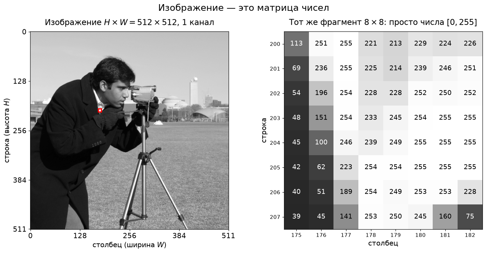
Слева — полутоновое изображение $512\times512$ (один канал); красной рамкой отмечен фрагмент $8\times8$ на границе тёмного пальто и светлого воротника. Справа тот же фрагмент показан так, как его видит компьютер: в левом столбце числа 39–113 (тёмное пальто), правее — примерно 200–255 (светлый воротник); подписи по осям — это номера строки и столбца, то есть индексы элемента матрицы. Никаких «кошек», «краёв» и «объектов» в данных нет — есть только числа, а всё остальное появляется уже после обработки. Порядок осей: HWC, CHW, NCHW
Массив в памяти линеен: это просто длинная лента байтов. Трёхмерный тензор укладывают на эту ленту одним из двух способов, и они несовместимы между собой.
- HWC (height, width, channels) — «пиксель за пикселем»: сначала три байта первого пикселя (R, G, B), потом три байта второго и так далее. Так хранят изображение OpenCV, PIL,
imageio,skimage— всё, что читает файлы с диска. Синонимы: channels-last, interleaved, packed. - CHW (channels, height, width) — «канал за каналом»: сначала целиком матрица красного, потом целиком зелёного, потом синего. Так устроен тензор в PyTorch. Синонимы: channels-first, planar.
Число элементов одинаково, порядок — разный. Перекладка между форматами в numpy делается транспонированием осей:
img.transpose(2, 0, 1)из HWC в CHW иt.transpose(1, 2, 0)обратно. В PyTorch то же самое —tensor.permute(2, 0, 1).Когда изображений много, слева добавляется ось батча $N$, и полная форма тензора становится NCHW:
(batch, channels, height, width). В TensorFlow по историческим причинам по умолчанию принят NHWC, поэтому при переносе кода между фреймворками порядок осей — первое, что стоит проверить.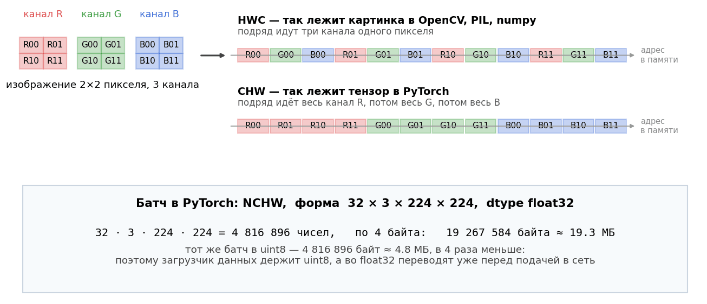
Слева — крошечное изображение $2\times2$ пикселя в трёх каналах: три сетки $2\times2$, то есть двенадцать ячеек, подписанных R00…B11, где две цифры — это строка и столбец. Справа два варианта того, как эти двенадцать чисел ложатся в память подряд, слева направо по стрелке «адрес в памяти». Верхняя лента — HWC: R00, G00, B00, потом R01, G01, B01 и так далее, то есть три канала одного пикселя лежат рядом. Нижняя лента — CHW: сначала все четыре значения канала R, затем все четыре G, затем все четыре B. Числа те же, порядок разный, и перепутать их означает получить мусор. Внизу — арифметика памяти для типичного батча: $32 \cdot 3 \cdot 224 \cdot 224 = 4\,816\,896$ чисел, по $4$ байта каждое, итого $19\,267\,584$ байта, примерно $19.3$ МБ; тот же батч в uint8весит вчетверо меньше.Тип данных и сколько это весит
С диска изображение приходит в
uint8: одно целое число от $0$ до $255$ на канал, ровно один байт. Это компактно и ровно столько, сколько кодирует файл JPEG или PNG.Для вычислений
uint8не годится: он переполняется при сложении, обрезает отрицательные числа и не хранит дробей. Поэтому перед подачей в модель изображение переводят воfloat32— четыре байта на число вместо одного.Отсюда простое правило планирования памяти: умножьте число элементов на размер типа.
\[\text{байт} = N \cdot C \cdot H \cdot W \cdot \text{sizeof(dtype)}\]
Возьмём стандартный вход для ImageNet-моделей: батч из $32$ картинок $224\times224$, три канала,
float32.- Число элементов: $32 \cdot 3 \cdot 224 \cdot 224 = 4\,816\,896$.
- Каждое число
float32— $4$ байта: $4\,816\,896 \cdot 4 = 19\,267\,584$ байта. - Это $19\,267\,584 / 10^6 \approx 19.3$ МБ (или $18.4$ МиБ, если считать по $1024$).
Тот же батч в
uint8весит $4\,816\,896$ байт $\approx 4.8$ МБ — ровно в четыре раза меньше. Поэтому в загрузчике данных картинки держат вuint8, а воfloat32переводят уже на GPU или прямо перед прогоном.И сразу масштаб для сравнения: сами по себе входные данные — мелочь. При обучении ResNet-50 на этом батче активации всех слоёв занимают порядка гигабайта, потому что каждый промежуточный тензор тоже надо хранить для обратного прохода. $19$ МБ входа на этом фоне не видны.
Нормализация
Сырые значения $0..255$ подавать в сеть плохо: у входов большой масштаб и ненулевое среднее, из-за чего градиенты на первом слое получаются большими и разномасштабными, а обучение идёт медленнее. Приводят вход к удобному диапазону в два шага.
Шаг 1 — в отрезок $[0, 1]$. Просто делим на $255$:
img.astype(np.float32) / 255.0. В PyTorch это делаетtransforms.ToTensor(), которая заодно переставляет оси из HWC в CHW.Шаг 2 — стандартизация по каналам. Из каждого канала вычитают его среднее и делят на стандартное отклонение:
\[x' = \frac{x - \mu_c}{\sigma_c}\]
Для ImageNet эти числа давно посчитаны по обучающей выборке и стали фактическим стандартом:
\[\mu = (0.485,\ 0.456,\ 0.406), \qquad \sigma = (0.229,\ 0.224,\ 0.225)\]
в порядке R, G, B и в предположении, что вход уже поделён на 255. После такой нормализации каждый канал имеет примерно нулевое среднее и единичный разброс, а типичные значения лежат в районе $[-2, 2]$.
Важная практическая деталь: если вы берёте предобученную модель, нормализацию надо повторить ровно ту, с которой её обучали. Своя статистика по вашему датасету годится только тогда, когда вы обучаете сеть с нуля.
Пиксель чисто красного цвета:
(255, 0, 0)вuint8.- Деление на $255$: $(1.0,\ 0.0,\ 0.0)$.
- Нормализация ImageNet:
- $R: (1.0 - 0.485)/0.229 = 2.249$
- $G: (0.0 - 0.456)/0.224 = -2.036$
- $B: (0.0 - 0.406)/0.225 = -1.804$
Итог $(2.249,\ -2.036,\ -1.804)$ — как раз тот диапазон, который ожидает первый свёрточный слой предобученной сети.
Когда каналов не три
Тройка RGB — просто самый частый случай, а не закон природы. Ось $C$ может быть какой угодно длины:
- Мультиспектр и гиперспектр. Спутниковые снимки Sentinel-2 — $13$ каналов, включая ближний и коротковолновый инфракрасный. Гиперспектральные камеры дают сотни узких полос. По ним считают, например, индекс растительности $\text{NDVI} = (\text{NIR} - \text{Red})/(\text{NIR} + \text{Red})$ — задача, которую в видимом свете не решить в принципе.
- RGB-D. Четвёртый канал — глубина с датчика (структурированный свет, ToF, стереопара). Ключевая тонкость: у глубины другой физический смысл и другой диапазон, поэтому её нормируют отдельно, а «дырки» (пиксели без измерения) отмечают маской, а не нулём.
- Медицина. КТ и МРТ — это трёхмерный объём $D \times H \times W$. Его либо режут на срезы и обрабатывают как стопку одноканальных картинок, либо подают целиком в 3D-свёртки. Отдельно бывают несколько модальностей МРТ (T1, T1ce, T2, FLAIR) — тогда получается объём с четырьмя каналами.
- Видео. Добавляется ось времени: $T \times C \times H \times W$, а с батчем — пять осей.
- Служебные каналы. Иногда к RGB дописывают карту границ, маску или координатную сетку (приём CoordConv), чтобы дать сети информацию, которую свёртка сама не выводит.
Для полутоновых снимков верно и обратное: канал один, но ось всё равно нужна. Массив формы $(H, W)$ и массив формы $(H, W, 1)$ для numpy — разные вещи, и половина ошибок вида «expected 4 dimensions, got 3» растёт именно отсюда.
Ниже — снимок кошки, разобранный по каналам. Обратите внимание на важную деталь: каждый канал по отдельности — это полутоновое изображение, и окрашивание в красный, зелёный и синий сделано только для наглядности. Сами по себе матрицы $R$, $G$ и $B$ никакого цвета не содержат.
Второй набор панелей показывает, что бывает, если один из трёх каналов обнулить: остаются попарные суммы, и картинка окрашивается в дополнительные цвета — жёлтый (R+G), пурпурный (R+B) и бирюзовый (G+B).
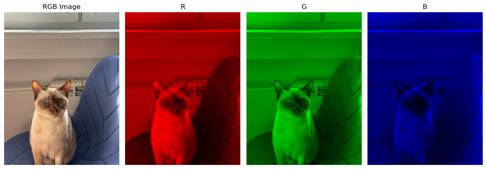
Четыре панели: слева исходное цветное фото моей кошки на синем кресле, затем каналы R, G и B по отдельности. Каждый канал — это одна матрица чисел, то есть полутоновое изображение; красная, зелёная и синяя раскраска добавлена только для наглядности. Светлая шерсть кошки яркая во всех трёх каналах, а синее кресло тёмное в R и G и заметно светлее в B — именно из этой разницы по каналам и складывается цвет. 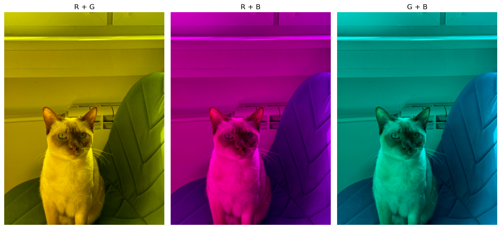
Тот же снимок, где каждый раз один из трёх каналов обнулён. Слева остались R и G — сцена стала жёлто-оливковой, кресло почернело, потому что его цвет держался на синем канале. В центре R и B: изображение пурпурное. Справа G и B: бирюзовое. Это прямая иллюстрация аддитивности RGB — цвет каждого пикселя есть сумма вкладов трёх независимых матриц, и выключение любой из них меняет всю картинку целиком. - Путать HWC и CHW. Самая частая ошибка новичка. Массив $(224, 224, 3)$ подаётся в PyTorch-модель, которая ждёт $(3, 224, 224)$, — и либо падает с ошибкой размерности, либо, что хуже, молча проходит (если $H = W = C$ или сработал broadcasting) и выдаёт мусор. Проверяйте
x.shapeперед каждой границей между библиотеками. - Забывать, что OpenCV отдаёт BGR.
cv2.imreadвозвращает каналы в порядке B, G, R, а PIL иskimage— R, G, B. Если смешать, у людей на фотографиях синеют лица, а нормализация ImageNet применяется не к тем каналам. Лечится одной строкойcv2.cvtColor(img, cv2.COLOR_BGR2RGB)сразу после чтения. - Делить на 255 дважды.
transforms.ToTensor()уже делит. Если перед ней вручную поделить ещё раз, на вход сети приходят числа порядка $0.004$, сеть учится в разы хуже, и никакой ошибки при этом не возникает — только подозрительно плохие метрики. Признак:x.max()после всех преобразований заметно меньше единицы. - Брать чужую нормализацию наугад. Использовать статистику ImageNet для рентгеновских снимков или для спутниковых каналов бессмысленно. Правило: берёте предобученные веса — берёте и их нормализацию; учите с нуля — считайте $\mu$ и $\sigma$ по своей обучающей выборке (и только по обучающей, иначе это утечка).
- Считать в
uint8. Разность двух картинок, сумма, среднее — всё это вuint8переполняется по кругу: $200 + 100$ даст $44$, а $30 - 50$ даст $236$. Перед любой арифметикой переводите воfloat32.
Матрица пикселей — не единственный способ подать картинку в модель:
- AlexNet — свёрточный путь: локальные окна и иерархия признаков.
- ViT — изображение режут на патчи $16\times16$ и обрабатывают как последовательность токенов, ровно как слова в языковой модели.
- Pixtral — во что превращается картинка внутри мультимодальной LLM и сколько токенов контекста она занимает.
- Задачи компьютерного зрения — что именно этот тензор $N \times C \times H \times W$ получает на вход и во что превращается на выходе: метка класса, набор рамок или карта масок.
Что такое пиксель и в каком виде изображение попадает в модель?
Пиксель — элемент прямоугольной сетки, его значение кодирует интенсивность света в этой точке. Изображение — тензор: полутоновое имеет форму $H \times W$, цветное $H \times W \times 3$, а батч в PyTorch — $N \times C \times H \times W$. Никакой семантики в этих числах нет, объекты и границы появляются только после обработки.
Чем HWC отличается от CHW и где какой формат встречается?
Это два способа уложить один и тот же трёхмерный тензор в линейную память. HWC (channels-last) кладёт подряд три канала одного пикселя — так работают OpenCV, PIL и всё, что читает файлы. CHW (channels-first) кладёт подряд весь канал целиком — так устроен тензор в PyTorch. Перекладка — транспонирование осей:
transpose(2, 0, 1). TensorFlow по умолчанию использует NHWC, поэтому при переносе кода порядок осей проверяют первым делом.Сколько памяти занимает батч 32×3×224×224 во float32 и как это посчитать?
Число элементов $32 \cdot 3 \cdot 224 \cdot 224 = 4\,816\,896$, по четыре байта на
float32— $19\,267\,584$ байта, около $19.3$ МБ. Тот же батч вuint8весит вчетверо меньше, примерно $4.8$ МБ, поэтому загрузчик данных обычно держитuint8, а конвертирует уже перед подачей в сеть. На фоне активаций сети, которые при обучении занимают порядка гигабайта, сам вход почти ничего не весит.Зачем нормализуют вход и что делают числа 0.485/0.229?
Сырые значения $0..255$ имеют большое среднее и большой разброс, из-за чего градиенты на первом слое плохо масштабированы. Сначала делят на $255$, приводя к $[0, 1]$, затем вычитают поканальное среднее и делят на поканальное стандартное отклонение. Тройки $(0.485, 0.456, 0.406)$ и $(0.229, 0.224, 0.225)$ — это $\mu$ и $\sigma$, посчитанные по обучающей выборке ImageNet; их берут всегда, когда используют предобученные на ImageNet веса.
Когда каналов больше трёх и что тогда меняется?
Мультиспектральная съёмка (Sentinel-2 — $13$ каналов), RGB-D с каналом глубины, МРТ с несколькими модальностями, видео с осью времени, служебные каналы вроде карты границ. Меняется в основном нормализация: у каналов разной физической природы свои диапазоны, и нормировать их общей статистикой нельзя. Плюс предобученные на RGB веса первого слоя приходится адаптировать — например, усреднять или дублировать под нужное число входных каналов.
Почему нельзя делать арифметику прямо в uint8?
Тип беззнаковый и восьмибитный, поэтому переполнение идёт по кругу: $200 + 100$ даёт $44$, а $30 - 50$ даёт $236$. Разности, суммы и средние в
uint8дают правдоподобный на вид, но неверный результат без всякой ошибки. Перед любой арифметикой изображение переводят воfloat32, а обратно вuint8конвертируют только после клиппинга в $[0, 255]$.
- HWC (height, width, channels) — «пиксель за пикселем»: сначала три байта первого пикселя (R, G, B), потом три байта второго и так далее. Так хранят изображение OpenCV, PIL,
-
Число каналов, цветовое пространство RGB
Канал изображения — отдельная матрица интенсивностей размера $H \times W$. Полутоновое изображение имеет один канал, RGB — три: красный, зелёный, синий.
Цветовое пространство — способ закодировать цвет числами. RGB — аддитивная модель: цвет получается сложением трёх источников света. Ноль по всем трём каналам даёт чёрный, максимум по всем трём — белый, а промежуточные комбинации — всё остальное:
\[(255, 0, 0) \to \text{красный}, \quad (255, 255, 0) \to \text{жёлтый}, \quad (128, 128, 128) \to \text{серый}\]
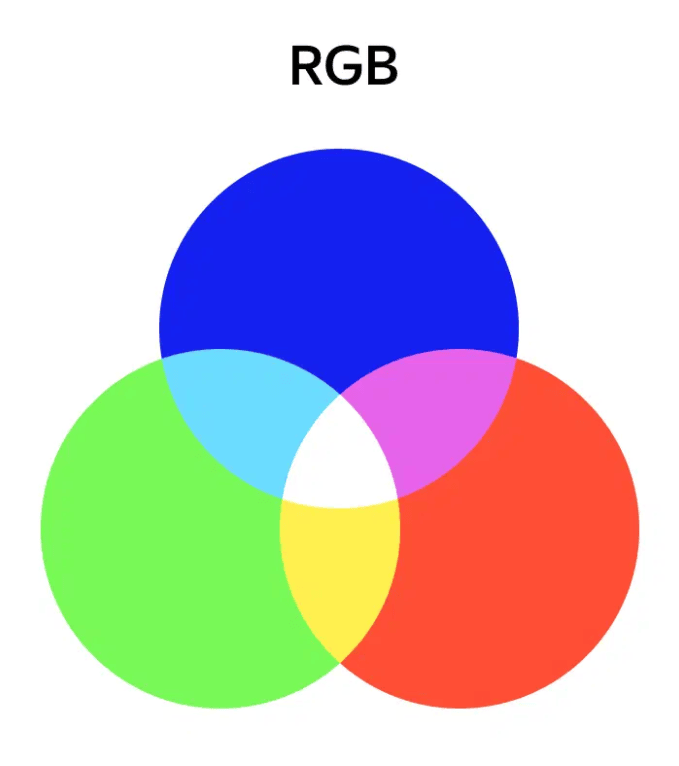
Три круга — красный, зелёный и синий свет на чёрном фоне. Попарные пересечения дают вторичные цвета: красный с зелёным — жёлтый, красный с синим — пурпурный, зелёный с синим — голубой. В центре, где перекрываются все три, получается белый. Это и есть смысл слова «аддитивная»: цвета не смешиваются как краски, а складываются как излучения, и сумма всех трёх максимумов даёт белый, а не чёрный. Свет — это непрерывный спектр: бесконечномерный объект. Три числа его не описывают. Но глазу больше и не нужно.
В сетчатке человека три типа колбочек — S, M и L, чувствительных к коротким (синий, максимум около $420$ нм), средним (зелёный, около $530$ нм) и длинным волнам (красновато-жёлтый, около $560$ нм). Каждая колбочка интегрирует спектр со своей весовой функцией и выдаёт одно число. То есть зрительная система сама проецирует бесконечномерный спектр в три числа — и всё, что дальше видит мозг, это три числа.
Отсюда важное следствие — метамерия: два физически совершенно разных спектра, дающих одинаковые отклики колбочек, неразличимы для глаза. Именно поэтому экран, который излучает всего три узкие полосы, способен изобразить закат: он не воспроизводит спектр заката, он воспроизводит его отклики колбочек.
Поэтому же RGB — модель аддитивная (складываются излучения: экран, проектор), а краски работают по субтрактивной модели CMYK (каждый слой краски вычитает часть падающего света).
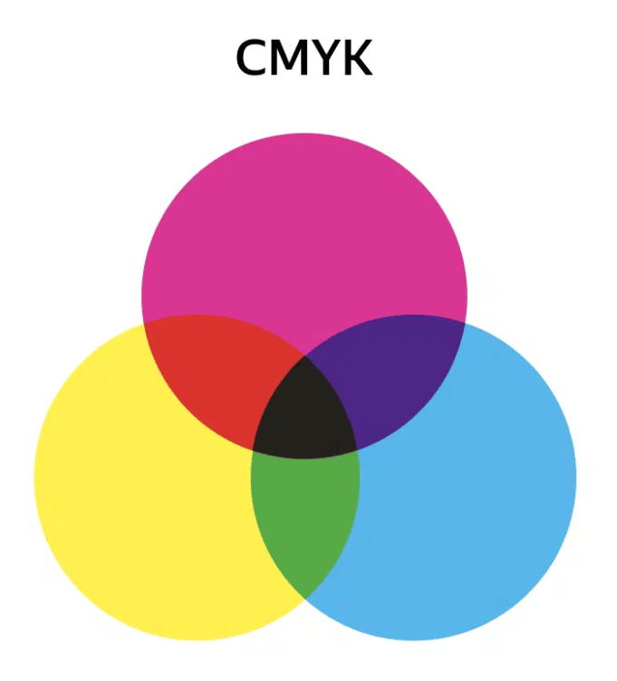
Та же схема из трёх кругов, но на белом фоне и для красок: голубой, пурпурный и жёлтый. Здесь пересечения дают, наоборот, RGB-цвета — пурпурный с жёлтым дают красный, голубой с жёлтым дают зелёный, голубой с пурпурным дают синий, — а в центре, где наложены все три краски, получается почти чёрный. Сравните с предыдущей картинкой: у света сумма всех компонент даёт белый, у красок — чёрный, потому что каждый слой краски не добавляет свет, а вычитает часть падающего. Перевод в градации серого
Самый частый первый шаг любой классической обработки — свести три канала к одному. Каноническая формула (стандарт ITU-R BT.601, тот же, что применяется в JPEG и в телевидении):
\[Y = 0.299\,R + 0.587\,G + 0.114\,B\]
Коэффициенты неравные, и это принципиально: зелёный вносит почти $60\,\%$ воспринимаемой яркости, а синий — около $11\,\%$. Причина — плотность и чувствительность колбочек: M- и L-колбочек в сетчатке в разы больше, чем S, и максимум общей световой чувствительности глаза приходится примерно на $555$ нм, то есть на зелёный.
Для современного стандарта HD (ITU-R BT.709) коэффициенты слегка другие: $Y = 0.2126R + 0.7152G + 0.0722B$. Разница между ними невелика и на практике почти никогда не критична, но знать, что стандартов два, полезно.
Возьмём насыщенно-оранжевый пиксель $(R, G, B) = (230, 120, 40)$.
По формуле BT.601:
\[Y = 0.299 \cdot 230 + 0.587 \cdot 120 + 0.114 \cdot 40 = 68.77 + 70.44 + 4.56 = 143.77 \approx 144\]
А наивное среднее дало бы
\[\frac{230 + 120 + 40}{3} = 130\]
Разница в $14$ уровней — заметная на глаз, около $6\,\%$ шкалы. И она систематическая, а не случайная: наивное среднее занижает яркость зелёных и жёлтых объектов и завышает яркость синих. Сравните два цвета одинаковой «средней» интенсивности:
Цвет RGB Среднее $Y$ по BT.601 Чистый зелёный $(0, 255, 0)$ $85$ $150$ Чистый синий $(0, 0, 255)$ $85$ $29$ Среднее утверждает, что эти цвета одинаково светлые. Глаз видит, что зелёный в пять раз ярче синего, и формула $Y$ это подтверждает.
Другие цветовые пространства
RGB удобен для вывода на экран и для нейросетей, но неудобен для рассуждений о цвете: в нём яркость размазана по всем трём осям, так что «тот же цвет, только темнее» означает изменение всех трёх координат сразу. Поэтому классические алгоритмы переводят изображение в специализированное пространство.
Пространство Оси Для чего берут HSV / HSL тон, насыщенность, яркость Сегментация по цвету: «выделить всё красное» — это один диапазон по H вместо сложной области в RGB-кубе Lab $L^*$ — светлота, $a^*$, $b^*$ — оппонентные оси Перцептуально равномерное: евклидово расстояние $\Delta E$ соответствует воспринимаемой разнице цветов YCbCr яркость + два цветоразностных Сжатие: цветовые каналы можно проредить почти безнаказанно (схема 4:2:0 в JPEG и видеокодеках) CMYK голубой, пурпурный, жёлтый, чёрный Печать (субтрактивная модель) HSV — самое востребованное в классическом CV. Тон $H$ измеряется в градусах $0..360$ (в OpenCV сжат до $0..179$, чтобы влезть в
uint8), насыщенность $S$ и значение $V$ — в $0..1$ или $0..255$. Красный цвет — это $H \approx 0$, и порог по $H$ вылавливает красные объекты при любом освещении гораздо надёжнее, чем условие «$R$ большое, $G$ и $B$ маленькие» в RGB.Lab отвечает на вопрос «насколько эти два цвета различаются для человека». Порог $\Delta E \approx 2.3$ считается порогом едва заметной разницы. Это рабочий инструмент в контроле качества печати и покраски: там, где нужно сказать «отклонение цвета партии допустимо», считают именно $\Delta E$, а не разность в RGB.
YCbCr отделяет яркость $Y$ (та самая формула BT.601) от цветности $Cb = B - Y$, $Cr = R - Y$ с точностью до масштаба и сдвига. Разрешающая способность глаза к цвету заметно ниже, чем к яркости, поэтому $Cb$ и $Cr$ прореживают вдвое по обеим осям — это и есть 4:2:0, первый шаг потерь в JPEG.
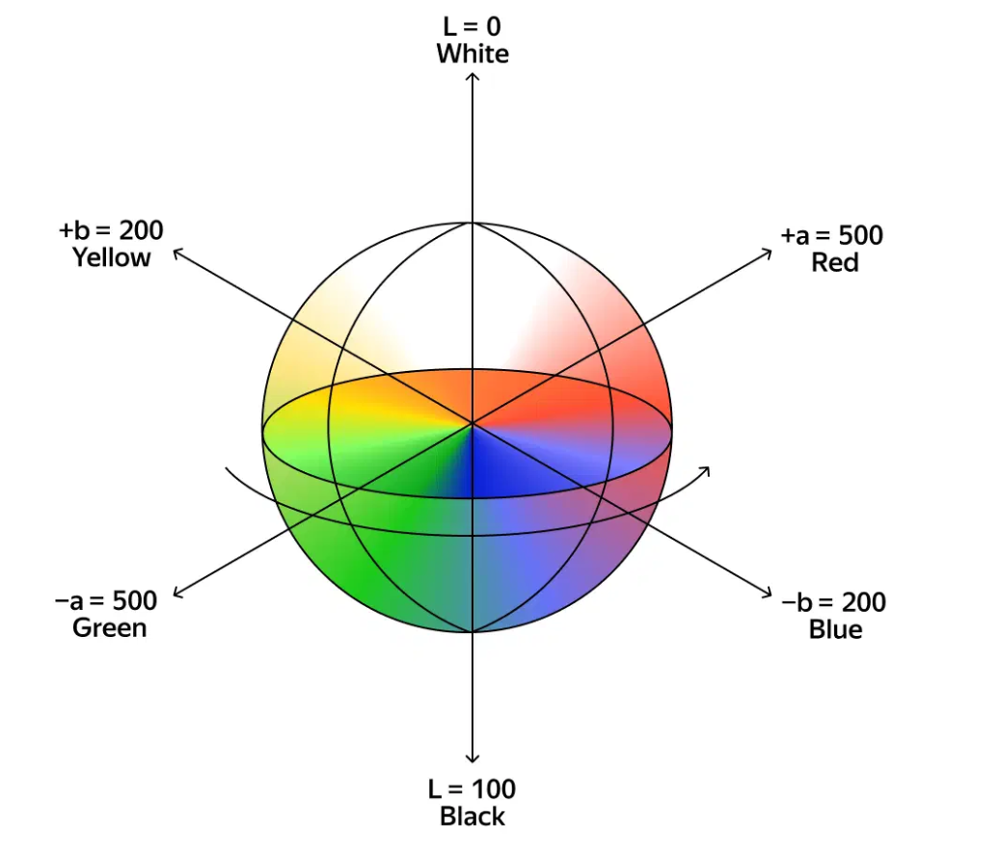
Шар с тремя взаимно перпендикулярными осями. Вертикальная ось — светлота $L$, идущая от чёрного к белому. Горизонтальные оси оппонентные: одна тянется от зелёного к красному (это $a$), вторая от синего к жёлтому (это $b$); подписанные на схеме пределы $\pm 500$ и $\pm 200$ — условные границы диапазона. Смысл конструкции в том, что светлота вынесена в отдельную ось: изменить яркость цвета здесь означает сдвинуться по одной координате, тогда как в RGB пришлось бы менять все три. Обратите внимание, что подписи полюсов вертикальной оси на этой схеме перепутаны: в стандарте CIE Lab $L=0$ — это чёрный, а $L=100$ — белый. 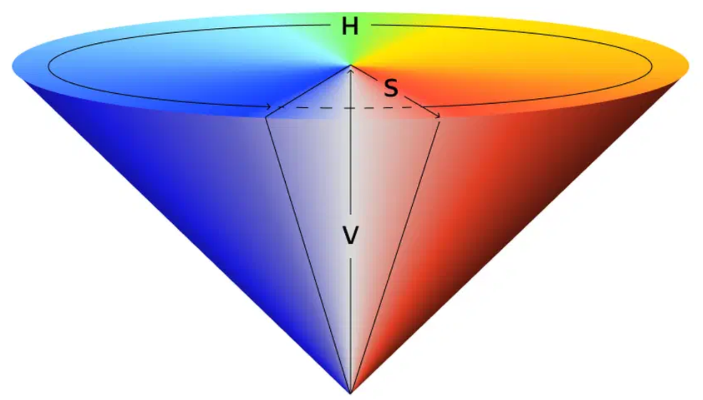
Перевёрнутый конус. По окружности основания идёт тон $H$ — замкнутый цветовой круг от красного через жёлтый, зелёный, голубой и синий обратно к красному; именно замкнутость и делает $H$ циклической величиной. Радиус — насыщенность $S$: на оси конуса цвет полностью обесцвечен, к краю становится максимально насыщенным. Высота — значение $V$: у вершины внизу всё чёрное независимо от $H$ и $S$. Отсюда видно, почему пороги по $H$ нужно всегда дополнять порогом по $S$: у оси конуса тон формально определён, но фактически не несёт информации. Гамма: почему 128 — это не половина
Число $128$ в файле не означает «половина светового потока». Значения в обычном изображении закодированы в пространстве sRGB, а оно связано с физической яркостью нелинейно — примерно степенной зависимостью с показателем $2.2$:
\[L_{\text{физ}} \approx \left(\frac{v}{255}\right)^{2.2}\]
Подставим $v = 128$: $(0.502)^{2.2} \approx 0.216$. То есть пиксель со значением $128$ излучает всего около $22\,\%$ от максимума, а не $50\,\%$.
Зачем так сделано. Восприятие яркости человеком тоже нелинейно: глаз гораздо чувствительнее к различиям в тенях, чем в светах. Гамма-кодирование расходует доступные $256$ уровней неравномерно — густо в тёмной части, редко в светлой, — и тем самым согласуется с восприятием. Благодаря этому восьми бит хватает; при линейном кодировании на тенях были бы видны ступеньки.
Когда это ломает вычисления. Все операции, имеющие физический смысл сложения света, должны выполняться в линейном пространстве: усреднение при уменьшении картинки, гауссово размытие, композитинг, суммирование экспозиций. Правильный порядок такой:
- снять гамму: $v_{\text{lin}} = (v/255)^{2.2}$;
- выполнить операцию;
- вернуть гамму: $v = 255 \cdot v_{\text{lin}}^{1/2.2}$.
Классическая демонстрация ошибки: уменьшите вдвое картинку с тонкими чёрно-белыми полосками. Усреднение прямо в sRGB даст $(0 + 255)/2 = 128$, что по яркости составляет $22\,\%$ — серое пятно заметно темнее исходной полосатой области, у которой средняя яркость $50\,\%$. Физически корректный ответ: $(0 + 1)/2 = 0.5$ в линейной шкале, что после возврата гаммы даёт $255 \cdot 0.5^{1/2.2} \approx 186$.
- RGB против BGR.
cv2.imreadвозвращает каналы в порядке B, G, R; PIL,skimageи matplotlib работают в R, G, B. Симптом — синие лица и оранжевое небо при выводе черезplt.imshow. Ставьтеcv2.cvtColor(img, cv2.COLOR_BGR2RGB)сразу после чтения и не полагайтесь на память. - «Серый — это среднее каналов». Неверно: вклад зелёного примерно в пять раз больше вклада синего ($0.587$ против $0.114$). Наивное среднее систематически искажает контраст, особенно на цветных объектах. Берите $Y = 0.299R + 0.587G + 0.114B$ или готовую функцию (
cv2.cvtColor(..., COLOR_RGB2GRAY),skimage.color.rgb2gray— последняя, кстати, использует коэффициенты BT.709). - Усреднять тон Hue линейно. $H$ — угол на цветовом круге, он циклический. Среднее между $350^\circ$ и $10^\circ$ равно $0^\circ$ (красный), а не $180^\circ$ (бирюзовый), который выдаёт обычное арифметическое усреднение. Для циклических величин усредняют вектор $(\cos H, \sin H)$ и берут
atan2от результата. По той же причине красный диапазон в HSV задают двумя интервалами: $H < 10$ и $H > 170$. - Считать sRGB линейным при усреднении и размытии. Ресайз, блюр и альфа-композитинг прямо в sRGB систематически затемняют результат. Если численная точность важна — снимайте гамму перед операцией и возвращайте после.
- Ожидать, что HSV решит проблему освещения полностью. Тон устойчивее RGB к изменению яркости, но не инвариантен: при цветной подсветке (лампа накаливания, закат) $H$ уезжает, а при $S \approx 0$ (почти серый пиксель) тон вообще не определён и вырождается в шум. Пороги по $H$ всегда сопровождайте порогом по $S$.
Всё перечисленное — про то, как цвет кодируется в тензоре, который потом уходит в модель:
- Задачи компьютерного зрения — что происходит с этими тремя каналами дальше: как выглядит вход сети и во что он превращается.
- Косинусное преобразование и JPEG — где именно применяется YCbCr и прореживание цветности 4:2:0.
- Гистограммная эквализация — почему контраст правят только по каналу яркости, а не по каждому каналу RGB отдельно.
Почему цвет кодируют тремя числами, а не спектром?
В сетчатке три типа колбочек (S, M, L), каждый интегрирует спектр со своей весовой функцией и выдаёт одно число. Зрительная система сама сводит бесконечномерный спектр к трём откликам, поэтому три числа полностью описывают цвет для человека. Следствие — метамерия: физически разные спектры с одинаковыми откликами колбочек неразличимы, и именно поэтому экран из трёх узких полос способен изобразить любую сцену.
Как перевести RGB в градации серого и почему коэффициенты разные?
$Y = 0.299R + 0.587G + 0.114B$ (BT.601) или $Y = 0.2126R + 0.7152G + 0.0722B$ (BT.709). Коэффициенты отражают вклад каналов в воспринимаемую яркость: максимум чувствительности глаза приходится на зелёную область спектра, а к синему глаз чувствителен слабо. Наивное среднее каналов даёт систематическую ошибку: чистый зелёный и чистый синий получают одинаковую «яркость» $85$, хотя по $Y$ это $150$ против $29$.
Когда стоит перейти в HSV, Lab и YCbCr?
HSV — когда задача формулируется в терминах цвета: «найти всё красное» становится порогом по одному каналу $H$. Lab — когда нужно измерять различие цветов так, как его видит человек: расстояние $\Delta E$ перцептуально равномерно, порог заметности около $2.3$. YCbCr — когда нужно сжатие: яркость отделена от цветности, а цветность можно проредить вдвое по обеим осям (схема 4:2:0), и глаз этого почти не заметит.
Что такое гамма и почему 128 — это не половина яркости?
Обычные изображения закодированы в sRGB, где связь значения с физической яркостью примерно степенная с показателем $2.2$. Значение $128$ соответствует $(128/255)^{2.2} \approx 0.22$, то есть $22\,\%$ светового потока. Так сделано намеренно: восприятие яркости нелинейно, и гамма-кодирование расходует $256$ уровней плотнее в тенях, где глаз чувствительнее. Из-за этого усреднение, размытие и ресайз строго говоря надо делать в линейном пространстве: снять гамму, посчитать, вернуть гамму.
Почему нельзя усреднять канал Hue обычным средним?
$H$ — угол на замкнутом цветовом круге. Среднее между $350^\circ$ и $10^\circ$ должно быть $0^\circ$ (красный), а арифметическое усреднение даёт $180^\circ$ — противоположный цвет. Корректно усреднять вектор $(\cos H, \sin H)$ и брать
atan2. По той же причине красный диапазон задают двумя интервалами по краям шкалы, а при малой насыщенности тон вообще не определён и его нельзя использовать.Какая разница между аддитивной и субтрактивной моделью?
Аддитивная (RGB) описывает сложение излучений: экран, проектор, светодиод — начинаем с чёрного и добавляем свет, сумма всех трёх даёт белый. Субтрактивная (CMYK) описывает поглощение: краска на белой бумаге вычитает часть падающего света, сумма всех красок стремится к чёрному. Поэтому «жёлтый плюс синий» на экране и на бумаге дают разный результат — это разные физические операции.
-
Число бит для кодирования изображения
Глубина цвета (bit depth) — сколько бит отведено на одно значение одного канала. Она определяет, сколько различимых уровней яркости может хранить файл:
\[\text{уровней на канал} = 2^b\]
а всего цветов у изображения с $C$ каналами:
\[\text{цветов} = (2^{b})^{C} = 2^{b \cdot C}\]
Ходовые варианты:
Тип Бит на канал Диапазон Где встречается uint8$8$ $0..255$ JPEG, PNG, всё бытовое; $2^{24} \approx 16.7$ млн цветов uint16$16$ $0..65535$ RAW с камеры, медицина (DICOM), микроскопия, спутники float16/float32— любой HDR, промежуточные вычисления, вход нейросети Ключевое: глубина цвета и число каналов — разные вещи. «$24$-битное изображение» обычно означает $8$ бит на канал в трёх каналах, а не $24$ бита на канал.
Сенсор измеряет непрерывную величину — количество набранных фотонов. АЦП превращает её в целое число, и вот тут возникают два связанных понятия.
Шаг квантования — насколько велика «ступенька» между соседними кодами. Если сенсор регистрирует освещённость в диапазоне $[0, L_{\max}]$ и кодирует её $b$ битами, то
\[\Delta = \frac{L_{\max}}{2^b - 1}\]
Всё, что меньше $\Delta$, теряется безвозвратно: два разных физических уровня получают одно и то же число.
Динамический диапазон — отношение самого яркого регистрируемого сигнала к самому слабому. При равномерном квантовании $b$ бит дают
\[\text{DR} = 20\log_{10}(2^b)\ \text{дБ} \approx 6.02\,b\ \text{дБ}\]
$8$ бит — около $48$ дБ, то есть отношение примерно $256{:}1$. $14$ бит (типичный RAW с зеркалки) — около $84$ дБ, отношение $16384{:}1$. Реальная сцена запросто перекрывает $10^5{:}1$: тень под деревом и солнечное небо в одном кадре. Отсюда и берётся необходимость в HDR.
Фотография $4000 \times 3000$ пикселей (12 мегапикселей), три канала, без сжатия:
- 8 бит на канал: $4000 \cdot 3000 \cdot 3 \cdot 1\ \text{байт} = 36\,000\,000$ байт $= 36$ МБ.
- 16 бит на канал: $4000 \cdot 3000 \cdot 3 \cdot 2\ \text{байта} = 72\,000\,000$ байт $= 72$ МБ.
- float32: $4000 \cdot 3000 \cdot 3 \cdot 4 = 144$ МБ.
Ровно вдвое и вчетверо — цена битности линейна. Для сравнения: тот же кадр в JPEG среднего качества займёт около $3$–$5$ МБ, то есть сжатие с потерями выигрывает примерно на порядок больше, чем можно выиграть на битности.
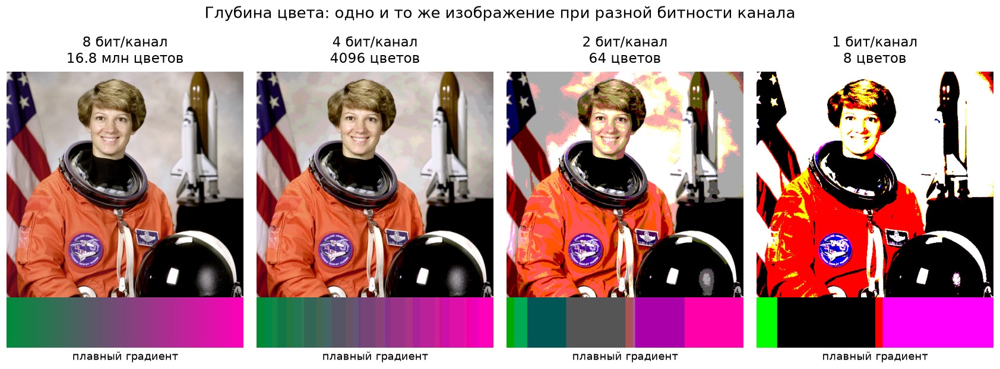
Верхний ряд — одно и то же фото при $8$, $4$, $2$ и $1$ бите на канал; над каждой панелью подписано доступное число цветов $2^{3b}$. При $4$ битах ($4096$ цветов) плавные переходы на лице и на фоне уже распадаются на пятна, при $2$ битах фон становится набором плоских заливок, при $1$ бите остаются $8$ цветов и снимок превращается в постер. Нижний ряд — тот же эксперимент на плавном цветовом градиенте: именно на градиентах ступеньки видны раньше всего, поэтому небо и кожа первыми страдают от нехватки битности. Почему глазу хватает восьми бит
Человеческий глаз различает не абсолютную разницу яркостей, а относительную. Закон Вебера: минимальное заметное изменение $\Delta L$ пропорционально самой яркости $L$,
\[\frac{\Delta L}{L} \approx \text{const} \approx 0.01\!-\!0.02\]
То есть на уровне яркости $100$ мы заметим изменение примерно на единицу, а на уровне $10$ — примерно на $0.1$.
Отсюда два следствия:
- Линейное квантование в 8 бит было бы недостаточным. В тенях шаг $1/255$ составлял бы огромную относительную долю сигнала, и ступеньки бросались бы в глаза.
- Гамма-кодирование спасает. Стандарт sRGB хранит не яркость, а её степень $\approx L^{1/2.2}$, и это распределяет $256$ уровней неравномерно: густо в тенях, где глаз чувствителен, редко в светах, где не чувствителен. После такого преобразования шаг между соседними кодами почти всюду оказывается около порога заметности. Восьми бит хватает именно благодаря гамме, а не само по себе.
Когда восьми бит всё же не хватает, возникает бэндинг (полосатость, banding): на плавном градиенте — небо на закате, размытый фон, стенка студии — вместо непрерывного перехода видны полосы. Причина в том, что на очень пологом градиенте один шаг квантования растягивается на десятки пикселей, и граница между уровнями становится видимой линией.
Дизеринг (dithering) — приём борьбы с бэндингом: перед квантованием к сигналу добавляют небольшой шум амплитудой порядка одного шага $\Delta$.
Звучит парадоксально — добавить шум, чтобы стало лучше, — но работает так: без шума все пиксели на пологом участке округляются в одну сторону, и получается ровная полоса. С шумом округление становится случайным, и вместо резкой границы между уровнями появляется плавный переход из смеси двух уровней. Глаз (и любая последующая операция усреднения) видит промежуточное значение, которого в шкале физически нет.
Формально дизеринг превращает систематическую ошибку квантования в случайную, а случайную ошибку зрительная система усредняет и не замечает. Продвинутые варианты — упорядоченный дизеринг по матрице Байера и распространение ошибки по Флойду–Стайнбергу — вместо чистого шума используют структурированный узор.
Тот же приём применяется в звуке при переводе $24$-битной записи в $16$-битную, и по той же причине.
HDR и тональная компрессия
HDR (High Dynamic Range) — работа со сценами, чей динамический диапазон больше, чем у носителя. Классический источник HDR-кадра — брекетинг: снять одну сцену с несколькими экспозициями (например, $-2$, $0$, $+2$ ступени), затем собрать из них одно изображение в
float32, где значения пропорциональны физической яркости и не ограничены сверху.Но показать такой кадр на обычном экране нельзя: у экрана $8$ бит и контраст в лучшем случае $1000{:}1$. Нужна тональная компрессия (tone mapping) — нелинейное отображение широкого диапазона в узкий.
Самый простой оператор — Рейнхарда:
\[L_{\text{out}} = \frac{L}{1 + L}\]
Он монотонно сжимает $[0, \infty)$ в $[0, 1)$: слабые сигналы почти не трогает ($L \ll 1 \Rightarrow L_{\text{out}} \approx L$), сильные придавливает к единице. Более качественные операторы (Дурана, Фаттала, Мантиюка) работают локально: сжимают низкочастотную составляющую, оставляя локальный контраст нетронутым, — иначе картинка получается плоской и «мыльной». Именно перегнутая тональная компрессия даёт тот самый узнаваемый «переHDRенный» вид с ореолами вокруг силуэтов.
Отдельно стоит помнить: тональная компрессия — необратимая операция. Если вам нужна физическая яркость (фотометрия, компьютерное зрение по абсолютным величинам), работайте с линейным HDR-кадром и сжимайте только для показа.
Компьютерная томография хранит не яркость, а единицы Хаунсфилда (HU) — калиброванную шкалу плотности тканей, где вода равна $0$, воздух $-1000$, плотная кость доходит до $+2000$ и выше. Диапазон в несколько тысяч уровней в $8$ бит не влезает, поэтому DICOM хранит $12$ или $16$ бит на пиксель.
Показать это на экране целиком нельзя — и не нужно: врач смотрит не всё сразу, а конкретный срез шкалы. Механизм называется window/level: выбирается центр окна $C$ и его ширина $W$, и всё, что попало в $[C - W/2,\ C + W/2]$, линейно растягивается на $0..255$; всё ниже становится чёрным, всё выше — белым.
Стандартные пресеты:
Окно $C$ (HU) $W$ (HU) Что видно Лёгочное $-600$ $1500$ Структура лёгочной ткани Мягкотканное $40$ $400$ Органы, мышцы, жир Костное $300$ $1500$ Кортикальный слой, переломы Одни и те же данные под разными окнами выглядят как совершенно разные снимки. Практический вывод для ML: признак «яркость пикселя» в медицине не определён без указания окна. Если модель обучалась на изображениях, отрендеренных в мягкотканном окне, а на инференс придут те же данные в костном, метрики рухнут — при том что исходные HU-значения не менялись.
- Переполнение
uint8при арифметике. Тип беззнаковый и цикличный: $200 + 100$ даёт $44$, $30 - 50$ даёт $236$. Сложение двух картинок, вычитание фона, усиление контраста — всё это вuint8даёт правдоподобный с виду мусор без единой ошибки. Переводите воfloat32(или используйтеcv2.add, который насыщает вместо переполнения). - Перевод
float → uint8без клиппинга.np.astype(np.uint8)не насыщает, а берёт остаток по модулю $256$ и отбрасывает дробную часть. Значение $260.7$ превратится в $4$, а $-3$ — в $253$. Правильно:np.clip(x, 0, 255).astype(np.uint8). Симптом ошибки — яркие пятна на месте пересветов и чёрные точки на месте теней. - Делить 12-битный DICOM на 65535. Данные лежат в контейнере
uint16, но фактически заняты только $12$ бит, то есть значения не превышают $4095$. Деление на $65535$ сожмёт всю картинку в нижнюю $1/16$ шкалы, и она станет почти чёрной. Правильный делитель берётся из тегаBitsStoredв самом файле DICOM, а лучше — вообще не нормировать «на максимум типа», а применить window/level по HU. - Путать глубину цвета с числом каналов. «$24$ бита» в свойствах файла — это $8$ бит на канал в трёх каналах, а не $24$ бита на канал. Соответственно «$32$-битный PNG» — это $8 \times 4$ (RGBA), а не $32$ бита на канал.
- Считать, что больше бит всегда лучше. Для задачи классификации кошек лишние восемь бит бесполезны: сеть всё равно приводит вход к
float32и нормирует, а информация в старших разрядах и так дублируется. Битность важна там, где важен динамический диапазон: астрономия, медицина, промышленный контроль, HDR-съёмка. За неё платят двукратным ростом памяти и скорости ввода-вывода.
Что такое глубина цвета и чем она отличается от числа каналов?
Глубина цвета — число бит на одно значение одного канала; она задаёт $2^b$ различимых уровней яркости. Число каналов — сколько таких матриц в изображении. Общее число цветов $2^{b \cdot C}$. Поэтому «$24$-битное изображение» означает $8$ бит на канал в трёх каналах, а не $24$ бита на канал; типичные значения —
uint8для бытовых снимков иuint16для RAW, медицины и спутников.Что такое шаг квантования и динамический диапазон?
Шаг квантования $\Delta = L_{\max}/(2^b - 1)$ — величина ступеньки между соседними кодами; всё, что меньше шага, теряется. Динамический диапазон — отношение максимального регистрируемого сигнала к минимальному, для $b$ бит он составляет примерно $6\,b$ децибел: $8$ бит дают около $48$ дБ, $14$ бит — около $84$ дБ. Реальная сцена с тенью и солнцем может перекрывать $10^5{:}1$, что и порождает задачу HDR.
Почему человеку хватает восьми бит на канал?
Из-за закона Вебера: глаз реагирует на относительное изменение яркости, порог составляет примерно $1$–$2\,\%$. Линейное квантование в $8$ бит было бы недостаточным в тенях, но sRGB хранит не яркость, а её степень $\approx L^{1/2.2}$, и гамма распределяет $256$ уровней плотно в тенях и редко в светах — как раз пропорционально чувствительности глаза. То есть восьми бит хватает благодаря гамма-кодированию, а не само по себе. Там, где градиент очень пологий, восьми бит всё же не хватает и возникает полосатость.
Что такое дизеринг и почему добавление шума улучшает картинку?
Дизеринг — добавление шума амплитудой порядка одного шага квантования перед округлением. Он превращает систематическую ошибку квантования в случайную: вместо ровной полосы одного уровня получается смесь двух соседних уровней в случайной пропорции, и зрительная система усредняет её в промежуточный тон, которого в шкале нет. Структурированные варианты — упорядоченный дизеринг по матрице Байера и распространение ошибки по Флойду–Стайнбергу.
Что такое HDR и tone mapping?
HDR — изображение, чей динамический диапазон больше, чем у носителя; хранится в
float32с линейными значениями, обычно собирается из нескольких экспозиций. Tone mapping — нелинейное сжатие этого диапазона до $8$ бит для показа; простейший вариант — оператор Рейнхарда $L/(1+L)$, качественные операторы работают локально, сжимая только низкочастотную составляющую. Операция необратима, поэтому для количественных задач хранят линейный HDR, а тональную компрессию применяют только для визуализации.Что такое window/level в медицинских изображениях?
КТ хранит калиброванную плотность в единицах Хаунсфилда (вода $0$, воздух $-1000$, кость выше $+1000$) с глубиной $12$–$16$ бит. Window/level — выбор центра $C$ и ширины $W$ окна, которое линейно растягивается на видимые $0..255$, а всё за его пределами обрезается. Одни и те же данные под лёгочным, мягкотканным и костным окнами выглядят как разные снимки. Для ML это значит, что яркость пикселя не определена без указания окна, и модель, обученная в одном пресете, ломается на другом.
-
Гистограмма изображения и эквализация
Гистограмма изображения $h$ — это функция, которая каждому уровню яркости $r \in \{0, 1, \dots, L-1\}$ ставит в соответствие число пикселей с этой яркостью:
\[h(r) = \#\{(x, y) : I(x, y) = r\}\]
Для 8-битного изображения $L = 256$. Нормированная гистограмма $p(r) = h(r) / N$, где $N$ — общее число пикселей, — это эмпирическая оценка распределения яркостей.
Если совсем простыми словами: гистограмма отвечает на вопрос «сколько в картинке тёмных пикселей, сколько средних, сколько светлых». Она не знает, где эти пиксели расположены — переставьте пиксели местами как угодно, гистограмма не изменится.
- Показывает: общую яркость (где центр масс распределения), контраст (насколько распределение растянуто), пересветы и провалы в тенях (пики, прилипшие к 0 или 255), число доминирующих «слоёв» яркости.
- Не показывает: пространственную структуру. У фотографии и у её случайно перемешанной версии гистограммы совпадают до последнего бита. Поэтому по гистограмме нельзя судить о резкости, шуме или наличии объектов.
Яркость, контраст и гамма
Все три работают пиксель за пикселем, независимо от соседей — это и делает их дешёвыми.
1. Яркость — прибавление константы, гистограмма едет вбок:
\[I'(x,y) = \mathrm{clip}\big(I(x,y) + b,\; 0,\; 255\big)\]
2. Контраст — умножение на коэффициент относительно середины, гистограмма растягивается или сжимается:
\[I'(x,y) = \mathrm{clip}\big(\alpha \cdot (I(x,y) - 128) + 128,\; 0,\; 255\big)\]
При $\alpha > 1$ контраст растёт, при $\alpha < 1$ падает.
3. Гамма-коррекция — нелинейное преобразование, которое двигает середину, почти не трогая края:
\[I'(x,y) = 255 \cdot \left(\frac{I(x,y)}{255}\right)^{\gamma}\]
При $\gamma < 1$ картинка светлеет (тени вытягиваются), при $\gamma > 1$ темнеет. В отличие от прибавления константы, гамма не выжигает света: значение 255 остаётся 255 при любой $\gamma$.
Значения в обычном JPEG или PNG не пропорциональны физическому количеству света. Стандарт sRGB хранит примерно $V \approx L^{1/2.2}$, где $L$ — линейная яркость. Так сделано, чтобы 8 бит расходовались экономно: глаз различает больше оттенков в тенях, чем в светах, и логарифмоподобная шкала даёт больше разрешения именно там, где оно нужно.
Практическое следствие: усреднять пиксели напрямую — арифметически некорректно. Ресайз, размытие и альфа-смешивание строго говоря нужно делать в линейном пространстве (сначала возвести в степень 2.2, усреднить, вернуть обратно). Большинство библиотек этого не делают, и на резких контрастных границах видны потемнения. Для нейросетей это обычно не важно — сеть выучит любую монотонную шкалу, — но при фотометрических измерениях важно.
Эквализация гистограммы
Эквализация — поточечное преобразование, которое стремится сделать гистограмму равномерной. Строится по накопленной гистограмме (CDF):
\[\mathrm{CDF}(r) = \sum_{k=0}^{r} p(k), \qquad s = T(r) = \mathrm{round}\big(255 \cdot \mathrm{CDF}(r)\big)\]
Идея в одну строку: берём в качестве новой яркости то, какую долю пикселей мы уже накопили. Если 40 % пикселей темнее данного уровня, этот уровень уедет в $0.4 \cdot 255 \approx 102$.
Почему это выравнивает распределение: применить к случайной величине её собственную функцию распределения — стандартный приём (probability integral transform), дающий равномерное распределение на $[0,1]$. Для непрерывной величины результат точно равномерный; для дискретной — приближённо.
Возьмём картинку $8 \times 8 = 64$ пикселя с глубиной 3 бита (уровни $0..7$). Гистограмма:
$r$ 0 1 2 3 4 5 6 7 $h(r)$ 2 6 20 22 10 4 0 0 $p(r)$ 0.031 0.094 0.313 0.344 0.156 0.063 0 0 $\mathrm{CDF}(r)$ 0.031 0.125 0.438 0.781 0.938 1.000 1.000 1.000 Картинка тёмная и низкоконтрастная: всё сгрудилось в уровнях 2–3, уровни 6 и 7 пустуют.
Считаем $s = \mathrm{round}(7 \cdot \mathrm{CDF}(r))$ (для 3 бит максимум равен 7, а не 255):
$r$ 0 1 2 3 4 5 6 7 $7 \cdot \mathrm{CDF}$ 0.22 0.88 3.06 5.47 6.56 7.00 7.00 7.00 $s = T(r)$ 0 1 3 5 7 7 7 7 Новая гистограмма: $h'(0) = 2$, $h'(1) = 6$, $h'(3) = 20$, $h'(5) = 22$, $h'(7) = 10 + 4 = 14$. Остальные — нули.
Два вывода, которые видно прямо в цифрах:
- Диапазон растянулся с $[0, 5]$ на весь $[0, 7]$ — контраст вырос.
- Идеально равномерной гистограмма не стала. При 64 пикселях и 8 уровнях равномерность означала бы по 8 пикселей на уровень; вместо этого часть уровней пустует, а уровни 4 и 5 слились в один. Это неизбежно: преобразование поточечное и монотонное, оно может переставлять и склеивать столбики, но не может разрезать один столбик на два.
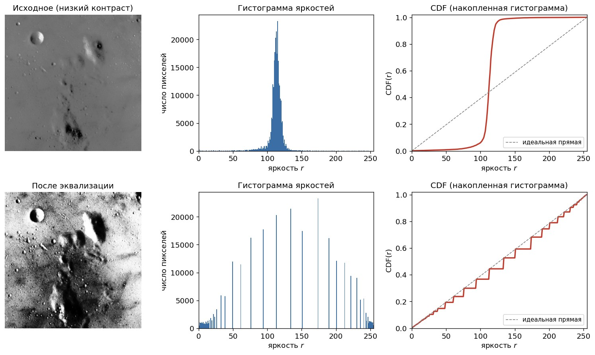
Верхний ряд — снимок Луны с низким контрастом. Гистограмма (в центре) — узкий пик в районе яркости 110–120: почти все пиксели зажаты в 40 уровнях из 256. CDF (справа) поэтому имеет вид почти вертикальной ступеньки. Нижний ряд — после эквализации: детали в кратерах и тенях стали видны, гистограмма растянулась на весь диапазон 0–255, а CDF легла близко к пунктирной диагонали — признак того, что распределение стало почти равномерным. Обратите внимание на гребёнку в нижней гистограмме: между столбиками зияют дыры. Это та самая склейка уровней из числового примера — поточечное преобразование не умеет разрезать столбики, только сдвигать и объединять. - Усиливает шум в тёмных областях. Если 60 % пикселей лежат в узком диапазоне 10–20, эквализация растянет этот диапазон на треть шкалы. Вместе с полезным сигналом растянется и шум сенсора, который там же и живёт. Гладкое ночное небо превращается в зернистую кашу.
- Слепа к содержанию. Если на кадре есть большое однородное пятно (небо, стена, фон документа), оно даст огромный пик в гистограмме, и эквализация потратит на него львиную долю выходного диапазона, а всё остальное сожмёт.
- Меняет средний тон непредсказуемо. Портретный снимок после эквализации часто выглядит неестественно: кожа уезжает в неправдоподобные тона.
CLAHE: локальная эквализация
CLAHE (Contrast Limited Adaptive Histogram Equalization) чинит обе беды глобальной эквализации:
- Adaptive — изображение режется на тайлы (типично $8 \times 8$), и в каждом тайле строится своя гистограмма и своё преобразование. Значения между тайлами интерполируются билинейно, чтобы не было видно швов.
- Contrast Limited — перед вычислением CDF гистограмма обрезается по высоте на уровне
clip_limit, а срезанная масса равномерно раскидывается по всем корзинам.
Ограничение по высоте — это буквально ограничение на наклон $T(r)$, то есть на максимальный коэффициент усиления контраста. Именно оно не даёт шуму в тенях вырасти в разы.
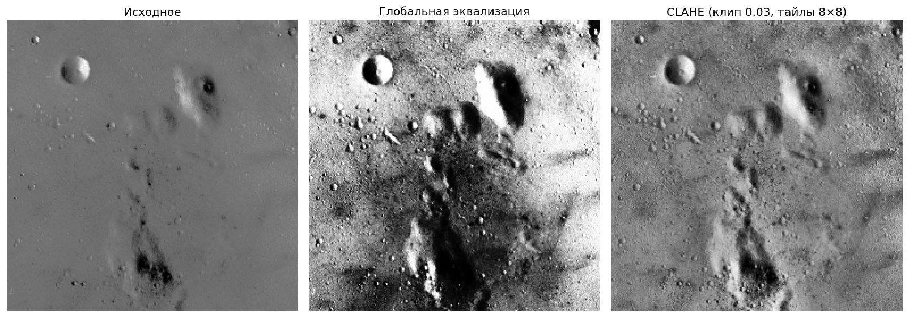
Слева исходный снимок, в центре глобальная эквализация, справа CLAHE с clip_limit 0.03 и тайлами 8×8. Глобальная версия вытащила детали, но заодно вытащила и зерно: поверхность в правой верхней части кадра покрылась крапом, а тени в нижней половине провалились в чёрное. CLAHE даёт более спокойную картинку: локальный контраст в кратерах виден не хуже, но шум не раздут, а общая тональность сохранена. Полезно увидеть в цифрах, чем гамма отличается от простого прибавления яркости. Возьмём три пикселя: тёмный (30), средний (128), светлый (240).
Исходное $r$ 30 128 240 $r + 40$ (яркость) 70 168 255 (обрезано, было бы 280) $\gamma = 0.5$ (гамма) 87 180 247 Разница видна сразу:
- Прибавление константы выжгло светлый пиксель: 280 обрезалось до 255, и вместе с ним обрезались все значения выше 215 — детали в светах потеряны безвозвратно.
- Гамма $0.5$ подняла тёмный пиксель сильнее (30 → 87, рост в 2.9 раза), средний умеренно (128 → 180, в 1.4 раза), а светлый почти не тронула (240 → 247). Значение 255 при любой $\gamma$ остаётся 255, поэтому пересветов не возникает в принципе.
Проверка расчёта: $255 \cdot (30/255)^{0.5} = 255 \cdot 0.343 = 87.4$; $255 \cdot (128/255)^{0.5} = 255 \cdot 0.708 = 180.6$; $255 \cdot (240/255)^{0.5} = 255 \cdot 0.970 = 247.3$.
Именно поэтому в обработке фотографий тональную кривую правят гаммой или S-образной кривой, а не сдвигом: монотонное преобразование без обрезки сохраняет весь исходный порядок значений и не создаёт плоских участков.
Есть третий вариант, когда нужна не равномерность, а конкретное целевое распределение — например, привести снимок к тональности эталонного кадра. Приём называется histogram matching (specification):
\[T(r) = \mathrm{CDF}_{\text{цель}}^{-1}\big(\mathrm{CDF}_{\text{вход}}(r)\big)\]
Читается так: «эквализуй вход, а затем примени обратное преобразование целевого распределения». Применяется при сшивке панорам (выравнивание экспозиции соседних кадров), в спутниковых снимках разных дат и как простой способ доменной адаптации для медицинских изображений с разных аппаратов.
- Медицинские снимки. CLAHE — фактически стандартный шаг предобработки рентгена и КТ: он выравнивает контраст между аппаратами и режимами съёмки.
- Аугментация. Случайные
brightness,contrast,gammaвalbumentations— это ровно операции из этого вопроса. Они учат сеть не зависеть от условий освещения. См. аугментацию данных. - Нормализация входа сети. Вычитание среднего и деление на стандартное отклонение — тоже поточечное аффинное преобразование, то есть «яркость плюс контраст», только с параметрами из статистики датасета.
- Чего делать не стоит: эквализовать каждый канал RGB по отдельности. Каналы обработаются разными кривыми, и цвета поплывут. Если нужен цвет — переводите в HSV или Lab и работайте только с каналом яркости.
- Считать, что эквализация делает гистограмму строго равномерной. Для дискретной шкалы это невозможно: преобразование монотонное и поточечное, оно склеивает уровни, но не расщепляет их. Реальная гистограмма после эквализации — гребёнка с дырами, как на иллюстрации.
- Применять глобальную эквализацию там, где нужен CLAHE. На снимке с большим однородным фоном или сильно неравномерной подсветкой глобальная версия почти всегда портит картину. Правило: если освещение по кадру меняется — берите локальный вариант.
- Забывать про гамму при усреднении. Ресайз и размытие в sRGB-значениях математически неверны; для точных фотометрических задач нужно переходить в линейное пространство.
- Эквализовать каналы RGB независимо. Получите сдвиг цветового тона. Работайте с каналом яркости в HSV или Lab.
- Ставить CLAHE как аугментацию на train и забывать про inference. Любая детерминированная предобработка должна применяться к тестовым данным точно так же, иначе распределение входов сети разъедется.
Что такое гистограмма изображения и какую информацию она теряет?
Это распределение числа пикселей по уровням яркости, эмпирическая оценка плотности яркостей. Она полностью теряет пространственную информацию: у изображения и у его случайной перестановки пикселей гистограммы одинаковые, поэтому по гистограмме нельзя судить ни о резкости, ни о структуре сцены.
Как устроена эквализация и почему она использует именно CDF?
Преобразование $s = \mathrm{round}(255 \cdot \mathrm{CDF}(r))$: новая яркость равна доле пикселей, которые темнее данного уровня. Это классический probability integral transform — применение к случайной величине её собственной функции распределения даёт равномерное распределение. На дискретной шкале равномерность получается лишь приближённой.
Почему после эквализации гистограмма выглядит как гребёнка с пустыми столбиками?
Потому что преобразование поточечное и монотонное. Оно может сдвинуть уровень или слить два уровня в один, но не может разделить пиксели одного исходного уровня между двумя новыми. Из-за этого часть выходных уровней остаётся пустой, а часть накапливает объединённые столбики.
Чем CLAHE отличается от глобальной эквализации и зачем нужно ограничение контраста?
CLAHE строит своё преобразование в каждом тайле изображения (обычно 8×8) и интерполирует между тайлами, поэтому справляется с неравномерной подсветкой. Ограничение (clip limit) обрезает пики гистограммы перед вычислением CDF, что ограничивает максимальный наклон кривой преобразования и не даёт раздуть шум в тёмных областях.
Что такое гамма-коррекция и почему изображения хранятся нелинейно?
Гамма — степенное преобразование $I' = 255 (I/255)^{\gamma}$, которое двигает средние тона, не выжигая света. Файлы sRGB хранят примерно корень из физической яркости, чтобы восемь бит эффективнее покрывали тени, где глаз чувствительнее. Следствие: усреднение пикселей (ресайз, размытие) в sRGB-значениях строго говоря некорректно.
Когда применяют матчинг гистограмм вместо эквализации?
Когда нужна не равномерность, а совпадение с конкретным эталонным распределением: выравнивание экспозиции соседних кадров панорамы, приведение спутниковых снимков разных дат к общей тональности, простая доменная адаптация медицинских снимков с разных аппаратов. Формула: $T(r) = \mathrm{CDF}_{\text{цель}}^{-1}(\mathrm{CDF}_{\text{вход}}(r))$.
-
Бинаризация и метод Оцу
Бинаризация (thresholding) — превращение полутонового изображения в двухцветную маску по правилу
\[B(x, y) = \begin{cases} 1, & I(x,y) > t \\ 0, & I(x,y) \le t \end{cases}\]
где $t$ — порог. Результат — маска «объект / фон».
Формально это простейший классификатор: один признак (яркость пикселя), одна разделяющая точка, никакого обучения с учителем. Вся задача сводится к вопросу «где провести черту», и метод Оцу отвечает на него, глядя только на гистограмму.
Полезная рамка для собеседования: бинаризация относится к сегментации так же, как решающий пень (decision stump) — к дереву. Мы делим пространство признаков (здесь одномерное, $[0, 255]$) одной точкой. Отсюда сразу видны и границы применимости: если объект и фон пересекаются по яркости, никакой порог их не разделит — нужны либо другие признаки (цвет, текстура, градиент), либо контекст (свёрточная сеть).
Метод Оцу
Пусть $p(i)$ — нормированная гистограмма, а порог $t$ делит все пиксели на два класса: $C_0 = \{0..t\}$ (фон) и $C_1 = \{t{+}1..255\}$ (объект). Обозначим
\[\omega_0(t) = \sum_{i \le t} p(i), \quad \omega_1(t) = 1 - \omega_0(t), \quad \mu_0(t) = \frac{\sum_{i \le t} i\,p(i)}{\omega_0(t)}, \quad \mu_1(t) = \frac{\sum_{i > t} i\,p(i)}{\omega_1(t)}\]
Межклассовая дисперсия:
\[\sigma_b^2(t) = \omega_0(t)\,\omega_1(t)\,\big(\mu_0(t) - \mu_1(t)\big)^2\]
Метод Оцу выбирает порог, максимизирующий её:
\[t^{*} = \arg\max_{t} \sigma_b^2(t)\]
Простыми словами: ищем такое деление, при котором средние яркости двух групп максимально далеки друг от друга, но при этом ни одна группа не выродилась в горстку пикселей (за это отвечает множитель $\omega_0 \omega_1$, который обнуляется на краях).
Общая дисперсия яркостей $\sigma^2$ от порога не зависит — это свойство самого изображения. Классическое разложение дисперсии даёт
\[\sigma^2 = \underbrace{\omega_0 \sigma_0^2 + \omega_1 \sigma_1^2}_{\sigma_w^2 \;\text{— внутриклассовая}} + \underbrace{\omega_0 \omega_1 (\mu_0 - \mu_1)^2}_{\sigma_b^2 \;\text{— межклассовая}}\]
Слева константа, значит $\sigma_w^2 + \sigma_b^2 = \mathrm{const}$: максимизировать $\sigma_b^2$ — то же самое, что минимизировать $\sigma_w^2$. Второе звучит понятнее («хотим, чтобы внутри каждой группы яркости были однородны»), первое считается вдвое дешевле — не нужны дисперсии внутри классов, хватает сумм и средних.
Это ровно та же декомпозиция, что стоит за ANOVA и за критерием разбиения в решающем дереве для регрессии. Оцу — это, по сути, поиск одного лучшего сплита по одному признаку.
Порог $t$ ползёт по бимодальной гистограмме, для каждого значения считается межклассовая дисперсия $\sigma_b^2(t)=w_0 w_1(\mu_0-\mu_1)^2$ и обновляется бинаризованное изображение. Оцу выбирает $t^*$ в максимуме кривой — между двумя холмами гистограммы. Наивно $\sigma_b^2(t)$ считается за $O(L)$ для каждого $t$, итого $O(L^2)$. Но $\omega_0(t)$ и $\sum_{i \le t} i \, p(i)$ — это префиксные суммы: их можно накопить одним проходом, и весь алгоритм становится $O(L)$ после построения гистограммы, то есть $O(N + L)$ суммарно. Для 8-битного изображения $L = 256$ — это буквально доли миллисекунды независимо от разрешения.
import numpy as np def otsu(img): hist = np.bincount(img.ravel(), minlength=256).astype(float) p = hist / hist.sum() levels = np.arange(256) w0 = np.cumsum(p) # доля пикселей в классе 0 w1 = 1.0 - w0 m0 = np.cumsum(levels * p) / np.maximum(w0, 1e-12) mu = (levels * p).sum() m1 = (mu - np.cumsum(levels * p)) / np.maximum(w1, 1e-12) sigma_b = w0 * w1 * (m0 - m1) ** 2 return int(np.argmax(sigma_b))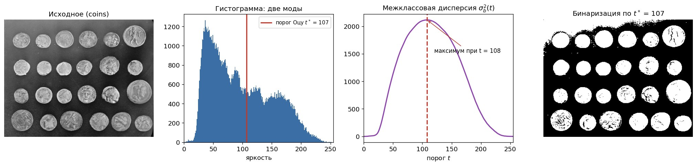
Слева направо: исходный снимок монет на тёмном фоне; его гистограмма с найденным порогом t = 107 (красная вертикаль) — видно два скопления, крупное вокруг яркости 30–60 (фон) и более пологое в районе 120–200 (монеты); кривая межклассовой дисперсии σ²_b(t) с единственным чётким максимумом при t = 108 (значения 107 и 108 различаются из-за краевого эффекта дискретизации гистограммы); результат бинаризации — монеты уверенно отделились от фона, но верхние монеты слились с засветкой в правом верхнем углу, а внутри монет остались чёрные точки от бликов и рельефа. Именно эти дефекты потом чинит морфология. Оцу неявно предполагает, что гистограмма бимодальна: две группы пикселей с разными средними. Что происходит, когда это не так:
- Одна мода (однородная картинка без объекта). Оцу всё равно вернёт какой-то порог — он обязан что-то вернуть. Маска получится случайным разрезом шума. Симптом: максимум $\sigma_b^2$ низкий и пологий. Практическое лекарство — проверять, что $\sigma_b^2(t^*) / \sigma^2$ выше некоторого уровня (это отношение называют separability measure, обычно требуют $> 0.6$).
- Три и более моды (объект, тень, фон). Оцу проведёт одну черту и склеит две ближайшие моды. Решение — многоуровневый Оцу (multi-Otsu): тот же критерий обобщается на $k$ порогов, только оптимизация уже перебором или динамическим программированием.
- Сильно несбалансированные классы. Если объект занимает 2 % кадра, множитель $\omega_0 \omega_1$ давит порог в сторону крупного класса. Симптом — объект систематически недооценивается по площади.
- Неравномерная подсветка. Самый частый случай на практике, и глобальный порог здесь бессилен: то, что на светлой стороне кадра «фон», на тёмной уже темнее, чем «объект».
Пусть картинка имеет всего 5 уровней яркости и такую гистограмму (всего 100 пикселей):
$i$ 0 1 2 3 4 $h(i)$ 30 20 5 15 30 $p(i)$ 0.30 0.20 0.05 0.15 0.30 Она бимодальна: пики на краях, провал в середине. Перебираем все пороги $t$ (класс $C_0 = \{0..t\}$):
$t$ $\omega_0$ $\omega_1$ $\mu_0$ $\mu_1$ $(\mu_0 - \mu_1)^2$ $\sigma_b^2 = \omega_0\omega_1(\mu_0-\mu_1)^2$ 0 0.30 0.70 0.000 2.786 7.760 1.630 1 0.50 0.50 0.400 3.500 9.610 2.403 2 0.55 0.45 0.545 3.667 9.742 2.411 3 0.70 0.30 1.071 4.000 8.577 1.801 Максимум достигается при $t = 2$: $\sigma_b^2 = 2.411$. Порог проходит ровно по провалу гистограммы — там, где пикселей меньше всего, — и это в точности то, чего мы интуитивно ждём от бимодального распределения.
Обратите внимание на два обстоятельства. Первое: значения при $t = 1$ и $t = 2$ почти совпадают (2.403 против 2.411) — вблизи оптимума критерий очень пологий, поэтому небольшой шум в гистограмме легко сдвигает порог на уровень-другой. На реальных 256-уровневых картинках это означает, что порог 107 и порог 112 практически равноценны, и спорить о единичках бессмысленно. Второе: полная дисперсия здесь $\sigma^2 = 2.748$, значит мера разделимости $\sigma_b^2/\sigma^2 = 2.411/2.748 = 0.88$ — заметно выше эмпирического порога 0.6, то есть классы разделяются хорошо и порогу можно доверять.
Адаптивная бинаризация
Когда освещение по кадру меняется, порог считают отдельно для каждого пикселя по его окрестности $W$:
- Mean: $t(x,y) = \mathrm{mean}_W\big(I\big) - C$ — среднее по окну минус смещение;
- Gaussian: то же, но окно взвешено гауссианой (мягче реагирует на края окна);
- Sauvola — версия для текста, учитывающая ещё и локальный разброс:
\[t(x,y) = m(x,y)\left[1 + k\left(\frac{s(x,y)}{R} - 1\right)\right], \qquad k \approx 0.2,\; R = 128\]
где $m$ и $s$ — среднее и стандартное отклонение в окне. Смысл поправки: на однородных участках (малое $s$) порог опускается ниже среднего, и шумовые перепады не превращаются в «текст».
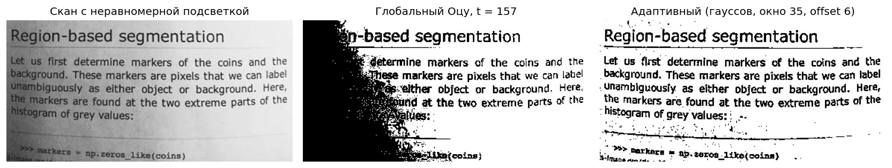
Слева скан страницы, снятый с боковой подсветкой: справа бумага почти белая, слева уходит в тень. В центре глобальный Оцу с порогом 157 — вся левая треть кадра оказалась темнее порога и залилась чёрным вместе с текстом, первые слова каждой строки потеряны. Справа адаптивный гауссов порог с окном 35 пикселей и смещением 6: текст читается по всей ширине, потому что порог в каждой точке считается по её собственной окрестности. Плата — крап на однородных участках, где локального контраста почти нет и алгоритм ловит шум. Размер окна — главный и почти единственный параметр, и ошибиться в нём легко:
- Окно меньше штриха символа — внутри буквы окно целиком «чёрное», локальное среднее падает, и середина буквы отбеливается. Буквы получаются полыми.
- Окно больше масштаба, на котором меняется освещение — метод вырождается в глобальный порог и наследует все его беды.
Практическое правило: окно должно быть в несколько раз больше самого крупного объекта, который вы хотите отделить, но заметно меньше масштаба изменения освещённости. Для сканов текста это обычно 15–51 пиксель (нечётное), для документов с большими буквами — больше.
Порог редко бывает конечной целью. Классический конвейер выделения объектов выглядит так:
- Порог (Оцу или адаптивный) → сырая бинарная маска с шумом, дырами и слипшимися объектами.
- Морфология → открытие убирает одиночные белые точки, закрытие заливает дырки внутри объектов.
- Разметка связных компонент (
skimage.measure.label) → каждой связной группе единиц присваивается свой номер. - Фильтрация по свойствам (
regionprops) → выбрасываем компоненты слишком маленькой площади, неподходящей вытянутости, не той формы.
from skimage import filters, morphology, measure t = filters.threshold_otsu(img) mask = img > t mask = morphology.remove_small_objects(mask, 64) # шаг 2 mask = morphology.closing(mask, morphology.disk(3)) labels = measure.label(mask) # шаг 3 props = [p for p in measure.regionprops(labels) if p.area > 200 and p.eccentricity < 0.9] # шаг 4Именно так до эпохи глубокого обучения считали клетки на микрофотографиях, находили символы на номерных знаках и выделяли дефекты на конвейере. Сегодня этот конвейер живёт как постобработка: карта вероятностей на выходе сегментационной сети бинаризуется порогом, а дальше идут ровно те же морфология и связные компоненты.
- Считать Оцу универсальным. Он оптимален только при бимодальной гистограмме. На картинке с одной модой он всё равно вернёт число, и маска будет мусорной — проверяйте отношение $\sigma_b^2(t^*)/\sigma^2$.
- Применять глобальный порог при неравномерном освещении. Самая частая практическая ошибка. Симптом легко узнать: одна сторона кадра целиком уходит в чёрное или белое.
- Путать межклассовую и внутриклассовую дисперсию. Оцу максимизирует межклассовую $\sigma_b^2$ и тем самым минимизирует внутриклассовую $\sigma_w^2$, потому что их сумма постоянна. Сказать «Оцу максимизирует внутриклассовую дисперсию» — грубая ошибка.
- Брать порог 0.5 для выхода сигмоиды без проверки. Выход сегментационной сети — не калиброванная вероятность. Порог нужно подбирать по метрике (обычно по Dice или IoU) на валидации; часто оптимум лежит в районе 0.3–0.4.
- Забывать про размер окна адаптивного порога. Слишком маленькое окно выедает внутренности объектов, слишком большое эквивалентно глобальному порогу.
Что оптимизирует метод Оцу и почему у критерия именно такой вид?
Он перебирает все возможные пороги и выбирает тот, что максимизирует межклассовую дисперсию $\sigma_b^2(t) = \omega_0 \omega_1 (\mu_0 - \mu_1)^2$. Множитель $(\mu_0-\mu_1)^2$ требует, чтобы средние яркости классов разошлись, а произведение долей $\omega_0 \omega_1$ штрафует вырожденные разбиения, где в одном классе почти нет пикселей.
Почему максимизация межклассовой дисперсии эквивалентна минимизации внутриклассовой?
Полная дисперсия яркостей раскладывается как $\sigma^2 = \sigma_w^2 + \sigma_b^2$ и от порога не зависит. Значит, увеличение одного слагаемого ровно на столько же уменьшает другое. Работать с $\sigma_b^2$ дешевле: нужны только префиксные суммы гистограммы, без вычисления дисперсий внутри классов.
Какое предположение лежит в основе Оцу и что происходит при его нарушении?
Предполагается бимодальность гистограммы — два скопления яркостей с разными средними. Если мода одна, порог получится произвольным разрезом шума; если мод три и более, Оцу склеит ближайшие; при сильном дисбалансе классов порог смещается в сторону крупного класса. Проверить адекватность помогает отношение $\sigma_b^2(t^*)/\sigma^2$.
Когда нужен адаптивный порог и как он устроен?
Когда освещение меняется по кадру и единый порог не существует. Порог считается для каждого пикселя по его окрестности: как локальное среднее минус константа, как гауссово взвешенное среднее или по формуле Sauvola, дополнительно учитывающей локальное стандартное отклонение. Ключевой параметр — размер окна.
Какова вычислительная сложность метода Оцу?
$O(N + L)$, где $N$ — число пикселей, $L$ — число уровней яркости. Один проход строит гистограмму, второй проход по 256 уровням накапливает префиксные суммы и находит максимум. От разрешения изображения зависит только первый проход.
Как порог связан с современным пайплайном сегментации?
Он остался в двух местах: как быстрый способ получить маску на контрастных снимках без обучения и как этап постобработки — выход сегментационной сети бинаризуется порогом, а затем чистится морфологией и разметкой связных компонент с фильтрацией по площади и форме.
-
Морфологические операции
Математическая морфология — набор операций над формой объектов на изображении. Все они строятся из двух элементарных: эрозии и дилатации, которые сравнивают локальную окрестность пикселя с эталонной фигурой — структурным элементом.
Структурный элемент (structuring element, ядро, footprint) $S$ — небольшая бинарная маска с отмеченным центром: диск радиуса 3, квадрат $5 \times 5$, крест, горизонтальная линия. Он задаёт, какую окрестность мы рассматриваем и, тем самым, какой формы детали операция будет вырезать или доращивать.
Для бинарного изображения:
\[(I \ominus S)(x) = \min_{s \in S} I(x + s) \qquad \text{— эрозия}\] \[(I \oplus S)(x) = \max_{s \in S} I(x + s) \qquad \text{— дилатация}\]
Совсем просто: эрозия — это «И» по окну (пиксель останется белым, только если всё окно белое), дилатация — это «ИЛИ» по окну (пиксель станет белым, если хотя бы один сосед в окне белый).
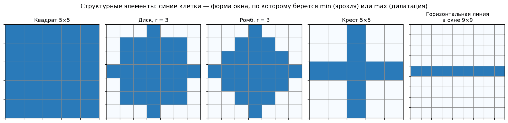
Пять типичных структурных элементов. Синие клетки — форма окна, по которому берётся минимум или максимум. Квадрат 5×5 действует изотропно, но оставляет квадратные следы на скруглениях; диск радиуса 3 сохраняет округлые формы; ромб дешевле диска и даёт похожий результат; крест 5×5 действует только вдоль осей и почти не съедает диагональные детали; горизонтальная линия внутри окна 9×9 работает строго по строке — таким элементом убирают вертикальные штрихи, оставляя горизонтальные линии таблицы нетронутыми. - Эрозия ($\ominus$) — объекты худеют. Белая область теряет слой толщиной примерно с радиус структурного элемента. Мелкие белые пятна размером меньше $S$ исчезают полностью, тонкие перемычки между объектами рвутся.
- Дилатация ($\oplus$) — объекты толстеют. Мелкие чёрные дырки внутри белого закрываются, разорванные линии срастаются, объекты, стоящие ближе размера $S$, склеиваются.
Обе операции не сохраняют площадь: одна её уменьшает, другая увеличивает. Это и есть причина, по которой их почти всегда применяют парами.
Всё становится очевидным на одной строке. Пусть маска — строка из 16 значений (нумерация позиций с нуля), а структурный элемент — отрезок из трёх элементов $\{-1, 0, +1\}$. В строке две длинные группы единиц (позиции 2–5 и 10–14) и одна одиночная единица на позиции 7:
позиция: 0 1 2 3 4 5 6 7 8 9 10 11 12 13 14 15 исходная: 0 0 1 1 1 1 0 1 0 0 1 1 1 1 1 0 эрозия: 0 0 0 1 1 0 0 0 0 0 0 1 1 1 0 0 дилатация: 0 1 1 1 1 1 1 1 1 1 1 1 1 1 1 1 открытие: 0 0 1 1 1 1 0 0 0 0 1 1 1 1 1 0 закрытие: 0 0 1 1 1 1 1 1 1 1 1 1 1 1 1 0Разберём построчно:
- Эрозия оставляет 1 только там, где все три соседа равны 1. Обе группы похудели на пиксель с каждой стороны (2–5 стало 3–4, 10–14 стало 11–13), а одиночная единица на позиции 7 исчезла — под ней не помещается элемент из трёх.
- Дилатация ставит 1 везде, где хотя бы один сосед равен 1. Всё срослось в одну сплошную группу 1–15: одиночная единица дотянулась влево и вправо, и разрывы шириной 1 и 2 затянулись.
- Открытие (эрозия, потом дилатация) вернуло обе длинные группы точно в исходные границы, а одиночную единицу не вернуло: эрозия её уничтожила, и дилатации нечего было восстанавливать. Это ровно «убрать соль, не тронув объекты».
- Закрытие (дилатация, потом эрозия) залило оба разрыва — и одиночный ноль на позиции 6, и двойной на позициях 8–9, — а внешние границы вернулись почти на место (позиция 15 обнулилась из-за края строки). Отсюда важное правило: элемент длины $n$ закрывает разрывы шириной до $n - 1$. Диск радиуса 3 (диаметр 7) заливает дырки шириной до 6 пикселей — если ваши дырки крупнее, увеличивайте элемент.
Ровно эта арифметика, только в двух измерениях и с двумерным элементом, и происходит на картинках выше.
Открытие (opening): $I \circ S = (I \ominus S) \oplus S$ — сначала эрозия, потом дилатация.
Закрытие (closing): $I \bullet S = (I \oplus S) \ominus S$ — сначала дилатация, потом эрозия.
Обе операции идемпотентны: $(I \circ S) \circ S = I \circ S$. Повторное применение ничего не меняет, что удобно — не нужно подбирать число итераций.
Геометрический смысл открытия: объединение всех положений $S$, целиком помещающихся внутрь объекта. То есть открытие оставляет ровно то, «куда пролезает» структурный элемент, и выбрасывает всё остальное. Закрытие — двойственная операция, применённая к фону.
Один и тот же бинарный объект с дыркой, щелью и мусором под структурным элементом $3\times3$. Эрозия срезает границу и убивает мелкие точки, дилатация наращивает и заливает дырки. Открытие (эрозия, затем дилатация) убирает мусор, сохраняя размер объекта; закрытие (дилатация, затем эрозия) заливает дырки и щели, не раздувая объект. Таблица, которую стоит помнить наизусть:
Дефект маски Как выглядит Чем лечится Шум «соль» одиночные белые точки на чёрном фоне открытие Шум «перец» одиночные чёрные дырки внутри объекта закрытие Тонкие перемычки, склеившие два объекта белый «мостик» открытие Разрыв в тонкой линии обрыв белой линии закрытие Зазубренный контур пила по краю объекта открытие, затем закрытие Мнемоника: открытие «открывает» промежутки — оно чистит фон и разделяет объекты; закрытие «закрывает» дырки — оно чистит объект и соединяет части.
Важный побочный эффект: открытие слегка стачивает тонкие выступы объекта (и наоборот, закрытие подъедает узкие вырезы). Если объект содержит детали тоньше структурного элемента, они будут потеряны.
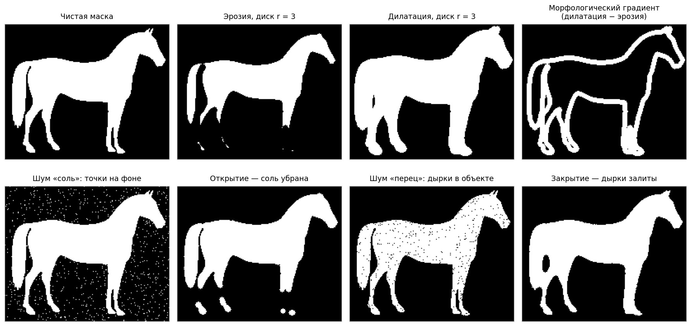
Верхний ряд: чистая маска силуэта; после эрозии диском радиуса 3 фигура похудела (тонкий хвост почти исчез, ноги стали тоньше), доля белого упала с 0.332 до 0.240; после дилатации фигура распухла, доля белого выросла до 0.419; морфологический градиент, то есть разность дилатации и эрозии, дал контур толщиной примерно в 2r = 6 пикселей. Нижний ряд: маска, забрызганная шумом соль на фоне, и результат открытия — весь фоновый крап убран, но заодно отъедены копыта и кончик хвоста; маска с шумом перец внутри объекта и результат закрытия — дырки залиты, силуэт цел, зато небольшой вырез между ног затянулся. В обоих случаях структурный элемент — диск радиуса 3. Производные операции
Морфологический градиент: $g = (I \oplus S) - (I \ominus S)$ — контур объекта толщиной примерно $2r$. Дешёвая альтернатива градиенту по Собелю там, где нужна не величина перепада, а просто граница области.
White top-hat: $I - (I \circ S)$ — «что не пролезло в открытие», то есть светлые детали мельче структурного элемента.
Black top-hat: $(I \bullet S) - I$ — тёмные детали мельче структурного элемента.
Ключевое применение top-hat: выравнивание неравномерного фона. Логика такая: возьмите структурный элемент заметно больше интересующих вас объектов. Тогда открытие «сотрёт» объекты и оставит только медленно меняющийся фон, а разность вернёт объекты уже на плоском фоне. После этого работает даже глобальный порог Оцу.
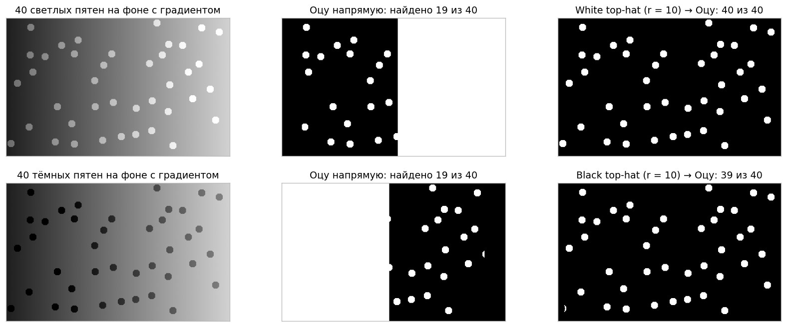
Синтетический тест. Верхний ряд: 40 светлых пятен радиуса 7 на фоне с сильным горизонтальным градиентом яркости от 0.12 слева до 0.82 справа. Глобальный порог Оцу напрямую находит только 19 пятен из 40 — вся правая половина фона ярче порога и сливается в белое поле. После white top-hat диском радиуса 10 фон выровнен, и тот же Оцу находит все 40 из 40. Нижний ряд — то же самое для тёмных пятен и black-hat: 19 из 40 напрямую и 39 из 40 после коррекции. Структурный элемент намеренно взят больше пятен, чтобы открытие стёрло сами объекты и оставило только фон. Скелет (skeleton, medial axis) — сжатие фигуры до линии толщиной в один пиксель, сохраняющей её топологию: число компонент, число дырок, точки ветвления. Интуиция Блюма: подожгите контур фигуры одновременно со всех сторон — скелет это множество точек, где встречаются фронты пламени.
Где применяется: распознавание рукописного текста и подписей (скелет убирает вариацию толщины пера), анализ сосудов и трещин, распознавание жестов по контуру руки, векторизация чертежей.
Главная беда скелета — чувствительность к шуму на контуре: одна лишняя выпуклость размером в пару пикселей порождает целую паразитную ветку. Поэтому перед скелетизацией маску обязательно сглаживают открытием и закрытием, а после — обрезают короткие ветки (pruning).
Формулы через $\min$ и $\max$ определены не только для бинарных, но и для полутоновых изображений — там ничего менять не нужно. Смысл меняется так:
- эрозия заменяет пиксель на минимум в окне — картинка темнеет, светлые детали сжимаются;
- дилатация заменяет на максимум — картинка светлеет, тёмные детали сжимаются;
- медианный фильтр — «средний брат» этих двух: он берёт медиану вместо минимума и максимума. Отсюда и родство с медианной фильтрацией.
Полутоновый top-hat — рабочая лошадка при коррекции виньетирования и неравномерной подсветки, ровно как на иллюстрации выше, только без предварительной бинаризации.
Морфология не умерла вместе с классическим CV — она живёт в постобработке нейросетевых масок. Типичный набор:
from skimage import morphology, measure mask = prob > 0.5 mask = morphology.remove_small_objects(mask, min_size=64) # убрать ложные пятна mask = morphology.remove_small_holes(mask, area_threshold=64) # залить дырки mask = morphology.binary_closing(mask, morphology.disk(2)) # сгладить контур labels = measure.label(mask)Зачем это нужно, если сеть и так хорошая:
- Сеть предсказывает попиксельно и не знает, что объект обязан быть связным. Отсюда одиночные ложные пиксели и дырки посреди объекта.
- Метрики вроде Dice и IoU заметно улучшаются от простого удаления мелких компонент — их площадь мала, но в задачах подсчёта объектов каждая такая компонента считается за ложное срабатывание.
- В медицинских и промышленных задачах на маску наложены априорные ограничения формы (орган связен, деталь выпукла), и морфология — самый дешёвый способ их навязать.
- Путать открытие и закрытие. Открытие = эрозия, потом дилатация; чистит фон от белого крапа и разрывает перемычки. Закрытие = наоборот; чистит объект от чёрных дырок и соединяет разрывы. Перепутать легко, проверяйте себя по мнемонике «открытие открывает промежутки».
- Игнорировать форму структурного элемента. Квадрат оставляет квадратные следы на скруглениях, диск сохраняет округлость, линия работает анизотропно. Если у объекта есть выделенное направление, форму элемента нужно выбирать осознанно.
- Брать слишком большой элемент. Открытие диском радиуса 5 снесёт не только шум, но и любую полезную деталь тоньше 10 пикселей. Радиус подбирается по масштабу шума, а не «на глаз побольше».
- Ожидать, что открытие или закрытие сохранят площадь объекта. Они меняют её, просто меньше, чем одиночная эрозия или дилатация. Если вы измеряете площадь клеток или дефектов, морфология вносит систематическое смещение — его нужно либо учитывать, либо мерить площадь до чистки.
- Скелетизировать зашумлённую маску. Каждая шероховатость контура даст лишнюю ветку. Сначала сглаживание, потом скелет, потом обрезка коротких веток.
Что такое структурный элемент и как эрозия с дилатацией выражаются через него?
Структурный элемент — небольшая маска с отмеченным центром, задающая рассматриваемую окрестность пикселя. Эрозия заменяет пиксель на минимум по этой окрестности (для бинарного случая — логическое И), дилатация на максимум (логическое ИЛИ). Форма элемента определяет, детали какой формы и размера будут срезаны или доращены.
Чем открытие отличается от закрытия и что каждое из них чинит?
Открытие — эрозия с последующей дилатацией: оно убирает мелкие белые объекты на фоне (шум соль) и рвёт тонкие перемычки между объектами. Закрытие — дилатация с последующей эрозией: оно заливает мелкие чёрные дырки внутри объекта (шум перец) и соединяет разрывы линий.
Почему открытие и закрытие идемпотентны?
Открытие геометрически равно объединению всех положений структурного элемента, целиком помещающихся внутрь объекта. Повторное применение операции к такому объединению ничего не добавит и не уберёт, потому что множество допустимых положений элемента уже не изменится. То же рассуждение для закрытия применительно к фону.
Что такое морфологический градиент, top-hat и black-hat, и для чего они нужны?
Градиент — разность дилатации и эрозии, даёт контур объекта толщиной около двух радиусов элемента. White top-hat — разность исходного изображения и его открытия, выделяет светлые детали мельче элемента. Black top-hat — разность закрытия и исходного, выделяет тёмные детали. Оба top-hat применяются для выравнивания неравномерного фона перед бинаризацией.
Как выбрать размер структурного элемента для top-hat, выравнивающего фон?
Элемент должен быть заметно больше самых крупных объектов, которые нужно сохранить, но меньше масштаба, на котором меняется фон. Тогда открытие сотрёт объекты и оставит только фон, а разность вернёт объекты уже на выровненной подложке.
Где морфология применяется в современных нейросетевых пайплайнах?
В постобработке масок сегментации: удаление мелких ложных компонент, заливка дырок внутри объектов, сглаживание контура. Сеть предсказывает попиксельно и не гарантирует связность объекта, а морфология дёшево навязывает априорные ограничения на форму и обычно улучшает Dice и IoU, особенно в задачах подсчёта объектов.
-
Гауссов фильтр
Гауссов фильтр — свёртка изображения с ядром, повторяющим форму нормального распределения:
\[G_\sigma(x,y) = \frac{1}{2\pi\sigma^2}\,e^{-\frac{x^2+y^2}{2\sigma^2}}\]
Результат — размытое изображение: каждый пиксель заменяется взвешенным средним соседей, где вес падает с расстоянием. Параметр $\sigma$ (в пикселях) задаёт масштаб: насколько крупные детали переживут фильтрацию.
Механика самой операции свёртки — размеры ядра, паддинг, шаг — разобрана в вопросе про свёрточный слой. Отличие в том, что здесь ядро задано формулой, а в нейросети — выучивается.
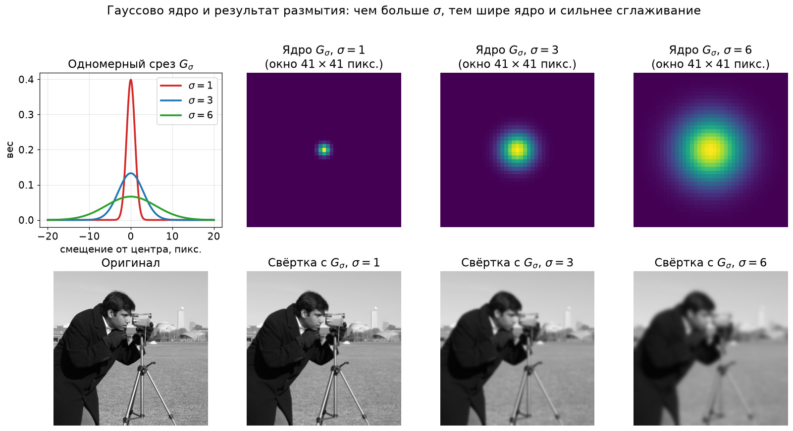
Верхний ряд: слева — одномерный срез ядра для $\sigma=1$ (красная кривая), $\sigma=3$ (синяя) и $\sigma=6$ (зелёная), справа — сами двумерные ядра, нарисованные в одном и том же окне $41\times41$ (палитра viridis: тёмно-фиолетовый — вес около нуля, жёлтый — максимум). Площадь под колоколом всегда равна единице, поэтому чем шире ядро, тем ниже его пик: с $0.4$ при $\sigma=1$ до $0.07$ при $\sigma=6$. Нижний ряд: слева — исходный кадр без обработки, а дальше результат свёртки с этими же ядрами — при $\sigma=1$ пропадает только зернистость травы, при $\sigma=3$ теряются мелкие детали, при $\sigma=6$ размываются уже лицо и штатив. Это и есть подавление высоких частот: чем шире ядро, тем меньше деталей выживает. Сепарабельность: главный трюк
Экспонента суммы равна произведению экспонент, поэтому
\[G_\sigma(x,y) = \frac{1}{2\pi\sigma^2}e^{-\frac{x^2+y^2}{2\sigma^2}} = \underbrace{\frac{1}{\sqrt{2\pi}\sigma}e^{-\frac{x^2}{2\sigma^2}}}_{g_\sigma(x)} \cdot \underbrace{\frac{1}{\sqrt{2\pi}\sigma}e^{-\frac{y^2}{2\sigma^2}}}_{g_\sigma(y)}\]
Ядро сепарабельно: двумерная свёртка распадается на две одномерные — сначала по строкам, потом по столбцам.
\[G_\sigma * I = g_\sigma^{(y)} * \left(g_\sigma^{(x)} * I\right)\]
Вычислительный выигрыш прямой. На ядре $k \times k$ прямая свёртка стоит $k^2$ умножений на пиксель, сепарабельная — $2k$:
\[O(k^2) \;\longrightarrow\; O(2k)\]
Для $k = 15$: $225$ умножений против $30$ — выигрыш в $7.5$ раза. Для $k = 31$: $961$ против $62$, выигрыш в $15.5$ раза. Отношение равно $k/2$ и растёт линейно с размером ядра, так что чем сильнее размытие, тем важнее сепарабельность.
Это не аппроксимация, а точное тождество: результат обеих схем совпадает до ошибок округления. Именно поэтому
cv2.GaussianBlurиscipy.ndimage.gaussian_filterвнутри всегда делают два одномерных прохода.Одно и то же окно проходит по зашумлённой картинке. Гаусс считает взвешенное среднее: каждый выброс размазывается в пятно, а края плывут. Медиана берёт средний по величине элемент окна: одиночные выбросы просто не попадают в ответ, а ступенька на профиле строки остаётся резкой. Гауссиана бесконечна, а ядро конечно, поэтому его приходится обрезать. Стандартное правило — обрезать на трёх сигмах, где остаётся меньше $0.3\,\%$ массы:
\[k \approx 2\lceil 3\sigma \rceil + 1\]
Размер делают нечётным, чтобы у ядра был чётко определённый центральный пиксель — иначе фильтр сдвинет изображение на полпикселя.
$\sigma$ $\lceil 3\sigma \rceil$ Рекомендуемое $k$ $0.8$ $3$ $7 \times 7$ $1.0$ $3$ $7 \times 7$ $2.0$ $6$ $13 \times 13$ $3.0$ $9$ $19 \times 19$ $5.0$ $15$ $31 \times 31$ Нормировка. После дискретизации сумма весов уже не равна в точности единице, поэтому ядро нормируют: делят все элементы на их сумму. Если этого не сделать, изображение потемнеет или посветлеет — фильтр перестанет сохранять среднюю яркость. По той же причине в целочисленных реализациях популярны ядра вроде
\[\frac{1}{16}\begin{bmatrix}1&2&1\\2&4&2\\1&2&1\end{bmatrix}\]
где сумма элементов ровно $16$ и деление сводится к сдвигу на четыре бита.
Частотный взгляд
У гауссианы есть замечательное свойство: её преобразование Фурье — снова гауссиана, причём с обратной шириной. Если в пространстве ширина равна $\sigma$, то в частотной области она равна $1/\sigma$:
\[\mathcal{F}\big[G_\sigma\big](u) \propto e^{-2\pi^2\sigma^2 u^2}\]
По теореме о свёртке свёртка в пространстве равна умножению в спектре, поэтому гауссово размытие — это умножение спектра на плавно спадающий колокол. Высокие частоты (мелкие детали, шум, текстура) давятся, низкие (общая освещённость, крупные формы) проходят. Это низкочастотный фильтр, и притом самый «мягкий» из возможных.
Почему «самый мягкий» — важно. Гауссиана уникальна тем, что она одновременно компактна в пространстве и компактна в частоте: произведение её ширин $\sigma_x \cdot \sigma_u$ минимально из всех возможных функций (это и есть принцип неопределённости). Практическое следствие: у гауссова размытия нет звона. Сравните с усредняющим фильтром (box filter), чей спектр — функция $\mathrm{sinc}$ с осциллирующими боковыми лепестками: после него на резких границах появляются паразитные светлые и тёмные полосы. У гауссианы боковых лепестков нет вовсе.
Второе полезное свойство — композиция: свёртка двух гауссиан снова гауссиана, причём дисперсии складываются:
\[G_{\sigma_1} * G_{\sigma_2} = G_{\sqrt{\sigma_1^2 + \sigma_2^2}}\]
Отсюда, например: размыть дважды с $\sigma = 3$ — то же самое, что один раз с $\sigma = \sqrt{18} \approx 4.24$. На этом свойстве построено масштабное пространство в SIFT: чтобы перейти к следующему уровню, не надо сворачивать оригинал заново, достаточно дополнительно размыть предыдущий уровень.
Что делать с краями
У краевых пикселей часть окна выходит за пределы изображения. Вариантов дополнения несколько, и выбор заметно влияет на результат у рамки шириной в половину ядра.
Режим Что делает Когда брать constant(нулями)Дополняет нулями Почти никогда для размытия: края темнеют replicate/edgeПовторяет крайний пиксель Разумный дефолт, края не темнеют reflectЗеркалит соседние строки и столбцы Дефолт в OpenCV ( BORDER_REFLECT_101), самый гладкийwrapЗаворачивает по кругу Только для панорам и текстур, замкнутых по кругу validНе дополняет, выход меньше входа Когда важна корректность каждого пикселя, а рамкой можно пожертвовать Типичная ошибка — оставить
constantс нулями: у изображения появляется тёмная кайма шириной около $3\sigma$, и все дальнейшие шаги (детекция границ, пороги, статистики) на этой кайме ведут себя неправильно.Два применения гауссианы, о которых спрашивают
Звучит парадоксально, но самый распространённый способ повысить резкость построен на размытии.
\[I_{\text{sharp}} = I + \alpha\,(I - G_\sigma * I)\]
Разность $I - G_\sigma * I$ называется маской нерезкости. Что она собой представляет: $G_\sigma * I$ — это низкие частоты, значит $I - G_\sigma * I$ — всё, что осталось, то есть высокие частоты: границы, мелкая текстура, шум. Прибавляя их с коэффициентом $\alpha$, мы усиливаем именно детали.
Параметры: $\sigma$ задаёт, детали какого размера усиливать (малая $\sigma$ — тонкая текстура, большая — крупные контуры, «local contrast»), $\alpha$ — насколько сильно. Типично $\sigma \in [0.5, 2]$, $\alpha \in [0.5, 1.5]$.
Плата: вместе с деталями усиливается шум, а на резких границах появляются ореолы — светлая полоса с яркой стороны и тёмная с тёмной. Именно по этим ореолам на глаз опознают перешарпленное фото.
Второй приём — вычесть одну гауссиану из другой:
\[\text{DoG} = G_{\sigma_1} * I - G_{\sigma_2} * I, \qquad \sigma_1 < \sigma_2\]
Первое слагаемое пропускает частоты ниже $\sim 1/\sigma_1$, второе — ниже $\sim 1/\sigma_2$. Их разность пропускает полосу между ними: это полосовой фильтр, настроенный на детали конкретного масштаба.
Кроме того, DoG — хорошее приближение лапласиана гауссианы (LoG) при отношении $\sigma_2/\sigma_1 \approx 1.6$. Классическое соотношение записывается для разности «широкая минус узкая»:
\[G_{\sigma_2} - G_{\sigma_1} \approx (\sigma_2 - \sigma_1)\,\sigma_1\,\nabla^2 G_{\sigma_1}\]
а у нас $\text{DoG} = G_{\sigma_1} - G_{\sigma_2}$, то есть с противоположным знаком:
\[\text{DoG} \approx (\sigma_1 - \sigma_2)\,\sigma_1\,\nabla^2 G_{\sigma_1}\]
Знак здесь не косметика: у лапласиана гауссианы в центре отрицательный провал, а у нашей DoG (узкая минус широкая) — положительный пик, что и видно на картинке ниже.
Это принципиально, потому что LoG требует явного дифференцирования, а DoG — только двух размытий, которые сепарабельны и дёшевы. На пирамиде DoG построена детекция ключевых точек в SIFT: экстремумы DoG по пространству и по масштабу и есть кандидаты в ключевые точки.
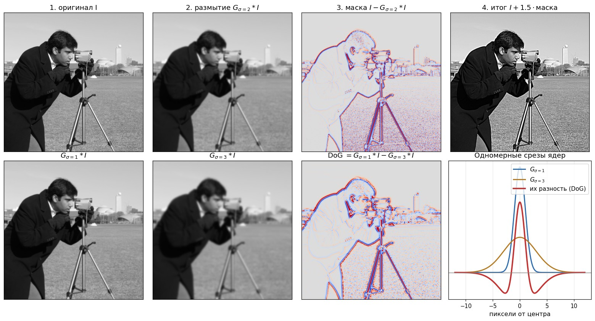
Верхний ряд — конвейер повышения резкости на четыре шага: исходный кадр, его размытие гауссианой $\sigma=2$, маска $I - G_{\sigma=2}*I$ в сине-красной палитре (белый — ноль, синий и красный — отклонения разных знаков; видно, что ненулевой она остаётся только на границах и на траве), и итог $I + 1.5\cdot$маска — обратите внимание на более чёткую кромку пальто и проступившую фактуру травы. Нижний ряд — разность гауссиан: результаты размытия с $\sigma=1$ и $\sigma=3$, их разность в той же сине-красной палитре и одномерные срезы всех трёх ядер справа. На графике синяя кривая — узкая гауссиана $\sigma=1$, жёлтая — широкая $\sigma=3$, красная — их разность: она имеет положительный пик в центре и отрицательные боковые провалы, то есть подавляет и постоянную составляющую, и самые высокие частоты, пропуская лишь полосу между ними. - Взять ядро $3 \times 3$ при $\sigma = 5$. Это самая частая ошибка. Ядро обрезано далеко внутри колокола, в окно попадает лишь малая доля массы гауссианы, и после нормировки веса получаются почти одинаковыми — фильтр вырождается в усредняющий и приобретает все его недостатки, включая звон. Держите $k \approx 2\lceil 3\sigma \rceil + 1$. В OpenCV можно передать
ksize=(0,0), и размер посчитается по $\sigma$ автоматически. - Задавать только $k$ и не задавать $\sigma$ (или наоборот). В
cv2.GaussianBlurприsigmaX=0сигма выводится из размера ядра, а приksize=(0,0)наоборот. Указывать обе величины несогласованно — верный способ получить не тот масштаб, который вы имели в виду. Думайте в терминах $\sigma$: физический смысл несёт именно она. - «Гаусс уберёт соль-перец». Не уберёт. Импульсный шум — это выбросы, а гаусс усредняет, и выброс не исчезает, а размазывается в серое пятно; заодно теряется резкость всего кадра. Против импульсного шума нужен медианный фильтр, гаусс хорош против гауссова (аддитивного) шума.
- Свёртка прямо по
uint8. Промежуточные суммы переполняются, а округление на каждом из двух проходов сепарабельной свёртки накапливает ошибку. Переводите воfloat32, а обратно — с клиппингом. - Забывать, что размытие смещает границы. Чем больше $\sigma$, тем сильнее сглаживание скругляет углы и сдвигает контур наружу от вершины. Если вы измеряете размеры детали по границам, сильное предварительное размытие внесёт систематическую ошибку.
- Оставлять паддинг нулями. Тёмная кайма шириной около $3\sigma$ по периметру, на которой ломается всё, что считается дальше. Берите
reflectилиreplicate.
Гауссово ядро задают формулой; свёрточная сеть выучивает свои ядра сама — но гаусс никуда не делся, он просто сменил роль:
- Задачи компьютерного зрения — там размытие живёт как аугментация:
GaussianBlurв пайплайне обучения заставляет модель не полагаться на мелкую текстуру и повышает устойчивость к дефокусу и к пересжатию. - AlexNet и ViT — фильтры первого слоя обученной сети включают и низкочастотные, похожие на гауссовы, ядра: сеть приходит к сглаживанию сама, потому что оно полезно.
- Downsampling. Перед уменьшением картинки её обязательно размывают гауссианой — иначе высокие частоты складываются в ложные низкие (алиасинг, муар). Это правило одинаково верно и для классического ресайза, и для strided-свёрток в сетях.
Что делает гауссов фильтр и что задаёт параметр σ?
Заменяет каждый пиксель взвешенным средним соседей с весами по формуле нормального распределения; на выходе — размытое изображение. Параметр $\sigma$ задаёт масштаб: он определяет, детали какого размера будут подавлены. В частотной области это низкочастотный фильтр — умножение спектра на плавно спадающий колокол шириной $1/\sigma$.
Что такое сепарабельность и какой выигрыш она даёт?
Двумерная гауссиана раскладывается в произведение двух одномерных, поэтому свёртку с ядром $k \times k$ можно заменить двумя одномерными проходами: сначала по строкам, потом по столбцам. Стоимость падает с $O(k^2)$ до $O(2k)$ на пиксель. При $k=15$ это $225$ умножений против $30$, то есть в $7.5$ раза; выигрыш равен $k/2$ и растёт с размером ядра. Это точное тождество, а не приближение.
Как выбрать размер ядра по σ и зачем нормировать веса?
Гауссиану обрезают на трёх сигмах, где остаётся меньше $0.3\,\%$ массы: $k \approx 2\lceil 3\sigma\rceil + 1$, обязательно нечётное, чтобы у ядра был центральный пиксель. После дискретизации сумма весов не равна единице точно, поэтому ядро делят на сумму элементов — иначе фильтр меняет среднюю яркость изображения. Ядро $3\times3$ при $\sigma=5$ — классическая ошибка: оно вырождается в усредняющее.
Почему у гауссова размытия нет звона, а у усредняющего есть?
Преобразование Фурье гауссианы — снова гауссиана, монотонно спадающая, без боковых лепестков. У прямоугольного (усредняющего) ядра спектр — функция $\mathrm{sinc}$ с осциллирующими лепестками, и эти осцилляции проявляются как светлые и тёмные полосы у резких границ. Гауссиана к тому же минимизирует произведение ширин в пространстве и в частоте, то есть она одновременно максимально компактна и там, и там.
Что такое unsharp masking и почему резкость повышают размытием?
$I_{\text{sharp}} = I + \alpha (I - G_\sigma * I)$. Размытие даёт низкие частоты, значит разность исходного и размытого — это высокие частоты: границы и мелкая текстура. Прибавляя их с коэффициентом, мы усиливаем именно детали. Побочные эффекты — усиление шума и ореолы у резких границ: светлая полоса со светлой стороны и тёмная с тёмной.
Что такое DoG и зачем он нужен?
Разность двух гауссовых размытий с разными $\sigma$. Каждое из них — низкочастотный фильтр, их разность пропускает полосу частот между ними, то есть это полосовой фильтр, настроенный на детали конкретного масштаба. При отношении $\sigma_2/\sigma_1 \approx 1.6$ DoG хорошо приближает лапласиан гауссианы, но считается только двумя сепарабельными размытиями без явного дифференцирования. На пирамиде DoG построена детекция ключевых точек в SIFT.
- Взять ядро $3 \times 3$ при $\sigma = 5$. Это самая частая ошибка. Ядро обрезано далеко внутри колокола, в окно попадает лишь малая доля массы гауссианы, и после нормировки веса получаются почти одинаковыми — фильтр вырождается в усредняющий и приобретает все его недостатки, включая звон. Держите $k \approx 2\lceil 3\sigma \rceil + 1$. В OpenCV можно передать
-
Медианный фильтр
Медианный фильтр заменяет значение пикселя на медиану значений в окне вокруг него:
\[I'(x, y) = \operatorname{median}\big\{\, I(x+i,\ y+j)\ :\ (i, j) \in W \,\big\}\]
Окно $W$ обычно квадратное нечётного размера — $3\times3$, $5\times5$, $7\times7$ — чтобы у него был центральный пиксель и чтобы число элементов было нечётным (тогда медиана — конкретный элемент выборки, а не полусумма двух).
Главное отличие от гауссова фильтра: медиана — порядковая статистика, а не линейная комбинация. Она не считает среднее, а сортирует значения и берёт то, что стоит посередине. Отсюда все её свойства.
Импульсный шум («соль и перец») — это когда часть пикселей независимо от содержимого сцены становится равной $0$ или $255$. Такое бывает при битых пикселях сенсора, ошибках передачи, повреждении файла.
Возьмём окно $3\times3$ на однородном сером участке, где один пиксель испорчен:
\[\begin{bmatrix} 121 & 118 & 125 \\ 119 & \mathbf{255} & 122 \\ 124 & 120 & 117 \end{bmatrix}\]
Среднее: $(121+118+125+119+255+122+124+120+117)/9 = 1221/9 = 135.7$. Выброс в $255$ утащил результат на $14$ уровней вверх — испорченный пиксель стал светлым пятном, только теперь размазанным на всё окно.
Медиана: сортируем — $117, 118, 119, 120, \mathbf{121}, 122, 124, 125, 255$. Пятый по порядку элемент равен $121$. Выброс просто оказался последним в списке и на середину не повлиял вообще никак.
Формальное объяснение: медиана имеет точку слома (breakdown point) $50\,\%$ — она даёт верный ответ, пока испорчено меньше половины выборки. У среднего точка слома равна нулю: одного достаточно произвольно большого выброса хватает, чтобы увести результат куда угодно.
Второе важное свойство — сохранение резких границ. На границе тёмной и светлой области окно содержит, скажем, пять тёмных пикселей и четыре светлых. Медиана — тёмная, и граница остаётся ступенькой. Среднее дало бы промежуточное значение, то есть размыло бы её. Поэтому медиана убирает шум, не превращая контуры в градиенты.
Слева вход с шумом «соль и перец», в центре гауссово размытие, справа медианный фильтр $5\times5$. Внизу профиль одной строки: у гаусса ступенька размылась и остались горбы от выбросов, у медианы ступенька резкая, выбросов нет. 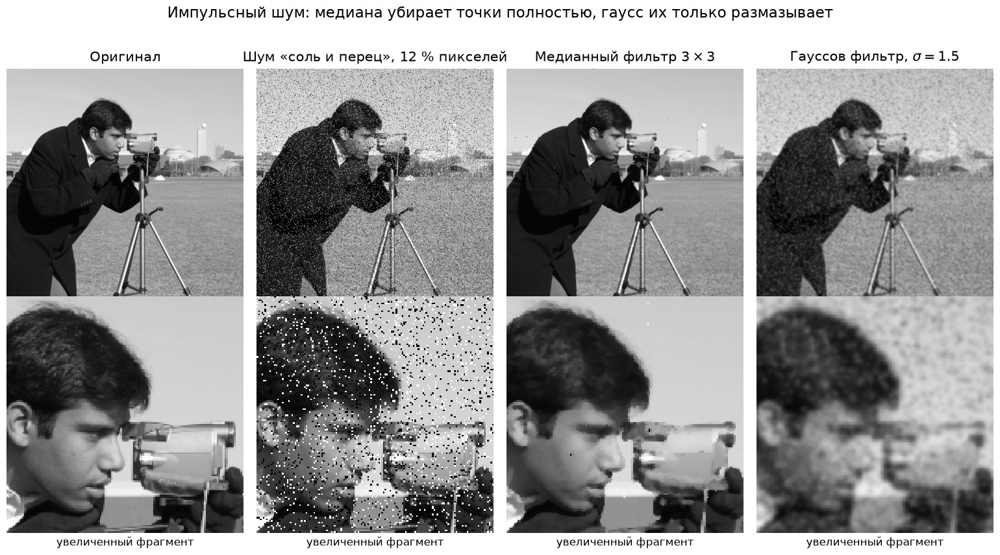
Слева направо: оригинал; тот же кадр с импульсным шумом (12 % пикселей принудительно сделаны чёрными или белыми); результат медианного фильтра $3\times3$; результат гауссова фильтра с $\sigma=1.5$. Нижний ряд — увеличенный фрагмент с головой оператора, там разница особенно заметна. Медиана убирает выбросы почти без следа и сохраняет резкость границ, а гаусс усредняет шумовые пиксели с соседями: точки не исчезают, а превращаются в серые пятна, и вдобавок размывается всё изображение. Причина проста: медиана — порядковая статистика и просто игнорирует экстремальные значения, а среднее ими смещается. Нелинейность и её последствия
У линейных фильтров есть удобное свойство: $F(a I_1 + b I_2) = a F(I_1) + b F(I_2)$. У медианы его нет:
\[\operatorname{median}(A + B) \ne \operatorname{median}(A) + \operatorname{median}(B)\]
Отсюда три практических следствия.
- Нет сепарабельности. Гауссиану можно разложить в два одномерных прохода и сэкономить. С медианой этот трюк не работает: медиана по строкам, а потом по столбцам — это другая операция (её называют separable median и иногда применяют как быстрое приближение, но результат отличается от честной двумерной медианы).
- Нет частотной характеристики. Про медиану нельзя сказать «она пропускает частоты ниже такой-то»: теорема о свёртке к ней неприменима, потому что она не свёртка. Анализ ведут в других терминах — через сохранение монотонных участков и подавление структур короче половины окна.
- Нет ускорения через FFT. Быстрая свёртка через преобразование Фурье для медианы недоступна. Ускоряют её принципиально иначе — гистограммой.
Зато у медианы есть своё полезное свойство — идемпотентные корневые сигналы: существуют изображения, которые медиана не меняет вообще (они называются root signals), и повторное применение фильтра к результату довольно быстро сходится к такому неподвижному состоянию.
Как считать быстро
Наивная реализация на окне $k \times k$ сортирует $k^2$ значений для каждого пикселя: $O(k^2 \log k)$ на пиксель. Для $k = 15$ это $225$ элементов на каждый пиксель — неприемлемо.
Наблюдение, на котором стоит алгоритм Хуанга (Huang, 1979): когда окно сдвигается на один пиксель вправо, из него выходит один столбец ($k$ значений) и входит один новый столбец ($k$ значений). Остальные $k^2 - k$ значений те же самые. Значит, пересчитывать всё заново не нужно.
Алгоритм хранит гистограмму значений в окне — массив из $256$ счётчиков для
uint8— и указатель на текущую медиану плюс число элементов слева от неё.- Сдвиг окна: уменьшить $k$ счётчиков (ушедший столбец), увеличить $k$ счётчиков (пришедший). Это $2k$ операций.
- Обновить медиану: сдвинуть указатель по гистограмме, пока накопленная сумма слева не достигнет $\lceil k^2/2 \rceil$. Указатель ходит по массиву фиксированного размера $256$, и в среднем сдвигается на единицы позиций.
Итог: $O(k)$ на пиксель вместо $O(k^2\log k)$, а по размеру окна — константа в том смысле, что стоимость перестала зависеть от $k$ квадратично. Существуют и более поздние алгоритмы (Perreault & Hébert, 2007) с честной $O(1)$ на пиксель независимо от $k$ — они держат гистограмму на каждый столбец и переиспользуют их между строками.
Ограничение всех гистограммных схем: они работают на дискретной шкале ограниченного размера. Для
uint8гистограмма из $256$ бинов идеальна, дляuint16— уже $65536$ бинов, а дляfloat32подход неприменим вовсе.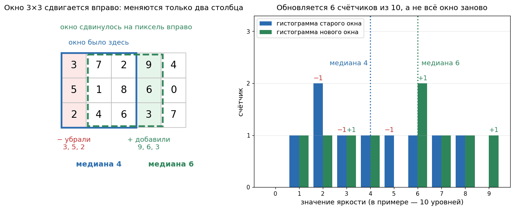
Слева — фрагмент изображения $3\times5$ со значениями яркости от $0$ до $9$ (десять уровней взяты для наглядности вместо $256$). Сплошной синей рамкой отмечено окно $3\times3$ в исходном положении, пунктирной зелёной — то же окно после сдвига на один пиксель вправо. Красным подсвечен уходящий левый столбец со значениями $3, 5, 2$, зелёным — приходящий правый столбец $9, 6, 3$. Медиана окна при этом меняется с $4$ на $6$. Справа — гистограммы обоих окон: синие столбики для старого положения, зелёные для нового, с пометками $-1$ у трёх ушедших значений и $+1$ у трёх пришедших. Из десяти счётчиков изменились только шесть — остальные шесть элементов окна остались на месте, и пересчитывать их не нужно. Пунктирные вертикали отмечают положение медианы до и после сдвига. Медиана среди других сглаживающих фильтров
Медиана — самый простой представитель семейства фильтров, сохраняющих границы (edge-preserving). Стоит знать соседей.
Билатеральный фильтр взвешивает соседей по двум признакам сразу — по расстоянию и по разнице яркостей:
\[I'(p) = \frac{1}{W_p}\sum_{q \in \Omega} I(q)\;\underbrace{G_{\sigma_s}(\|p - q\|)}_{\text{близко в пространстве}}\;\underbrace{G_{\sigma_r}(|I(p) - I(q)|)}_{\text{похоже по яркости}}\]
Идея: усредняем только с теми соседями, которые и рядом, и похожи по яркости. Пиксели с другой стороны границы получают почти нулевой вес, поэтому граница не размывается. В отличие от медианы, билатеральный фильтр даёт плавное сглаживание внутри однородных областей — картинка не приобретает характерной «пластилиновости». Плата: два параметра вместо одного и заметно выше стоимость.
Non-Local Means (NLM) идёт дальше: похожесть оценивается не по одному пикселю, а по целому патчу вокруг него, и искать похожие патчи можно по всему изображению, а не только по соседству. Это лучший из классических денойзеров: он использует самоподобие изображения — повторяющуюся текстуру, параллельные линии, регулярный узор. Плата — вычислительная стоимость на порядки выше.
Фильтр Против какого шума Границы Стоимость Гаусс аддитивный гауссов размывает очень низкая, сепарабелен Медиана импульсный (соль-перец) сохраняет низкая (гистограмма) Билатеральный аддитивный сохраняет средняя NLM аддитивный сохраняет высокая Обучаемые (DnCNN и далее) любой из обучающей выборки сохраняет требует GPU 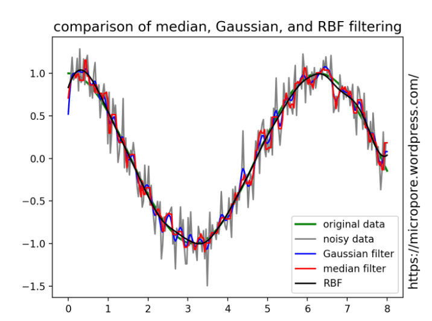
Одномерная иллюстрация на синусоиде: зелёная кривая — исходный сигнал, серая — он же с сильным шумом, синяя — результат гауссова фильтра, красная — медианного, чёрная — сглаживание радиально-базисными функциями. Медиана (красная) держится ближе к исходной кривой на резких участках, но её результат заметно более ступенчатый и угловатый, чем гладкая синяя кривая гаусса. Это ровно тот компромисс, о котором идёт речь выше: медиана сохраняет перепады ценой того, что внутри однородных участков сглаживание получается кусочно-постоянным, а не плавным. - Чётный размер окна. При окне $4\times4$ элементов в выборке $16$, и медиана — полусумма восьмого и девятого. Во-первых, это уже не порядковая статистика в чистом виде и часть устойчивости теряется. Во-вторых, у чётного окна нет центрального пикселя, и результат смещается на полпикселя. Берите только нечётные размеры.
- Применять медиану против гауссова шума. Против аддитивного шума медиана работает хуже гаусса: для нормального распределения дисперсия выборочной медианы примерно в $\pi/2 \approx 1.57$ раза больше дисперсии выборочного среднего. То есть при том же окне медиана подавляет гауссов шум примерно на $25\,\%$ слабее. Правило: импульсный шум — медиана, гауссов — гаусс или что-то поумнее.
- Ставить большое окно. Медиана — фильтр порядковой статистики, и она удаляет любую структуру, занимающую меньше половины окна. При $7\times7$ это значит, что линии тоньше трёх-четырёх пикселей исчезнут целиком: тонкие царапины, провода на фоне неба, штрихи текста, засечки шрифта. Заодно скругляются углы: острый угол объекта после медианы становится скошенным. Начинайте с $3\times3$ и увеличивайте только по необходимости.
- Ожидать линейности. Медиану нельзя разложить в два одномерных прохода, у неё нет частотной характеристики и её нельзя ускорить через FFT. Все привычные приёмы работы со свёртками к ней неприменимы.
- Забыть про цветные изображения. Поканальная медиана на RGB может дать цвет, которого в окне вообще не было: медиана по R взята у одного пикселя, по G у другого, по B у третьего. Для цвета корректнее использовать векторную медиану (пиксель окна с минимальной суммой расстояний до остальных) или применять медиану только к каналу яркости.
Медиана — фиксированное правило, придуманное человеком; современные денойзеры это правило выучивают:
- Задачи компьютерного зрения — денойзинг стал регрессионной задачей «изображение в изображение»: сеть учится на парах (шумный, чистый) и подстраивается под реальную статистику шума конкретной камеры, а не под идеализированную модель «соль и перец».
- Аугментация. В обратную сторону: шум и медианное сглаживание сами применяются как аугментации при обучении, чтобы модель не переучивалась на мелкую текстуру конкретного сенсора.
- Порог целесообразности. При этом медиана $3\times3$ стоит доли миллисекунды, не требует ни обучающих данных, ни GPU и не может «нафантазировать» деталь, которой не было. На битых пикселях сенсора и на препроцессинге сканов она до сих пор оптимальный выбор.
Что делает медианный фильтр и чем он отличается от гауссова?
Заменяет пиксель на медиану значений в окне: сортирует $k^2$ чисел и берёт то, что стоит посередине. В отличие от гаусса, это не свёртка и не линейная операция, а порядковая статистика. Отсюда два ключевых отличия: медиана игнорирует выбросы и сохраняет резкость границ, тогда как гаусс усредняет и то, и другое.
Почему медиана справляется с импульсным шумом, а среднее нет?
У медианы точка слома $50\,\%$: она даёт верный ответ, пока испорчено меньше половины окна. У среднего точка слома нулевая — одного достаточно большого выброса хватает, чтобы сместить результат. На окне $3\times3$ с одним пикселем $255$ среди значений около $120$ медиана даёт $121$, а среднее $135.7$: выброс не исчез, а размазался по всему окну.
Как сделать медианный фильтр быстрым?
Алгоритм Хуанга: держать гистограмму значений в окне и указатель на медиану. При сдвиге окна на пиксель уходит один столбец и приходит один — надо обновить всего $2k$ счётчиков и подвинуть указатель на несколько позиций, вместо того чтобы сортировать $k^2$ значений заново. Это даёт $O(k)$ на пиксель вместо $O(k^2\log k)$; более поздние алгоритмы дают честную $O(1)$ независимо от $k$. Ограничение — нужна дискретная шкала небольшого размера, для
float32подход неприменим.Почему медиана не сепарабельна?
Сепарабельность — свойство линейных операций: свёртка с произведением одномерных ядер распадается на два прохода. Медиана нелинейна, $\operatorname{median}(A+B) \ne \operatorname{median}(A) + \operatorname{median}(B)$, поэтому медиана по строкам с последующей медианой по столбцам даёт другой результат, чем честная двумерная медиана. По той же причине у медианы нет частотной характеристики и её нельзя ускорить через FFT.
Чем платят за большое окно медианы?
Медиана уничтожает любую структуру, занимающую меньше половины окна. При $7\times7$ пропадают линии тоньше трёх-четырёх пикселей — провода, царапины, тонкие штрихи текста, — а острые углы объектов скругляются. Поэтому окно берут минимально достаточное, начиная с $3\times3$.
Чем медиана отличается от билатерального фильтра и NLM?
Все трое сохраняют границы, но по-разному. Медиана — порядковая статистика, дёшева, идеальна против импульсного шума, но даёт кусочно-постоянный, «пластилиновый» результат. Билатеральный фильтр взвешивает соседей одновременно по расстоянию и по разнице яркостей, поэтому сглаживает плавно, не переходя через границу. NLM ищет похожие патчи по всему изображению и использует самоподобие сцены — качество лучше всех классических методов ценой на порядки большей стоимости.
-
Фильтр Собеля
Фильтр Собеля вычисляет приближение градиента яркости — вектора, показывающего, в какую сторону яркость растёт быстрее всего и насколько быстро.
\[\mathbf{G}_{x}=\begin{bmatrix}-1&0&+1\\-2&0&+2\\-1&0&+1\end{bmatrix} \ast \mathbf{A}, \qquad \mathbf{G}_{y}=\begin{bmatrix}+1&+2&+1\\0&0&0\\-1&-2&-1\end{bmatrix} \ast \mathbf{A}\]
Из двух компонент собирают модуль и направление:
\[|\mathbf{G}| = \sqrt{\mathbf{G}_x^2 + \mathbf{G}_y^2}, \qquad \mathbf{\Theta} = \operatorname{atan2}(\mathbf{G}_y,\ \mathbf{G}_x)\]
Ядра записаны в математической системе координат, где ось $y$ направлена вверх: положительный $\mathbf{G}_y$ означает, что яркость растёт вверх. В библиотеках, работающих в индексах массива (ось строк направлена вниз), знак $\mathbf{G}_y$ обычно противоположный — это соглашение надо проверять, а не угадывать.
Откуда берутся числа в ядре
Производная по определению — предел разностного отношения. На дискретной сетке с шагом в один пиксель её приближают центральной разностью:
\[\frac{\partial I}{\partial x}(x) \approx \frac{I(x+1) - I(x-1)}{2}\]
Именно это и есть ядро $[-1,\ 0,\ +1]$ (масштабный множитель $1/2$ обычно опускают). Центральная разность берётся не случайно: она симметрична, а значит имеет второй порядок точности, тогда как односторонняя разность $I(x+1) - I(x)$ — только первый. И заодно она не сдвигает результат на полпикселя.
Теперь второй сомножитель. Дифференцирование усиливает высокие частоты, а шум — это как раз высокие частоты, поэтому чистая разность на реальном снимке даёт неприемлемо шумную карту. Значит, дифференцировать надо вдоль оси, а поперёк неё — сглаживать. Простейшее сглаживающее ядро с весами по биномиальным коэффициентам — $[1,\ 2,\ 1]$: это приближение гауссианы с $\sigma \approx 0.85$.
Собель — просто произведение этих двух одномерных ядер:
\[\begin{bmatrix}1\\2\\1\end{bmatrix} \cdot \begin{bmatrix}-1&0&+1\end{bmatrix} = \begin{bmatrix}-1&0&+1\\-2&0&+2\\-1&0&+1\end{bmatrix} = \mathbf{G}_x\text{-ядро}\]
То есть ядро Собеля сепарабельно, и его можно применять двумя одномерными проходами вместо одного двумерного. На ядре $3\times3$ это $6$ умножений вместо $9$; для больших вариантов Собеля ($5\times5$, $7\times7$) выигрыш заметнее.
Ядро $G_x$ реагирует на вертикальные края (яркость меняется вдоль $x$), $G_y$ — на горизонтальные. Серый на картах — ноль, светлое и тёмное — знак производной. Модуль градиента $\sqrt{G_x^2+G_y^2}$ собирает края всех направлений, а $\mathrm{atan2}$ даёт их ориентацию. Сумма положительных весов в ядре равна $4$, отрицательных — $-4$. Если подставить идеальную линейную рампу с наклоном $1$ (яркость растёт на единицу на пиксель), сырой отклик составит $8$, а не $1$. Поэтому, чтобы $\mathbf{G}_x$ действительно означала «изменение яркости на пиксель», результат делят на $8$:
\[\mathbf{G}_x^{\text{норм}} = \tfrac{1}{8}\,\mathbf{G}_x^{\text{сырой}}\]
Для детекции границ это неважно — там всё равно ставится порог, и константа съедается им. Важно там, где градиент имеет физический смысл: при оценке ориентации структур, при вычислении дифференциальных характеристик, при сравнении карт градиента с разных источников.
Обратите внимание на разнобой между библиотеками:
cv2.Sobelне нормирует вовсе, аskimage.filters.sobel_vиsobel_hиспользуют то же самое ядро, но делённое на $4$, — то есть их отклик вдвое больше физически корректного. Проверить это можно за минуту: на линейной рампе с наклоном $10$ уровней на пиксельcv2.Sobelдаёт $80$,skimageдаёт $20$, а нормированное значение равно $10$.Расчёт на конкретном участке
Возьмём окно $3\times3$, в котором яркость растёт слева направо и слегка растёт сверху вниз:
\[\mathbf{A} = \begin{bmatrix}10 & 40 & 90\\ 20 & 60 & 120\\ 30 & 70 & 130\end{bmatrix}\]
Горизонтальная компонента. Перемножаем поэлементно с ядром $\mathbf{G}_x$ и складываем:
\[\mathbf{G}_x = (-1)\cdot 10 + 1\cdot 90 \;+\; (-2)\cdot 20 + 2\cdot 120 \;+\; (-1)\cdot 30 + 1\cdot 130 = 80 + 200 + 100 = 380\]
Вертикальная компонента — верхняя строка минус нижняя с весами $1, 2, 1$:
\[\mathbf{G}_y = (10 + 2\cdot 40 + 90) - (30 + 2\cdot 70 + 130) = 180 - 300 = -120\]
Модуль:
\[|\mathbf{G}| = \sqrt{380^2 + (-120)^2} = \sqrt{144400 + 14400} = \sqrt{158800} \approx 398.5\]
Направление:
\[\Theta = \operatorname{atan2}(-120,\ 380) = -17.5^\circ\]
С нормировкой $1/8$: $\mathbf{G}_x = 47.5$, $\mathbf{G}_y = -15$, $|\mathbf{G}| \approx 49.8$ уровней яркости на пиксель.
Как это читать. Градиент направлен почти строго вправо и чуть вниз — туда, где яркость растёт (справа $130$, слева $10$). Небольшая отрицательная $y$-компонента говорит, что вниз тоже чуть светлее. А сама граница идёт перпендикулярно градиенту, то есть под углом $-17.5^\circ + 90^\circ = 72.5^\circ$ — почти вертикально. Это соответствует картинке: столбцы матрицы заметно различаются по яркости, а строки — почти нет.
Отразим ту же матрицу по горизонтали:
\[\mathbf{A}' = \begin{bmatrix}90 & 40 & 10\\ 120 & 60 & 20\\ 130 & 70 & 30\end{bmatrix} \quad\Rightarrow\quad \mathbf{G}_x = -380,\ \ \mathbf{G}_y = -120\]
Теперь яркость растёт влево, и градиент должен смотреть влево-вниз.
- $\operatorname{atan2}(-120,\ -380) = -162.5^\circ$ — верно, вектор направлен влево и чуть вниз.
- $\arctan\!\big(\tfrac{-120}{-380}\big) = \arctan(0.316) = +17.5^\circ$ — неверно: отношение потеряло оба знака, и получилось направление ровно противоположное истинному.
arctanвозвращает угол только в диапазоне $(-90^\circ, 90^\circ)$, потому что делению два знака сокращаются в один.atan2принимает числитель и знаменатель по отдельности и различает все четыре квадранта, возвращая угол в $(-180^\circ, 180^\circ]$. Плюсatan2корректно обрабатывает случай $\mathbf{G}_x = 0$ (чисто горизонтальная граница), на которомarctanделит на ноль.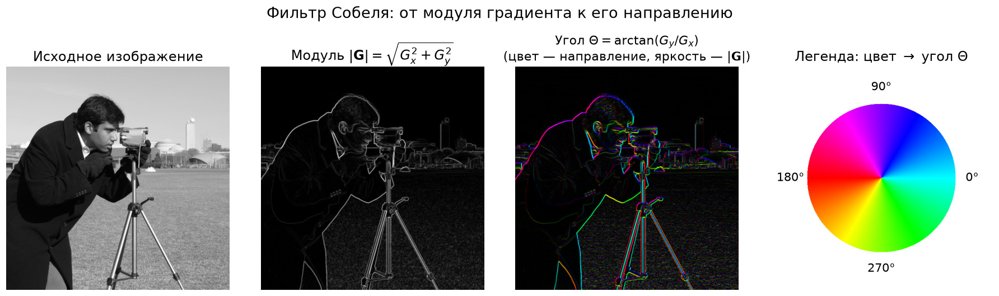
Слева направо: исходное полутоновое изображение; модуль градиента $|\mathbf{G}|$, где яркими остаются только границы; карта угла $\mathbf{\Theta}$ и цветовой круг-легенда к ней. На третьей панели оттенок кодирует направление градиента по этому кругу ($0^\circ$ — яркость растёт вправо, $90^\circ$ — вверх), а яркость пикселя — величину $|\mathbf{G}|$, поэтому однородные области (небо, трава, пальто) остаются чёрными. Обратите внимание: две стороны одной тонкой ножки штатива окрашены в противоположные цвета круга — градиент там направлен в разные стороны, хотя модуль одинаковый. Именно поэтому для детекции краёв обычно берут $|\mathbf{G}|$, а $\mathbf{\Theta}$ используют там, где важна ориентация: подавление немаксимумов в Канни, гистограммы направлений в HOG и SIFT. Родственники: Превитт, Шарр, лапласиан
Оператор Ядро по $x$ Сглаживание поперёк Комментарий Разность $[-1, 0, 1]$ нет Максимально шумно Превитт $[-1,0,1] \otimes [1,1,1]$ усредняющее $[1,1,1]$ Проще Собеля, но $[1,1,1]$ — плохое сглаживание (даёт звон) Собель $[-1,0,1] \otimes [1,2,1]$ биномиальное $[1,2,1]$ Стандарт де-факто Шарр $[-1,0,1] \otimes [3,10,3]$ $[3,10,3]$, нормировка $1/32$ Заметно точнее по углу Шарр заслуживает отдельного упоминания. Веса $3, 10, 3$ подобраны не «на глаз», а из условия минимизации ошибки вращательной симметрии: у ядра Собеля отклик на границу зависит от её ориентации сильнее, чем хотелось бы, и оценка угла $\Theta$ на диагональных границах уезжает на несколько градусов. Шарр эту ошибку минимизирует при том же размере $3\times3$. Правило простое: если нужен только модуль и порог — Собель; если нужна точная ориентация (оптический поток, оценка направления структур, субпиксельная геометрия) — Шарр. В OpenCV он доступен как
cv2.Scharrилиcv2.Sobel(..., ksize=cv2.FILTER_SCHARR).Лапласиан — вторая производная, сумма чистых вторых производных по обеим осям:
\[\nabla^2 I = \frac{\partial^2 I}{\partial x^2} + \frac{\partial^2 I}{\partial y^2} \quad\Longrightarrow\quad \begin{bmatrix}0&1&0\\1&-4&1\\0&1&0\end{bmatrix}\ \text{или}\ \begin{bmatrix}1&1&1\\1&-8&1\\1&1&1\end{bmatrix}\]
Он скаляр, а не вектор: направления не даёт. Зато у него есть особенность, которой нет у первой производной: там, где у $|\nabla I|$ максимум (то есть на середине перепада), у лапласиана переход через ноль. Метод поиска границ по нулям лапласиана (zero-crossing) даёт контуры, которые всегда замкнуты — нулевое множество непрерывной функции не может оборваться посреди области. Платят за это резко возросшей чувствительностью к шуму: первая производная умножает спектр на $|\omega|$, а вторая — на $\omega^2$, то есть усиливает высокие частоты квадратично, а не линейно; поэтому лапласиан почти никогда не применяют без предварительного гауссова сглаживания. Комбинация называется LoG — Laplacian of Gaussian; её дешёвое приближение — DoG, разность гауссиан.
Формально свёртка переворачивает ядро на $180^\circ$, а корреляция — нет:
\[(f * g)(n) = \sum_m f(m)\,g(n - m), \qquad (f \star g)(n) = \sum_m f(m)\,g(n + m)\]
Для симметричных ядер (гаусс, усреднение) разницы нет вообще. Для антисимметричных ядер Собеля разница — в знаке всего результата, то есть градиент разворачивается на $180^\circ$.
Практика:
scipy.ndimage.convolveпереворачивает ядро,scipy.ndimage.correlate— нет;cv2.filter2Dна самом деле выполняет корреляцию, несмотря на название;- свёрточный слой нейросети тоже выполняет корреляцию — ядро всё равно выучивается, так что знак безразличен.
Проверять надо не по документации, а численно: возьмите линейную рампу, у которой яркость растёт слева направо, примените свою функцию с ядром $\mathbf{G}_x$ и посмотрите на знак. Если результат отрицательный, ядро переворачивается, и надо либо перейти на
correlate, либо перевернуть ядро самому. На карте модуля $|\mathbf{G}|$ ошибка не видна вообще, а вот карта углов окажется развёрнутой — и подавление немаксимумов в Канни, HOG и оптический поток сломаются молча.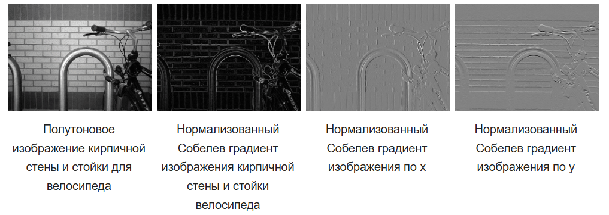
Четыре панели: исходное полутоновое фото кирпичной стены с велосипедной стойкой; нормализованный модуль градиента Собеля, где на чёрном фоне светятся контуры арки, велосипеда и швы кладки; отдельно компонента $\mathbf{G}_x$ и отдельно $\mathbf{G}_y$ — обе выведены на сером фоне, потому что содержат числа обоих знаков: серый соответствует нулю, светлое и тёмное — росту яркости в противоположные стороны. Хорошо видна избирательность: на панели $\mathbf{G}_x$ ярко проступают вертикальные швы кладки и стойки, а горизонтальные швы почти исчезают; на панели $\mathbf{G}_y$ всё ровно наоборот. 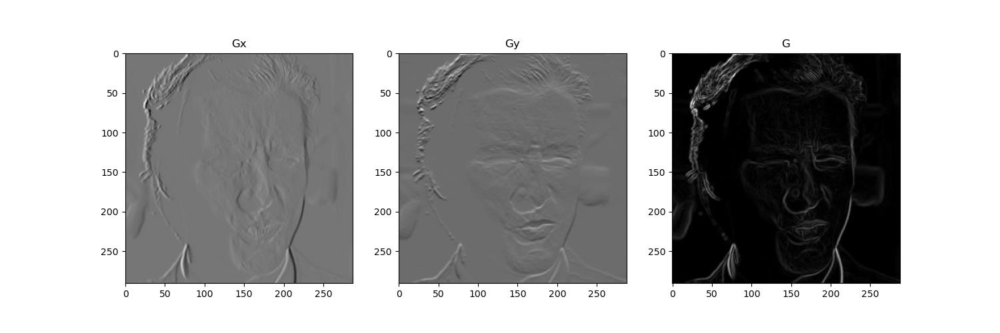
Три панели для портрета: $\mathbf{G}_x$, $\mathbf{G}_y$ и модуль $\mathbf{G}$; по осям отложены номера строки и столбца в пикселях. Первые две панели серые с двусторонними отклонениями — это карты со знаком, где серый означает ноль. На панели $\mathbf{G}_x$ отчётливо видны вертикальные контуры: щека, край лица, скула. На $\mathbf{G}_y$ — горизонтальные: линия губ, брови, складки. Третья панель — модуль $|\mathbf{G}|$: она уже неотрицательна, поэтому фон чёрный, и на нём светятся все контуры сразу, независимо от их ориентации. Именно эта потеря знака и делает модуль удобным для порогов и неудобным для анализа ориентации. arctanвместоatan2.arctan(G_y/G_x)теряет знаки обеих компонент и возвращает угол только в двух квадрантах из четырёх. Градиент, направленный влево-вниз, превращается во вправо-вверх. Плюс деление на ноль при $\mathbf{G}_x = 0$. Всегдаatan2(G_y, G_x).- «Собель — это детектор границ». Нет: Собель — оператор градиента. На выходе вещественная карта с широкими размазанными хребтами, а не бинарная карта границ. Чтобы получить границы, нужно ещё как минимум подавление немаксимумов (сжать хребет в линию толщиной в пиксель) и пороги с гистерезисом — то есть детектор Канни, внутри которого Собель и работает вторым шагом.
- Переполнение знака в
uint8. $\mathbf{G}_x$ и $\mathbf{G}_y$ принимают значения от $-1020$ до $+1020$. Если считать вuint8, все отрицательные значения обнулятся, и половина границ (те, где яркость падает, а не растёт) просто исчезнет. Симптом: на карте видны только «левые» края объектов и не видны «правые». В OpenCV этоcv2.Sobel(img, cv2.CV_64F, 1, 0), а неcv2.CV_8U. - Забыть сгладить перед дифференцированием. Ядро $[1,2,1]$ сглаживает лишь чуть-чуть ($\sigma \approx 0.85$). На шумном снимке этого не хватает, и карта градиента превращается в снег. Предварительное гауссово размытие с $\sigma$, соответствующей интересующему масштабу, обязательно.
- Путать направление градиента с направлением границы. Они перпендикулярны. Градиент показывает, куда растёт яркость, — то есть поперёк границы. Если в подавлении немаксимумов сравнивать соседей вдоль границы вместо поперёк, сотрётся вся карта.
- Сравнивать абсолютные значения из разных библиотек.
cv2.Sobelне нормирует,skimage.filters.sobel_vделит то же ядро на $4$, физически корректная нормировка — на $8$. Пороги, подобранные под одну реализацию, к другой неприменимы.
Собель — фильтр, придуманный человеком. В свёрточных сетях такие ядра не задают, а выучивают:
- ViT — там приведено сравнение фильтров первого слоя AlexNet и ViT: свёрточная сеть самостоятельно приходит к детекторам краёв, очень похожим на Собеля, а трансформер восстанавливает те же краевые и частотные паттерны вообще без свёрток.
- AlexNet — сама модель, с которой началось практическое обучение таких фильтров вместо их конструирования.
- Детекция объектов — важное терминологическое предупреждение: «детекция краёв» и «детекция объектов» — разные задачи, несмотря на общее слово. Собель отвечает на вопрос «здесь ли яркость меняется резко»; детектор объектов отвечает на вопрос «здесь ли машина и где именно её рамка». Первое — локальная функция от девяти пикселей, второе требует семантики и обучения на разметке. Складка на скатерти для Собеля — такой же край, как и край стола.
Откуда берутся числа в ядре Собеля?
Это произведение двух одномерных ядер. $[-1, 0, +1]$ — центральная разность, приближение первой производной со вторым порядком точности. $[1, 2, 1]$ — биномиальное сглаживание поперёк направления дифференцирования, приближение гауссианы с $\sigma \approx 0.85$; оно нужно потому, что дифференцирование усиливает высокие частоты, то есть шум. Из-за такой структуры ядро сепарабельно: два одномерных прохода вместо одного двумерного.
Как из двух компонент получить модуль и направление и почему atan2?
$|\mathbf{G}| = \sqrt{G_x^2 + G_y^2}$, $\Theta = \operatorname{atan2}(G_y, G_x)$.
arctanот отношения теряет знаки обеих компонент: два минуса сокращаются, и градиент, направленный влево-вниз, даёт тот же угол, что и вправо-вверх.atan2получает числитель и знаменатель по отдельности, различает все четыре квадранта и корректно работает при $G_x = 0$.Зачем нормировка 1/8?
Сумма положительных весов ядра равна четырём, и на линейной рампе с наклоном в одну единицу на пиксель сырой отклик составляет $8$. Деление на $8$ возвращает результату физический смысл «изменение яркости на пиксель». Для порогов это неважно — константа съедается порогом, — но важно там, где градиент сравнивают между источниками или используют в дифференциальных вычислениях.
cv2.Sobelнормировку не делает.Чем Шарр лучше Собеля?
Веса $[3, 10, 3]$ подобраны из условия минимальной ошибки вращательной симметрии: у Собеля отклик и особенно оценка угла зависят от ориентации границы, и на диагоналях угол уезжает на несколько градусов. Шарр эту ошибку минимизирует при том же размере ядра $3\times3$. Если нужен только модуль с порогом — разницы почти нет; если нужна точная ориентация (оптический поток, анализ направления структур) — берут Шарр.
Что такое лапласиан и чем он отличается от Собеля?
Лапласиан — сумма вторых производных, скалярная величина без направления. Там, где у модуля первой производной максимум, у лапласиана переход через ноль, поэтому границы ищут по нулям лапласиана — и такие контуры всегда замкнуты. Плата: вторая производная усиливает шум сильнее первой, поэтому лапласиан применяют только после гауссова сглаживания (оператор LoG), а на практике заменяют дешёвым приближением DoG.
Почему Собель — не детектор границ?
Он выдаёт вещественную карту модуля градиента с широкими размазанными хребтами, а не решение «граница или нет». Чтобы получить бинарную карту тонких связных линий, нужно ещё сжать хребет подавлением немаксимумов и применить два порога с гистерезисом — то есть выполнить детектор Канни, где Собель является лишь вторым из пяти шагов. И даже Канни не отличает край объекта от края текстуры: для этого нужны обучаемые модели.
-
Фильтр Габора
Фильтр Габора — синусоида, умноженная на гауссов конверт. Он отвечает на вопрос «есть ли в этом месте изображения полоски заданного периода, идущие под заданным углом».
\[g(x,y)=\exp\!\left(-\frac{x'^2+\gamma^2 y'^2}{2\sigma^2}\right)\cos\!\left(2\pi \frac{x'}{\lambda}+\psi\right)\]
где координаты повёрнуты на угол $\theta$:
\[x' = x\cos\theta + y\sin\theta, \qquad y' = -x\sin\theta + y\cos\theta\]
Ядро локализовано одновременно в пространстве (за счёт гауссова конверта) и в частоте (за счёт синусоиды). Габор доказал, что такая функция минимизирует произведение неопределённостей по обеим осям — то есть это самый «сфокусированный» фильтр, какой возможен.
Отдельный интересный факт: рецептивные поля простых клеток первичной зрительной коры V1 у млекопитающих описываются габоровскими функциями почти точно. Природа пришла к тому же базису независимо.
Что делает каждый параметр
Параметр Что задаёт Практический смысл $\lambda$ Длина волны синусоиды в пикселях Масштаб: полоски какой ширины ловим. $\lambda = 8$ — полоски с периодом $8$ пикселей $\theta$ Угол поворота Ориентация: под каким углом идут полоски. Обычно берут $4$–$8$ значений от $0$ до $\pi$ $\sigma$ Ширина гауссова конверта Сколько периодов помещается в окно, то есть насколько узкополосным получится фильтр $\gamma$ Сжатие конверта поперёк полос При $\gamma = 1$ конверт круглый, при $\gamma < 1$ вытянут вдоль полос — фильтр становится избирательнее по ориентации $\psi$ Фаза синусоиды $\psi = 0$ даёт чётное (косинусное) ядро, $\psi = -\pi/2$ — нечётное (синусное) Главная связка — $\sigma$ и $\lambda$. Их отношение однозначно определяет полосу пропускания фильтра. Связь точная (Kruizinga & Petkov): при полосе в $b$ октав
\[\frac{\sigma}{\lambda} = \frac{1}{\pi}\sqrt{\frac{\ln 2}{2}}\cdot\frac{2^b + 1}{2^b - 1}\]
Подставим типичные значения:
$\sigma/\lambda$ Полоса пропускания Как выглядит $\approx 0.31$ $2$ октавы Широкополосный: под конвертом умещается меньше периода, фильтр слабо различает частоты и близок к производной гауссианы $\approx 0.56$ $1$ октава Рабочий стандарт: под конвертом ($\pm 3\sigma$) видно около трёх полос $\approx 1.1$ $0.5$ октавы Узкополосный, но плохо локализованный в пространстве: усредняет по большой области и «размазывает» ответ на вопрос «где именно» Стандартный рецепт — зафиксировать $\sigma/\lambda \approx 0.56$ и варьировать только $\lambda$ и $\theta$.
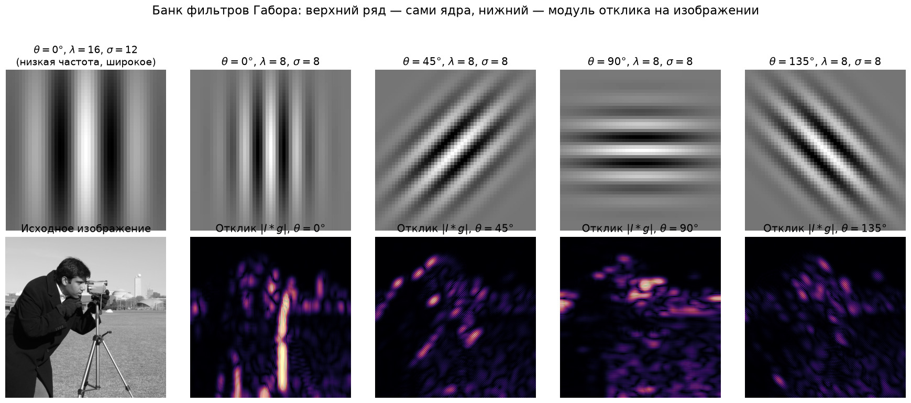
Верхний ряд — сами ядра. Крайнее левое ($\theta=0^\circ$, $\lambda=16$, $\sigma=12$) дано для сравнения: больший период $\lambda$ и более широкий гауссов конверт $\sigma$ дают низкочастотный фильтр с крупными полосами. Остальные четыре — один и тот же фильтр ($\lambda=8$, $\sigma=8$) при $\theta=0^\circ, 45^\circ, 90^\circ, 135^\circ$: полосы ядра поворачиваются вместе с $\theta$. Нижний ряд — модуль отклика $|I * g|$ на изображении из левого нижнего угла (палитра magma: чёрный — отклика нет, жёлтый — сильный). Хорошо видна ориентационная избирательность: при $\theta=0^\circ$ ярче всего горит вертикальная стойка штатива, при $\theta=90^\circ$ — горизонтальная линия горизонта и плечо пальто. Набор таких фильтров по $\theta$ и $\lambda$ и называют банком Габора. Связь с Фурье и вейвлетами
Обычное преобразование Фурье даёт глобальный ответ: «в изображении есть такая-то частота». Где именно она находится — оно не говорит; эта информация закодирована в фазе и напрямую нечитаема.
Оконное преобразование Фурье (Short-Time Fourier Transform) решает эту проблему: сигнал умножают на окно, сдвигают окно по изображению и в каждом положении считают спектр. Если окном взять гауссиану — получается ровно фильтр Габора. То есть свёртка с банком Габора и есть оконное преобразование Фурье с гауссовым окном, посчитанное сразу во всех положениях.
Отсюда естественно возникает принцип неопределённости: узкое окно даёт хорошую локализацию в пространстве и плохую в частоте, широкое — наоборот. Произведение неопределённостей ограничено снизу, и гауссово окно достигает этой нижней границы. Лучше уже не бывает — это и доказал Габор в 1946 году.
Отличие от вейвлетов. В STFT окно имеет фиксированный размер на всех частотах. В вейвлет-преобразовании окно масштабируется вместе с частотой: высокие частоты анализируются коротким окном, низкие — длинным. Габор занимает промежуточное положение: если строить банк, где $\sigma$ растёт пропорционально $\lambda$ (то есть отношение $\sigma/\lambda$ постоянно), то получаются вейвлеты Габора — семейство, порождённое масштабированием и поворотом одной функции. На практике банк Габора почти всегда строят именно так, поэтому термины часто употребляют как синонимы.
Квадратурная пара
Возьмём чётное (косинусное) ядро $\psi = 0$ и приложим его к полоскам подходящего периода. Отклик будет большим, если светлая полоса пришлась ровно на положительный горб ядра. Сдвинем изображение на полпериода — и тот же отклик станет большим по модулю, но отрицательным. Сдвинем на четверть периода — отклик станет нулевым, хотя полоски никуда не делись.
То есть отклик одного ядра зависит не только от того, есть ли текстура, но и от того, в какой фазе она оказалась. Для описания текстуры это катастрофа: одна и та же текстура, чуть смещённая, даёт совершенно разные признаки.
Решение — квадратурная пара: два ядра, сдвинутых по фазе на $90^\circ$.
\[g_{\text{чёт}} = e^{-\frac{x'^2+\gamma^2y'^2}{2\sigma^2}}\cos\!\left(\frac{2\pi x'}{\lambda}\right), \qquad g_{\text{нечёт}} = e^{-\frac{x'^2+\gamma^2y'^2}{2\sigma^2}}\sin\!\left(\frac{2\pi x'}{\lambda}\right)\]
Их удобно записывать одним комплексным ядром $g = g_{\text{чёт}} + i\,g_{\text{нечёт}}$, и тогда берут:
\[\text{энергия} = |I * g| = \sqrt{(I * g_{\text{чёт}})^2 + (I * g_{\text{нечёт}})^2}, \qquad \text{фаза} = \operatorname{atan2}(I * g_{\text{нечёт}},\ I * g_{\text{чёт}})\]
Модуль не зависит от фазы. Если сигнал — синусоида нужной частоты с произвольным сдвигом, то один отклик пропорционален $\cos\varphi$, другой $\sin\varphi$, а их квадратичная сумма даёт константу независимо от $\varphi$. Именно эту величину и берут как признак текстуры.
Ровно та же конструкция встречается повсюду: огибающая аналитического сигнала через преобразование Гильберта в обработке сигналов, модуль комплексного коэффициента Фурье, complex cells в зрительной коре, которые как раз суммируют квадраты откликов пар simple cells.
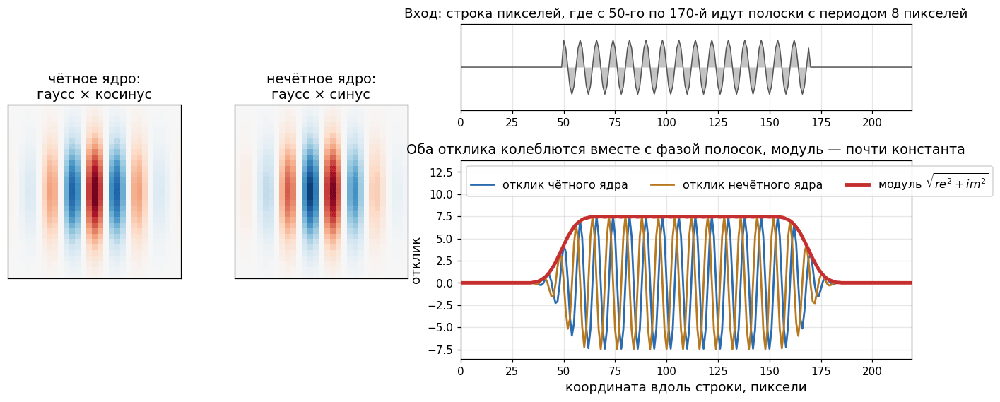
Слева — два ядра в сине-красной палитре (белый — ноль, красный и синий — веса разных знаков): чётное (гаусс, умноженный на косинус) с максимумом ровно в центре и нечётное (гаусс на синус), у которого в центре ноль, а по бокам симметричные горб и провал. Справа вверху — вход: строка пикселей, где с 50-го по 170-й идут полоски с периодом $8$ пикселей, а вне этого участка ровный фон. Справа внизу — три кривые откликов. Синяя (чётное ядро) и жёлтая (нечётное) быстро колеблются между $-7.5$ и $+7.5$: величина каждой из них зависит от того, в какой фазе полоски оказались под ядром. Красная — модуль $\sqrt{re^2+im^2}$: на всём участке с полосками он держится почти постоянным около $7.5$ и падает до нуля там, где полосок нет. Именно эта нечувствительность к фазе и делает модуль пригодным для описания текстуры. Банк фильтров как признаковое описание
Один фильтр Габора отвечает на один узкий вопрос. Чтобы описать произвольную текстуру, берут банк — набор фильтров по масштабам и ориентациям.
Типичная конфигурация: 4 масштаба $\times$ 6 ориентаций = 24 комплексных фильтра.
- Масштабы: $\lambda = 4,\ 8,\ 16,\ 32$ пикселя (шаг в октаву, то есть каждый следующий вдвое крупнее).
- Ориентации: $\theta = 0^\circ,\ 30^\circ,\ 60^\circ,\ 90^\circ,\ 120^\circ,\ 150^\circ$. Дальше $180^\circ$ идти не нужно: $\theta$ и $\theta + 180^\circ$ дают то же ядро с точностью до знака, а модуль отклика вообще не меняется.
Конвейер:
- Свернуть изображение с каждым из $24$ фильтров, взять модуль. Получаем $24$ карты энергии того же размера, что и изображение, — то есть тензор $H \times W \times 24$.
- Сгладить каждую карту гауссианой — иначе признак остаётся «дёрганым» на границах полос.
- Собрать дескриптор. Для классификации всего изображения — усреднить каждую карту, получив вектор из $24$ чисел (или из $48$, если добавить дисперсии). Для сегментации — оставить карты как есть и классифицировать каждый пиксель по его $24$-мерному вектору, например $k$-средними.
Стоимость: $24$ свёртки на изображение. Габоровские ядра, в отличие от гауссовых, не сепарабельны в общем случае (из-за поворота), поэтому каждая свёртка стоит $O(k^2)$ на пиксель. При $\lambda = 32$ и рекомендованном $\sigma \approx 0.56\lambda \approx 18$ обрезание на трёх сигмах даёт ядро порядка $109\times109$, и такую свёртку разумнее делать через FFT.
- Сегментация текстур. Историческая ниша Габора: разделить на снимке участки с разной текстурой — поля разных культур на аэрофотоснимке, ткань с разным плетением, дефекты покрытия.
- Отпечатки пальцев. Классика, до сих пор живая. Гребни отпечатка — почти идеальная локально-периодическая текстура с медленно меняющейся ориентацией. Алгоритм оценивает локальное направление гребней и локальную частоту, а затем применяет Габор, настроенный под эти локальные значения в каждой точке. Результат — резкое улучшение качества смазанного отпечатка: разрывы гребней восстанавливаются, а шум между ними подавляется.
- Распознавание радужки. Метод Даугмана: радужку разворачивают в полярные координаты, свёртывают с квадратурными фильтрами Габора и квантуют фазу в два бита на точку (по знакам вещественной и мнимой частей). Получается бинарный код фиксированной длины ($2048$ бит), а сравнение двух радужек сводится к расстоянию Хэмминга между кодами. Обратите внимание: здесь берётся именно фаза, а не модуль — она устойчива к изменению освещённости и контраста.
- Распознавание лиц (до нейросетей). Elastic Bunch Graph Matching: в узлах графа, привязанных к чертам лица, хранились векторы откликов банка Габора.
Общая черта всех этих применений: сцена содержит локально-периодическую структуру с осмысленной ориентацией. Там, где такой структуры нет, Габор мало что даёт.
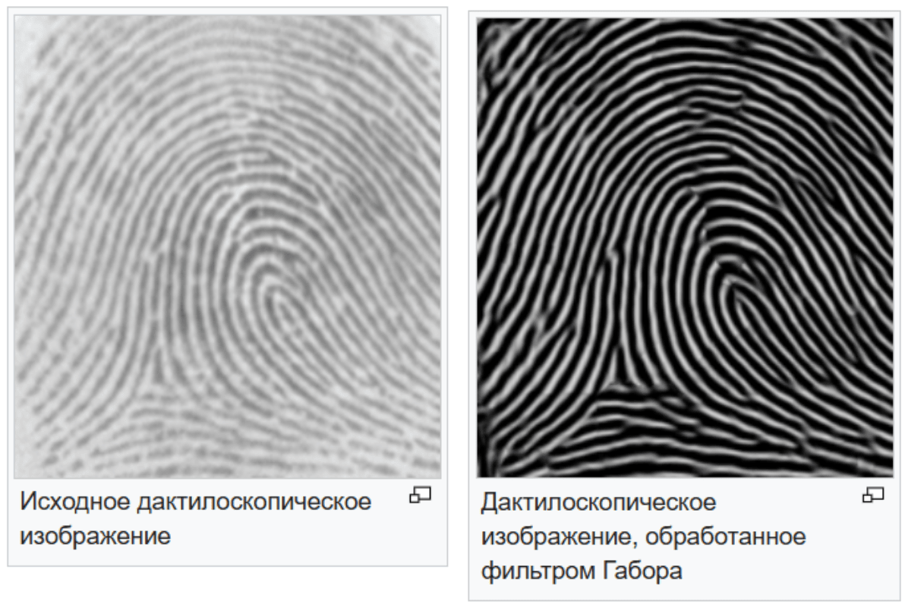
Две панели. Слева — исходный отпечаток пальца: гребни размыты, местами почти сливаются с фоном, контраст низкий. Справа — тот же отпечаток после фильтрации Габором, настроенным на локальное направление и локальный период гребней: гребни стали чёрными и чёткими, промежутки белыми, разрывы затянулись. Это иллюстрация того, зачем нужна ориентационная и частотная избирательность: фильтр усиливает только ту структуру, которая совпадает с его настройкой, и подавляет всё остальное, включая шум между гребнями. - Путать $\lambda$ и частоту. В формуле стоит длина волны в пикселях, а не частота. Чем больше $\lambda$, тем крупнее полоски и тем ниже частота. В
skimage.filters.gaborпараметр называетсяfrequencyи равен $1/\lambda$ в циклах на пиксель — путаница между этими двумя соглашениями стоит многим часов отладки. Проверяйте: нарисуйте ядро и посчитайте, через сколько пикселей повторяется узор. - Брать $\sigma$, не согласованную с $\lambda$. При $\sigma \ll \lambda$ (скажем, $\sigma/\lambda \approx 0.3$ и меньше) под конвертом не помещается даже один период, полоса пропускания расползается на две октавы и больше, и фильтр перестаёт быть частотно-избирательным — превращается в производную гауссианы. При $\sigma \gg \lambda$ ядро становится огромным, свёртка — дорогой, а локализация в пространстве теряется. Фиксируйте отношение $\sigma/\lambda \approx 0.56$ и варьируйте $\lambda$.
- Не убирать постоянную составляющую. Дискретизованное косинусное ядро имеет ненулевую сумму весов, то есть реагирует на среднюю яркость участка, а не только на полоски. В результате отклик на светлой однородной области оказывается больше, чем на тёмной текстурированной, и все признаки становятся зависимыми от освещённости. Лечение — вычесть из ядра его среднее (обнулить DC-компоненту) перед свёрткой. У синусного ядра эта проблема не возникает: оно антисимметрично, и сумма его весов равна нулю автоматически.
- Брать отклик одного ядра вместо модуля пары. Отклик одиночного фильтра колеблется вместе с фазой текстуры, поэтому один и тот же узор, сдвинутый на четверть периода, даст совсем другой признак. Всегда считайте модуль квадратурной пары.
- Забыть про масштаб изображения. $\lambda$ задаётся в пикселях, поэтому банк, настроенный на снимки $512\times512$, на тех же снимках, уменьшенных вдвое, будет ловить совсем другие структуры. При смене разрешения масштабы банка надо пересчитывать.
Банк фильтров Габора задают формулой; свёрточная сеть приходит к похожему базису сама:
- ViT — там показаны фильтры первого слоя AlexNet: обученная сеть приходит к ориентированным полосам, похожим на банк Габора, хотя ей никто их не задавал.
- ConvNeXt — современный взгляд на то, какими свёртки стали спустя десять лет.
Разница в том, что банк Габора фиксирован и покрывает пространство масштабов и ориентаций равномерно, а обученные фильтры распределены неравномерно — плотнее там, где статистика данных этого требует. И только первый слой сети похож на Габора: дальше идут признаки, для которых у классического CV аналогов нет.
Что такое фильтр Габора и на какой вопрос он отвечает?
Синусоида, умноженная на гауссов конверт. Отвечает на вопрос: есть ли в данном месте изображения полоски заданного периода $\lambda$, идущие под заданным углом $\theta$. Ядро локализовано одновременно в пространстве и в частоте, причём произведение этих неопределённостей минимально возможное — это доказал Габор. Рецептивные поля простых клеток зрительной коры V1 описываются такими же функциями.
За что отвечают параметры λ, θ, σ, γ, ψ?
$\lambda$ — длина волны в пикселях, то есть масштаб полосок. $\theta$ — их ориентация. $\sigma$ — ширина гауссова конверта, то есть сколько периодов попадает в окно. $\gamma$ — сжатие конверта поперёк полос: чем меньше, тем избирательнее фильтр по ориентации. $\psi$ — фаза: ноль даёт чётное косинусное ядро, $-\pi/2$ — нечётное синусное. Главное — согласовать $\sigma$ с $\lambda$: их отношение задаёт полосу пропускания, стандартный выбор $\sigma/\lambda \approx 0.56$.
Как Габор связан с преобразованием Фурье и с вейвлетами?
Свёртка с банком Габора — это оконное преобразование Фурье с гауссовым окном, посчитанное во всех положениях сразу. Обычное ДПФ даёт глобальный спектр без привязки к месту; оконное добавляет локализацию ценой размытия по частоте, и гауссово окно достигает теоретического оптимума этого компромисса. От вейвлетов отличается тем, что в классическом STFT окно фиксировано на всех частотах; если же строить банк с постоянным $\sigma/\lambda$, получаются вейвлеты Габора.
Что такое квадратурная пара и зачем она нужна?
Два ядра, отличающихся фазой на $90^\circ$: косинусное и синусное. Отклик каждого по отдельности зависит от того, в какой фазе текстура оказалась под ядром: сдвиг на четверть периода может обнулить отклик, хотя текстура никуда не делась. Модуль $\sqrt{re^2 + im^2}$ от фазы не зависит и служит устойчивым признаком энергии текстуры. Фаза $\operatorname{atan2}(im, re)$ тоже полезна и используется, например, в кодировании радужки по Даугману.
Как из Габора строят признаковое описание текстуры?
Строят банк: например, $4$ масштаба ($\lambda = 4, 8, 16, 32$) на $6$ ориентаций ($0^\circ$…$150^\circ$ с шагом $30^\circ$) — итого $24$ комплексных фильтра. Свёртывают изображение с каждым, берут модуль, сглаживают полученные карты энергии. Дальше либо усредняют каждую карту и получают $24$-мерный дескриптор всего изображения, либо оставляют карты и классифицируют каждый пиксель по его $24$-мерному вектору — это даёт сегментацию по текстуре.
Где Габор применялся на практике?
Сегментация текстур, улучшение отпечатков пальцев (фильтр настраивают под локальное направление и период гребней), кодирование радужки по Даугману (фазу квантуют в два бита на точку, получая $2048$-битный код и сравнение по Хэммингу), распознавание лиц через Elastic Bunch Graph Matching. Общее у всех задач — наличие локально-периодической структуры с осмысленной ориентацией.
-
Детектор границ Канни
Детектор Канни (John Canny, 1986) — алгоритм выделения границ, который на выходе даёт бинарную карту: тонкие, связные, толщиной в один пиксель линии там, где яркость меняется резко.
Отличие от простого фильтра Собеля принципиально: Собель отвечает на вопрос «насколько сильно меняется яркость в этой точке» и выдаёт вещественную карту с широкими размазанными полосами. Канни отвечает на вопрос «проходит ли здесь граница» и выдаёт решение — да или нет.
Алгоритм состоит из пяти шагов: сглаживание, градиент, подавление немаксимумов, два порога, гистерезис.
Пять шагов
\[L = G_\sigma * I\]
Дифференцирование усиливает высокие частоты, а шум — это как раз высокие частоты. Без предварительного сглаживания карта градиента превратится в снег. Параметр $\sigma$ здесь — главная ручка масштаба: он задаёт, границы какого размера нас интересуют.
На практике свёртку с гауссианой и взятие производной объединяют: производная свёртки равна свёртке с производной, $\partial(G_\sigma * I) = (\partial G_\sigma) * I$, поэтому достаточно один раз свернуть с ядром «производная гауссианы» и не хранить промежуточный сглаженный кадр. Механика самой операции свёртки — размеры ядра, паддинг, шаг — разобрана в вопросе про свёрточный слой; разница лишь в том, что здесь ядро задано формулой, а в сети выучивается.
\[G_x = \frac{\partial L}{\partial x}, \quad G_y = \frac{\partial L}{\partial y}, \qquad |\nabla L| = \sqrt{G_x^2 + G_y^2}, \qquad \theta = \arctan\!\big(G_y / G_x\big)\]
Производные обычно считают ядрами Собеля. Направление $\theta$ — это направление градиента, то есть направление максимального роста яркости; сама граница идёт перпендикулярно ему. Эту разницу путают постоянно, а она понадобится на следующем шаге.
Карта $|\nabla L|$ даёт не линию, а хребет шириной в несколько пикселей — резкий перепад «размазан» сглаживанием и конечным размером ядра производной. Нужно оставить от хребта только гребень.
Правило: пиксель сохраняется, только если его модуль градиента не меньше, чем у двух соседей вдоль направления градиента $\theta$; иначе он обнуляется.
\[ \mathrm{nms}(x,y) = \begin{cases} |\nabla L|(x,y), & |\nabla L|(x,y) \ge |\nabla L|(x \pm \delta_\theta) \\ 0, & \text{иначе} \end{cases} \]
Направление квантуют в четыре класса ($0^\circ$, $45^\circ$, $90^\circ$, $135^\circ$), чтобы соседи брались прямо из сетки; более точные реализации интерполируют значение соседа линейно между двумя пикселями.
Почему это даёт границу толщиной ровно в пиксель. Пройдёмся по строке поперёк границы: модуль градиента растёт, достигает максимума точно на перепаде и падает. Условие «локальный максимум вдоль направления градиента» по определению выполняется в одной точке этого профиля. Значит, из всего поперечного сечения хребта выживает ровно один пиксель — и так на каждом сечении, вдоль всей границы.
Один порог всегда плох: занизишь — на карте появятся ложные границы от шума и текстуры; завысишь — настоящие границы порвутся в местах, где контраст локально проседает.
Канни берёт два порога $t_{\text{low}} < t_{\text{high}}$ и делит пиксели на три группы:
- $\mathrm{nms} \ge t_{\text{high}}$ — сильные, это границы наверняка;
- $t_{\text{low}} \le \mathrm{nms} < t_{\text{high}}$ — слабые, кандидаты;
- $\mathrm{nms} < t_{\text{low}}$ — отбрасываются сразу.
Гистерезис: слабый пиксель принимается тогда и только тогда, когда он связен (по 8-связности) с каким-нибудь сильным — напрямую или через цепочку других слабых. Реализуется одним проходом разметки связных компонент: помечаем компоненты объединения сильных и слабых, оставляем те, в которых есть хотя бы один сильный.
Смысл ровно тот, что подсказывает интуиция: граница — это протяжённый объект. Изолированное слабое срабатывание почти наверняка шум, а слабое срабатывание, продолжающее уверенную линию, — почти наверняка та же линия, просто на участке с плохим контрастом.
Сглаживание убирает шум, Собель даёт модуль градиента с толстыми краями, NMS оставляет только максимумы вдоль градиента и утончает их до линии, двойной порог делит пиксели на сильные и слабые, гистерезис оставляет слабые только там, где они цепочкой связаны с сильными. 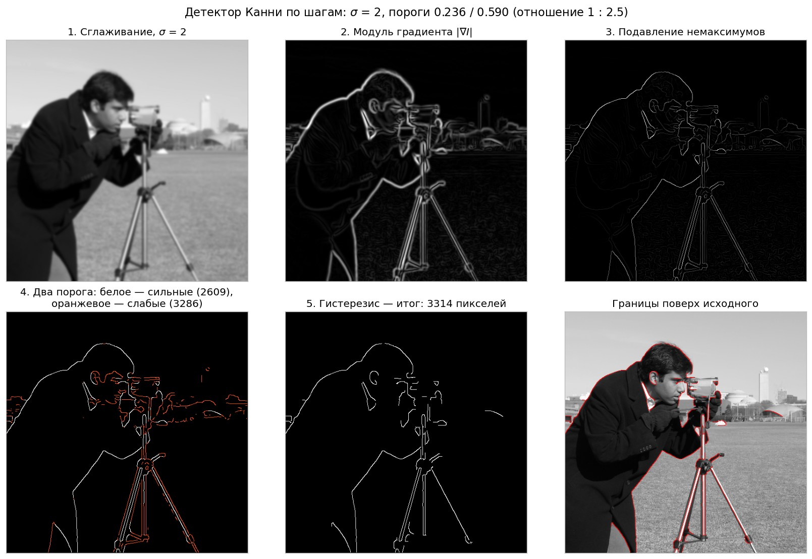
Реализация по шагам на классическом снимке фотографа, σ = 2, пороги 0.236 и 0.590 в отношении 1 к 2.5. Панель 1 — результат гауссова сглаживания. Панель 2 — модуль градиента: границы видны как широкие светлые хребты. Панель 3 — после подавления немаксимумов: те же хребты сжались в тонкие линии. Панель 4 — двойной порог: белым 2609 сильных пикселей, оранжевым 3286 слабых; видно, что слабые составляют большую часть трибуны и травы. Панель 5 — после гистерезиса осталось 3314 пикселей: изолированные слабые срабатывания на траве отброшены, а слабые участки контура штатива и куртки сохранены, потому что примыкают к сильным. Панель 6 — итоговые границы красным поверх исходного кадра. Как выбирать параметры
Сигма задаёт масштаб:
- малая $\sigma$ (0.5–1) — ловятся мелкие детали и текстура, но карта зашумлена;
- средняя $\sigma$ (1.5–3) — рабочий диапазон для большинства снимков;
- большая $\sigma$ (4 и выше) — остаются только крупные силуэты, зато границы смещаются: сглаживание сдвигает угол наружу от вершины и скругляет его.
Пороги. Классическая рекомендация Канни — отношение $t_{\text{high}} : t_{\text{low}}$ от 2:1 до 3:1. Абсолютные значения зависят от контраста конкретного изображения, поэтому надёжнее задавать их квантилями модуля градиента, а не константами: например, $t_{\text{high}}$ на уровне 90–98 перцентиля. Эвристика Оцу тоже работает: посчитать порог Оцу по карте $|\nabla L|$ и взять его как $t_{\text{high}}$, а $t_{\text{low}} = 0.4\,t_{\text{high}}$.
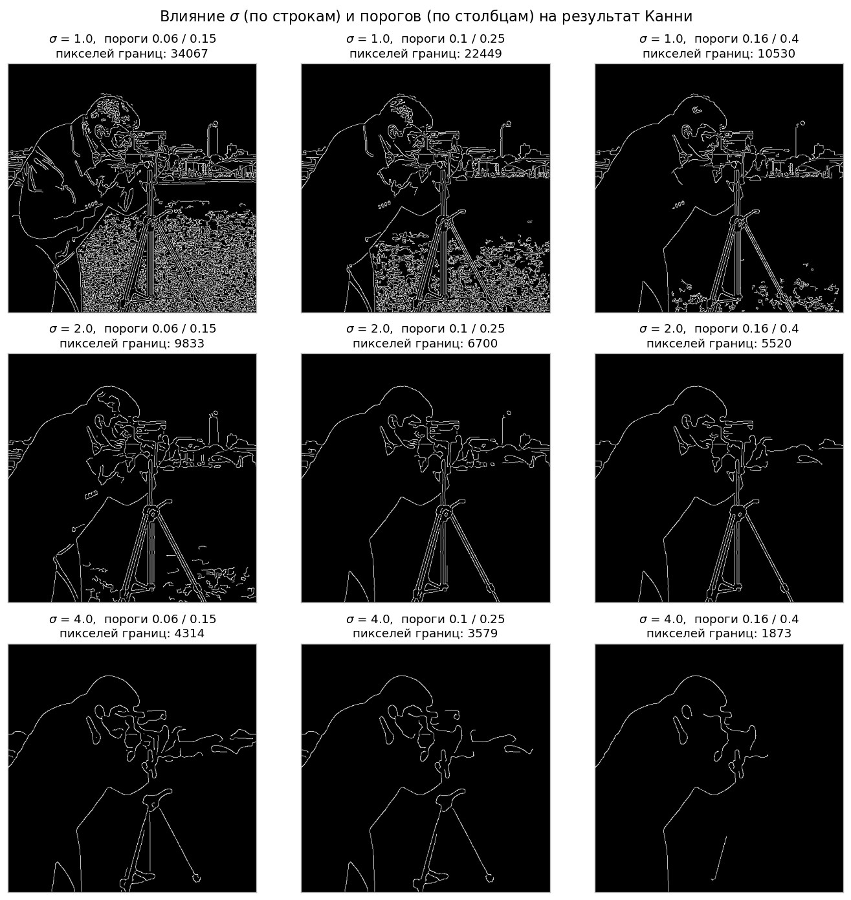
Сетка 3 на 3: по строкам σ = 1, 2 и 4, по столбцам пары порогов 0.06/0.15, 0.10/0.25 и 0.16/0.40. Верхняя строка при σ = 1 даёт 34067 пикселей границ на мягких порогах — трава превращается в сплошной крап. Нижняя строка при σ = 4 оставляет 1873 пикселя на жёстких порогах: остался только силуэт человека, штатив и здания на горизонте исчезли полностью. Диагональ от левого верхнего к правому нижнему углу показывает главный компромисс: полнота против чистоты. Заметьте также, что при σ = 4 контур головы заметно скруглился — это смещение границ, вносимое сильным сглаживанием. Канни не подбирал алгоритм эвристически — он поставил задачу оптимизации для одномерной ступеньки в белом шуме и потребовал от фильтра трёх свойств одновременно:
- Хорошее обнаружение (good detection) — максимум отношения сигнал/шум: настоящие границы находятся, ложные не порождаются.
- Хорошая локализация (good localization) — найденная граница должна лежать как можно ближе к истинной.
- Единственный отклик (single response) — на одну границу приходится ровно один отклик, а не несколько параллельных линий.
Первые два критерия конфликтуют: широкий фильтр лучше подавляет шум, но хуже локализует границу — произведение двух показателей ограничено сверху. Канни показал, что оптимум этого произведения достигается на функции, очень близкой к производной гауссианы, — отсюда шаги 1 и 2. Третий критерий обеспечивается шагом 3 (NMS), а гистерезис — уже инженерное дополнение, добавленное для устойчивости.
Выход алгоритма — множество помеченных пикселей. В нём нет ни объектов, ни замкнутых контуров, ни семантики:
- границы разрываются там, где контраст проседает (тень, размытие, низкий контраст объекта с фоном);
- границы не различают важное и неважное: край стола и складка скатерти для алгоритма одинаковы;
- замкнутость не гарантируется — контур объекта может остаться незамкнутым, и залить объект заливкой не получится.
Поэтому Канни почти никогда не бывает конечным шагом. Дальше идут: преобразование Хафа (собрать пиксели в прямые и окружности), поиск и аппроксимация контуров (
findContoursплюсapproxPolyDP), морфологическое замыкание разрывов. Семантическую границу — «край объекта, а не текстуры» — классический детектор в принципе не может дать: для этого нужны обучаемые модели вроде HED или DexiNed, которые предсказывают карту границ свёрточной сетью.Метод Выход Толщина границы Устойчивость к шуму Стоимость Собель вещественная карта модуля несколько пикселей низкая (ядро $3\times3$ слегка сглаживает) одна свёртка Лапласиан гауссианы (LoG) нули функции тонкая, замкнутые контуры средняя одна свёртка Канни бинарная карта 1 пиксель высокая ($\sigma$ настраивается) 5 шагов, всё ещё дёшево Обучаемые (HED, DexiNed) вероятность границы плавная, требует NMS высокая, семантическая нейросеть, GPU Отдельно про нули лапласиана: у метода есть свойство, которого нет у Канни, — контуры всегда замкнуты (нулевые множества непрерывной функции не могут оборваться посреди области). За это платят повышенной чувствительностью к шуму и склонностью порождать паразитные замкнутые петли на слабых перепадах.
И главное отличие обучаемых методов: они выдают семантическую границу. Складка на скатерти для них не край, а край стола — край, потому что модель училась на разметке, где люди отмечали границы объектов, а не всякий перепад яркости. Никакая настройка $\sigma$ и порогов такого различения дать не может.
- Сканирование документов. Найти четырёхугольник листа: Канни, затем контуры, затем аппроксимация четырьмя вершинами, затем гомография для распрямления.
- Промышленный контроль. Измерение размеров детали по границам — там, где освещение контролируемое, а точность нужна субпиксельная.
- Быстрая предобработка для Хафа. Детекция разметки на дороге, поиск столов и рамок в документах.
- Аугментация и вспомогательные каналы. Карта границ иногда подаётся сети дополнительным каналом или используется как вспомогательная цель в multi-task обучении.
- Путать направление градиента с направлением границы. Они перпендикулярны. NMS сравнивает соседей вдоль градиента, то есть поперёк границы. Сравнение вдоль границы всё сотрёт.
- Забывать сглаживание. Без гауссианы дифференцирование усилит шум, и карта станет нечитаемой. Собель с его ядром $3 \times 3$ сглаживает лишь слегка и на шумных снимках не спасает.
- Задавать пороги абсолютными числами для разных изображений. Контраст у снимков разный; порог, идеальный для одного, даст пустую карту на другом. Считайте пороги от статистики градиента: квантили или Оцу.
- Нарушать отношение порогов. Слишком близкие пороги обесценивают гистерезис (он вырождается в один порог), слишком далёкие — впускают шум через длинные цепочки слабых пикселей. Держитесь диапазона 2:1–3:1.
- Ожидать замкнутых контуров. Канни не гарантирует замкнутость и связность объекта. Планируйте шаг досборки: морфологическое закрытие, Хаф или аппроксимация контура.
Перечислите пять шагов детектора Канни.
Гауссово сглаживание с параметром σ; вычисление модуля и направления градиента; подавление немаксимумов вдоль направления градиента; разделение пикселей двумя порогами на сильные, слабые и отброшенные; гистерезис — приём слабых пикселей, связных с сильными.
Почему подавление немаксимумов даёт границу толщиной в один пиксель?
Если пройти поперёк границы, модуль градиента образует профиль с одним максимумом ровно на перепаде. Условие «значение не меньше, чем у обоих соседей вдоль направления градиента» выполняется в одной точке такого профиля. Значит, из каждого поперечного сечения хребта выживает ровно один пиксель.
Зачем нужны два порога и как работает гистерезис?
Один порог либо пропускает шум, либо рвёт настоящие границы на участках низкого контраста. Сильные пиксели принимаются безусловно, слабые — только если связны с каким-нибудь сильным напрямую или через цепочку слабых. Это формализует наблюдение, что граница — протяжённый объект, а изолированное слабое срабатывание почти наверняка шум.
Как параметр σ влияет на результат и чем приходится платить за его увеличение?
Малая σ ловит мелкие детали и текстуру, но даёт зашумлённую карту; большая σ оставляет только крупные силуэты. Плата за большую σ — смещение и скругление границ: сильное сглаживание сдвигает угол наружу от вершины и сглаживает резкие изломы контура.
Какие три критерия оптимальности сформулировал Канни?
Хорошее обнаружение (максимум отношения сигнал/шум), хорошая локализация (найденная граница близко к истинной) и единственный отклик на одну границу. Первые два конфликтуют, и оптимум их произведения достигается на функции, близкой к производной гауссианы; третий обеспечивается подавлением немаксимумов.
Почему выход Канни нельзя считать готовой сегментацией объектов?
На выходе только множество пикселей: без замкнутых контуров, без объектов и без семантики. Границы рвутся при просадке контраста, а край объекта и складка текстуры для алгоритма неразличимы. Нужны последующие шаги — преобразование Хафа, поиск и аппроксимация контуров, морфологическое замыкание — либо обучаемые детекторы границ.
-
Детектор углов Харриса
Угол (corner) — точка изображения, окрестность которой меняется при сдвиге в любом направлении. Это и есть неформальное определение «хорошей точки для сопоставления»: её можно однозначно найти на другом кадре.
Сравните три случая:
- Плоский участок (однородная стена) — сдвиг окна в любую сторону ничего не меняет. Локализовать точку невозможно.
- Край — сдвиг вдоль края ничего не меняет, сдвиг поперёк меняет сильно. Точка локализуется только в одном направлении. Это и есть знаменитая апертурная проблема: глядя в маленькое окошко на длинную границу, нельзя понять, куда она сдвинулась вдоль себя.
- Угол — сдвиг в любом направлении меняет содержимое окна. Точка локализуется полностью.
Детектор Харриса (Harris, Stephens, 1988) формализует это через матрицу вторых моментов градиента.
Структурный тензор
Рассмотрим изменение суммы квадратов разностей при сдвиге окна на $(u, v)$:
\[E(u, v) = \sum_{x, y} w(x, y)\,\big[I(x + u, y + v) - I(x, y)\big]^2\]
Разложим по Тейлору: $I(x+u, y+v) \approx I(x,y) + u I_x + v I_y$. Тогда
\[E(u, v) \approx \begin{pmatrix} u & v \end{pmatrix} M \begin{pmatrix} u \\ v \end{pmatrix}, \qquad M = \sum_{x, y} w(x, y) \begin{pmatrix} I_x^2 & I_x I_y \\ I_x I_y & I_y^2 \end{pmatrix}\]
$M$ называют структурным тензором (или матрицей вторых моментов). Здесь $w(x,y)$ — весовое окно, на практике гауссиана: она делает отклик изотропным и не даёт квадратному окну порождать артефакты.
Ключевой момент: $M$ — это не гессиан. В неё входят произведения первых производных, усреднённые по окну, а не вторые производные в точке. Путать их — классическая ошибка на собеседовании.
$M$ симметрична и положительно полуопределена, значит у неё два вещественных неотрицательных собственных числа $\lambda_1 \ge \lambda_2 \ge 0$. Форма $E(u,v) = \text{const}$ — эллипс с полуосями $1/\sqrt{\lambda_1}$ и $1/\sqrt{\lambda_2}$. Читать их надо так: $\lambda_i$ — это скорость роста несовпадения при сдвиге вдоль соответствующего собственного вектора.
Случай Собственные числа Геометрия Плоский участок $\lambda_1 \approx \lambda_2 \approx 0$ сдвиг в любую сторону почти бесплатен Край $\lambda_1 \gg \lambda_2 \approx 0$ сдвиг поперёк дорог, вдоль — бесплатен Угол $\lambda_1 \approx \lambda_2 \gg 0$ сдвиг дорог во всех направлениях То есть угол — это точка, где оба собственных числа велики.
Окно $7\times7$ ставится на плоскую область, на край и на угол. Эллипс справа — форма матрицы $M$: оси пропорциональны собственным числам. На плоском участке обе $\lambda$ малы и $R\approx 0$, на краю одна $\lambda$ большая и $R<0$, в углу обе большие и $R>0$. 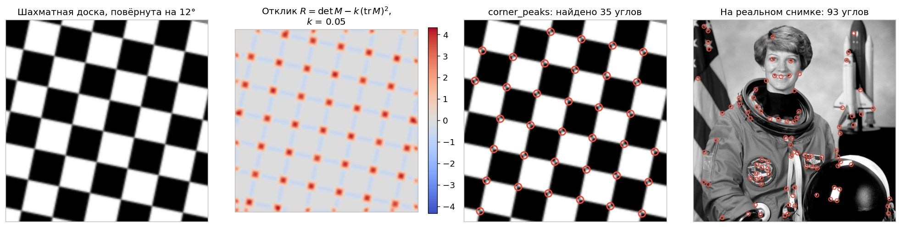
Слева направо: шахматная доска, повёрнутая на 12 градусов (поворот нужен, чтобы углы не совпадали с осями сетки); карта отклика R с σ = 2 и k = 0.05 в расходящейся палитре — красные пятна ровно в точках пересечения клеток, бледно-синие полосы вдоль рёбер, серый фон на однородных квадратах; результат corner_peaks с минимальным расстоянием 6 и относительным порогом 0.15 — найдено 35 углов, все на пересечениях и ни одного на рёбрах; тот же детектор на реальном снимке с порогом 0.02 — 93 точки, сосредоточенные на глазах, нашивках, стыках скафандра и краях предметов, то есть именно там, где яркость меняется в двух направлениях сразу. Проверим интуицию арифметикой. Возьмём три идеализированных окна $3 \times 3$ и посчитаем $M$ без весов (то есть $w \equiv 1$), используя простые разности $I_x = I(x+1) - I(x)$.
1. Однородное окно — все пиксели равны 100. Все производные нулевые:
\[M = \begin{pmatrix} 0 & 0 \\ 0 & 0 \end{pmatrix}, \quad \lambda_1 = \lambda_2 = 0, \quad R = 0\]
2. Вертикальный край — слева 0, справа 200, перепад строго по горизонтали. В каждой строке $I_x = 200$, $I_y = 0$. Пусть в окне три таких пикселя:
\[M = \begin{pmatrix} 3 \cdot 200^2 & 0 \\ 0 & 0 \end{pmatrix} = \begin{pmatrix} 120000 & 0 \\ 0 & 0\end{pmatrix}, \quad \lambda_1 = 120000,\ \lambda_2 = 0\] \[R = 0 - 0.05 \cdot 120000^2 = -7.2 \cdot 10^{8} < 0 \quad \Rightarrow \quad \textbf{край}\]
3. Угол — перепад и по горизонтали, и по вертикали: три пикселя с $I_x = 200$, $I_y = 0$ и три с $I_x = 0$, $I_y = 200$:
\[M = \begin{pmatrix} 120000 & 0 \\ 0 & 120000 \end{pmatrix}, \quad \lambda_1 = \lambda_2 = 120000\] \[R = 120000^2 - 0.05 \cdot 240000^2 = 1.44 \cdot 10^{10} - 2.88 \cdot 10^{9} = 1.15 \cdot 10^{10} > 0 \quad \Rightarrow \quad \textbf{угол}\]
Три случая различаются знаком $R$ ровно так, как предсказывает теория. Обратите заодно внимание на порядок величин: $R$ растёт как четвёртая степень контраста — вот почему абсолютный порог на отклик бесполезен и всегда используют относительный.
Отклик Харриса
Считать собственные числа явно дорого — нужен квадратный корень для каждого пикселя. Харрис и Стивенс предложили комбинацию, которая обходится только следом и определителем:
\[R = \det M - k\,(\mathrm{tr}\,M)^2 = \lambda_1 \lambda_2 - k (\lambda_1 + \lambda_2)^2\]
где $k$ — эмпирическая константа, обычно $k \in [0.04, 0.06]$.
Как читать знак и величину $R$:
- $R \gg 0$ — оба собственных числа велики → угол;
- $R < 0$ — одно велико, другое мало → край;
- $|R|$ мало — оба малы → плоский участок.
Роль $k$: она задаёт, насколько «квадратным» должен быть эллипс, чтобы точка считалась углом. Разделив на $\lambda_1^2$ и обозначив $q = \lambda_2/\lambda_1 \in [0,1]$, получаем $R/\lambda_1^2 = q - k(1+q)^2$. Условие $R > 0$ даёт нижнюю границу на $q$ — меньший корень уравнения $k q^2 - (1 - 2k) q + k = 0$: при $k = 0.04$ это $q > 0.0435$, при $k = 0.06$ уже $q > 0.0685$. Больше $k$ — строже детектор, меньше углов.
Вариант Ши–Томаси (Shi, Tomasi, 1994), он же
goodFeaturesToTrack:\[R_{ST} = \min(\lambda_1, \lambda_2)\]
Он честнее по смыслу («слабейшее направление должно быть достаточно сильным»), не требует подбирать $k$ и на практике даёт точки, которые лучше трекаются методом Лукаса–Канаде. Платится одним квадратным корнем на пиксель — сегодня это не проблема, поэтому Ши–Томаси используют чаще.
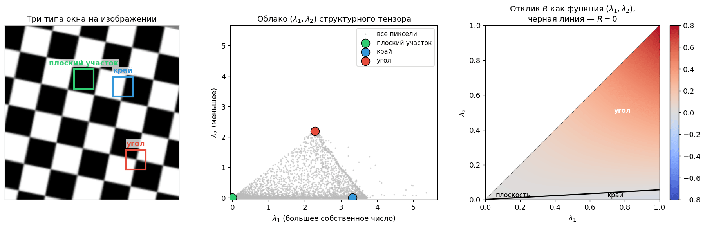
Слева: три окна на повёрнутой шахматной доске — зелёное на однородном квадрате, синее на границе между клетками, красное на пересечении. В центре: облако точек (λ₁, λ₂) для всех пикселей изображения; серые точки образуют треугольник под диагональю, поскольку λ₁ ≥ λ₂ по определению. Три помеченных окна легли ровно в три угла этого треугольника: плоский участок в начало координат (0.00, 0.00), край на горизонтальную ось (3.32, 0.003) — большое λ₁ при почти нулевом λ₂, угол в верхнюю часть облака (2.28, 2.20) — оба числа велики и близки. Справа: отклик R как функция (λ₁, λ₂) при k = 0.05, красное это R > 0, синее R < 0; чёрная линия — уровень R = 0, отделяющий зону углов от зоны краёв; пунктирная диагональ — граница области λ₂ ≤ λ₁. Свойства инвариантности
- Поворот — инвариантен. При повороте изображения структурный тензор преобразуется как $M \to R^\top M R$, а собственные числа при таком преобразовании не меняются. Меняются только собственные векторы, то есть ориентация эллипса. Значит, $\det M$, $\mathrm{tr}\,M$ и весь отклик $R$ остаются теми же.
- Аддитивное изменение яркости ($I \to I + b$) — инвариантен. Константа не влияет на производные вообще.
- Мультипликативное изменение ($I \to a I$) — НЕ инвариантен. Производные умножаются на $a$, элементы $M$ на $a^2$, собственные числа на $a^2$, а отклик $R$ — на $a^4$. Само множество локальных максимумов при этом сохраняется, поэтому детектор с относительным порогом (доля от максимума) устойчив, а с абсолютным — нет.
- Масштаб — НЕ инвариантен, и это принципиально. Углы существуют только на определённом масштабе. Увеличьте изображение вдвое — и то, что было резким углом в окне $\sigma = 2$, станет плавным скруглением, невидимым для того же окна. Наоборот, уменьшите — и мелкая текстура сольётся.
Последний пункт — прямой мост к SIFT. Ответ на вопрос «а какой масштаб правильный» звучит так: не выбирать один, а перебрать все. Строится масштабное пространство, точки ищутся как экстремумы и по координатам, и по масштабу, и вместе с точкой запоминается масштаб, на котором она найдена. Именно это делает SIFT.
Отклик $R$ вычисляется на целочисленной сетке, но истинный максимум почти никогда не лежит точно в центре пикселя. Для калибровки камеры или измерений точность в целый пиксель недостаточна.
Стандартный приём — аппроксимация параболоидом: по значениям $R$ в найденном пикселе и его восьми соседях подгоняется квадратичная функция $R(x,y) = a x^2 + b xy + c y^2 + d x + e y + f$, и берётся её аналитическая вершина. Даёт точность порядка 0.1 пикселя.
Альтернатива для углов, использующая геометрию, — итеративный метод (
cv2.cornerSubPix): истинный угол ищется как точка, в которой скалярное произведение градиента и вектора «от угла к соседней точке» равно нулю для всех соседей. Это работает потому, что вблизи угла градиент всегда перпендикулярен проходящей через угол границе.from skimage import feature R = feature.corner_harris(img, method="k", k=0.05, sigma=2) peaks = feature.corner_peaks(R, min_distance=6, threshold_rel=0.15) sub = feature.corner_subpix(img, peaks, window_size=13)Обратите внимание на
min_distance— без подавления немаксимумов детектор вернёт по десятку соседних пикселей на каждый угол.Структурный тензор — не изобретение детектора углов, а базовый объект локального анализа изображений. Та же матрица $M$ появляется в методе Лукаса–Канаде для оптического потока: там решается система
\[M \begin{pmatrix} u \\ v \end{pmatrix} = -\begin{pmatrix} \sum w\,I_x I_t \\ \sum w\,I_y I_t \end{pmatrix}\]
где $I_t$ — производная по времени между кадрами. Система разрешима, только если $M$ обратима, то есть оба собственных числа отличны от нуля — а это в точности условие «здесь угол».
Отсюда прямая цепочка рассуждений, которую полезно проговорить на собеседовании: точки, которые хорошо детектируются, — это ровно те же точки, которые хорошо трекаются. И там, и там мешает одно и то же — апертурная проблема. Именно поэтому функция OpenCV, отбирающая точки для трекера, называется
goodFeaturesToTrackи реализует критерий Ши–Томаси: авторы пришли к нему, решая задачу трекинга, а не детекции.Практическая связка выглядит так:
goodFeaturesToTrackнаходит точки на первом кадре,calcOpticalFlowPyrLKотслеживает их на последующих, по накопленным трекам оценивается движение камеры. Это скелет визуальной одометрии и стабилизации видео.- Называть $M$ гессианом. В $M$ входят усреднённые произведения первых производных. Гессиан — матрица вторых производных, и на нём основан другой детектор (Hessian, определитель гессиана в SURF).
- Забывать про гауссово окно. С прямоугольным окном отклик становится анизотропным: детектор по-разному реагирует на углы, повёрнутые под разными углами.
- Считать Харриса инвариантным к масштабу. Он инвариантен к повороту и сдвигу яркости, но не к масштабу. Именно поэтому появились SIFT и другие масштабно-инвариантные детекторы.
- Пропускать подавление немаксимумов. Отклик — гладкая функция, у каждого угла найдётся кластер соседних пикселей выше порога. Без
min_distanceполучите десятки дубликатов на один физический угол. - Задавать абсолютный порог отклика. $R$ масштабируется как четвёртая степень контраста: изменение яркости в 2 раза меняет отклик в 16 раз. Используйте относительный порог от максимума.
- Путать роль $k$ и порога. $k$ управляет «квадратностью» эллипса, то есть тем, насколько строго точка должна быть углом, а не краем. Порог управляет минимальным контрастом. Это разные ручки.
Что такое структурный тензор и чем он отличается от гессиана?
Это матрица $M = \sum w(x,y) [[I_x^2, I_xI_y],[I_xI_y, I_y^2]]$ — усреднённые по окну произведения первых производных. Она аппроксимирует изменение суммы квадратов разностей при малом сдвиге окна. Гессиан состоит из вторых производных в точке и к структурному тензору отношения не имеет.
Как по собственным числам структурного тензора различить плоский участок, край и угол?
Оба собственных числа близки к нулю — плоский участок, сдвиг окна в любую сторону ничего не меняет. Одно велико, другое почти ноль — край: сдвиг поперёк дорог, вдоль бесплатен, это апертурная проблема. Оба велики — угол, сдвиг в любом направлении меняет содержимое окна.
Запишите отклик Харриса и объясните смысл константы k.
$R = \det M - k(\mathrm{tr}\,M)^2 = \lambda_1\lambda_2 - k(\lambda_1+\lambda_2)^2$, обычно $k$ от 0.04 до 0.06. Она задаёт минимально допустимое отношение $q = \lambda_2/\lambda_1$, при котором точка считается углом, а не краем: условие $R > 0$ сводится к $q > k(1+q)^2$, откуда при $k = 0.04$ порог 0.0435, при $k = 0.06$ порог 0.0685. Чем больше $k$, тем строже детектор.
Чем вариант Ши–Томаси лучше классического Харриса?
Он берёт напрямую $\min(\lambda_1, \lambda_2)$ — то есть «слабейшее направление должно быть достаточно сильным». Это точнее выражает исходную идею, не требует подбирать эмпирическую константу $k$, и найденные точки лучше трекаются методом Лукаса–Канаде. Цена — вычисление квадратного корня, что сегодня несущественно.
К каким преобразованиям детектор Харриса инвариантен, а к каким нет?
Инвариантен к повороту, потому что собственные числа не меняются при $M \to R^\top M R$, и к аддитивному сдвигу яркости. Не инвариантен к умножению яркости — отклик масштабируется как четвёртая степень коэффициента, хотя множество локальных максимумов сохраняется. Принципиально не инвариантен к масштабу.
Почему неинвариантность к масштабу привела к появлению SIFT?
Угол существует лишь на определённом масштабе: после увеличения изображения резкий угол в фиксированном окне становится плавным скруглением. Решение — не выбирать масштаб, а перебрать все: построить масштабное пространство и искать экстремумы одновременно по координатам и по масштабу, запоминая масштаб вместе с точкой. Именно это делает SIFT.
-
Ключевые точки и дескрипторы: SIFT и ORB
Прежде чем говорить об алгоритмах, стоит развести три разные задачи — их часто смешивают, потому что SIFT решает все три:
- Детектор — находит, где лежат повторяемые точки: их координаты, а также масштаб и ориентацию, если алгоритм их оценивает.
- Дескриптор — превращает окрестность каждой точки в вектор чисел, устойчивый к преобразованиям, которые нас не интересуют (поворот, яркость), и различающий разные места сцены.
- Матчер — сопоставляет дескрипторы двух кадров, отвечая на вопрос «какая точка левого кадра соответствует какой точке правого».
Роли комбинируются свободно: можно детектировать FAST, описывать SIFT-дескриптором и матчить FLANN. Именно так и устроены современные пайплайны.
SIFT: детектор
Детектор Харриса не инвариантен к масштабу: угол существует только на том масштабе, на котором смотрят. SIFT (David Lowe, 1999/2004) решает это радикально — перебирает все масштабы.
Строится масштабное пространство: серия размытий одного изображения
\[L(x, y, \sigma) = G_\sigma * I\]
Масштабы идут геометрической прогрессией $\sigma, k\sigma, k^2\sigma, \dots$ с $k = 2^{1/s}$ (обычно $s = 3$, то есть $k \approx 1.26$). Октава — набор из $s + 3$ размытий; после каждой октавы изображение уменьшается вдвое, и всё повторяется.
Откуда именно $s + 3$: чтобы получить $s$ слоёв DoG, в которых можно искать экстремумы, нужно $s + 2$ слоёв DoG (два крайних не годятся — у них нет соседа по $\sigma$ с одной стороны), а для $s + 2$ разностей нужно $s + 3$ размытий. При $s = 3$ это 6 размытий и 5 слоёв DoG, из которых рабочих три.
Вместо дорогого лапласиана гауссианы SIFT считает его дешёвое приближение — разность гауссиан (DoG):
\[D(x, y, \sigma) = L(x, y, k\sigma) - L(x, y, \sigma) \approx (k - 1)\,\sigma^2 \nabla^2 G_\sigma * I\]
Приближение следует из уравнения теплопроводности $\partial L / \partial \sigma = \sigma \nabla^2 L$: конечная разность по $\sigma$ приближает производную, а та с точностью до множителя равна лапласиану.
Ключевые точки — локальные экстремумы $D$ в кубе $3 \times 3 \times 3$: пиксель сравнивается с 8 соседями на своём слое и с 9+9 соседями на слоях выше и ниже. Экстремум по $\sigma$ и даёт характерный масштаб точки: DoG откликается сильнее всего на пятно, размер которого согласован с $\sigma$.
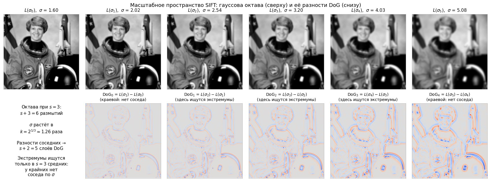
Верхний ряд — одна октава гауссова масштабного пространства при s = 3: шесть размытий с σ = 1.60, 2.02, 2.54, 3.20, 4.03, 5.08, каждое следующее в k = 2^(1/3) ≈ 1.26 раза больше предыдущего; крайние значения отличаются в 3.17 раза, то есть октава с запасом перекрывает удвоение σ. Нижний ряд — пять слоёв DoG, полученных вычитанием соседних размытий, в расходящейся палитре: красное — положительная разность, синее — отрицательная, серое — около нуля. Слева направо структуры, на которые откликается DoG, укрупняются: на первом слое это мелкие детали лица и нашивок, на последнем — крупные светлые и тёмные пятна вроде шлема и складок скафандра. Экстремумы ищутся в кубе 3×3×3 по двум пространственным координатам и по номеру слоя, поэтому пригодны только три средних слоя — у двух крайних нет соседа по σ с одной стороны. Именно поиск по σ и даёт точке характерный масштаб, а не только координаты. Сырых экстремумов очень много, и большинство бесполезны. SIFT отсеивает их двумя фильтрами:
1. Низкоконтрастные точки. Значение $D$ в экстремуме уточняется субпиксельно (разложение $D$ по Тейлору до второго порядка и аналитический поиск вершины), и если $|D(\hat{x})| < 0.03$ (при яркостях в $[0,1]$), точка отбрасывается. Такие точки нестабильны: небольшой шум сдвигает их или уничтожает.
2. Точки на рёбрах. DoG сильно откликается на протяжённые границы, а точка на ребре плохо локализована вдоль него — та же апертурная проблема, что у Харриса. Проверка идёт через гессиан $H$ функции $D$ в точке (матрица $2 \times 2$ вторых производных): если отношение собственных чисел $r = \lambda_{\max}/\lambda_{\min}$ велико — это ребро. Считать сами собственные числа не нужно, достаточно неравенства
\[\frac{(\mathrm{tr}\,H)^2}{\det H} < \frac{(r + 1)^2}{r}, \qquad r = 10\]
Тот же трюк «след и определитель вместо собственных чисел», что и в отклике Харриса.
Чтобы дескриптор был инвариантен к повороту, точке приписывают каноническую ориентацию.
В окрестности точки (радиус пропорционален её масштабу) строится гистограмма направлений градиента из 36 корзин по 10°. Каждый пиксель голосует своим модулем градиента, взвешенным гауссианой от расстояния до центра. Направление главного пика и объявляется ориентацией точки.
Тонкость: если есть второй пик выше 80 % от главного, в этом месте создаётся вторая ключевая точка с теми же координатами и масштабом, но другой ориентацией. Это заметно повышает устойчивость матчинга в местах, где направление неоднозначно (например, на симметричных структурах).
Дальше вся окрестность поворачивается так, чтобы каноническая ориентация смотрела вверх, и уже в этой системе координат считается дескриптор. Отсюда и берётся инвариантность к повороту.
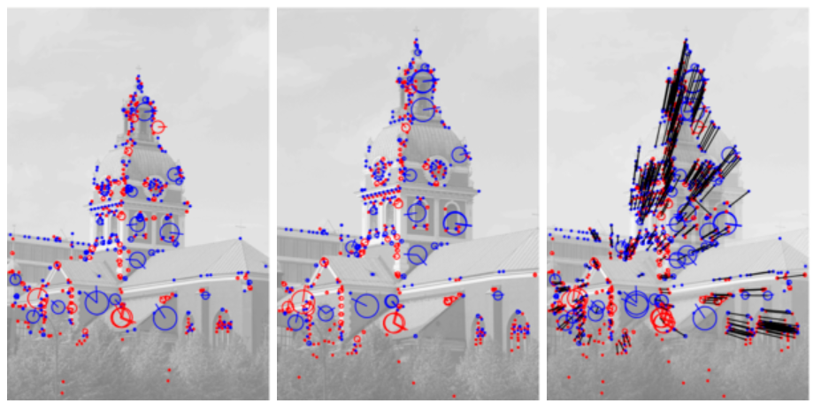
Три панели по одному сюжету — башня собора, снятая дважды. На левой и средней панелях показаны ключевые точки двух кадров: каждая точка нарисована кружком, радиус которого равен её характерному масштабу, а отрезок из центра — канонической ориентацией. Крупные кружки сидят на больших однородных пятнах, мелкие — на деталях орнамента и черепицы; именно за счёт того, что масштаб хранится вместе с точкой, дескрипторы двух кадров сравнимы, даже если объект снят с разного расстояния. На правой панели чёрными отрезками нанесены найденные соответствия между двумя кадрами: линии собираются в согласованные пучки — на шпиле один общий наклон, на нижней стене другой, — и такая согласованность внутри области и есть признак корректного матчинга. Источник 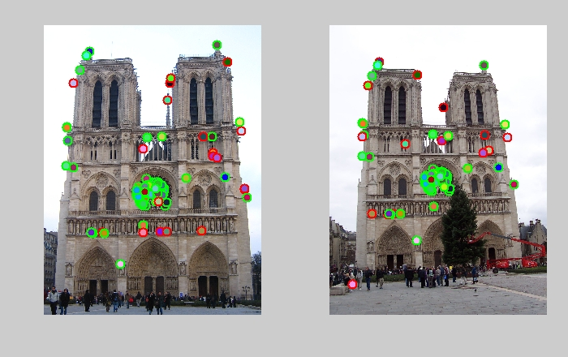
Собор Парижской Богоматери, снятый с двух разных расстояний: слева крупно, справа вдвое мельче и под другим углом. Кружки — детектированные ключевые точки, их радиус равен характерному масштабу. Обратите внимание на одну и ту же деталь фасада — розу над порталом: на левом снимке ей соответствует крупный зелёный кружок, на правом такой же кружок заметно меньше по абсолютному размеру в пикселях. Детектор автоматически подобрал масштаб под размер структуры на конкретном кадре, поэтому дескрипторы, посчитанные в этих окнах, окажутся похожими, несмотря на разное разрешение объекта. SIFT: дескриптор
Вокруг точки берётся окно $16 \times 16$ пикселей (в масштабе точки, повёрнутое по её ориентации) и делится на сетку $4 \times 4$ ячеек по $4 \times 4$ пикселя.
В каждой ячейке строится гистограмма направлений градиента из 8 корзин по 45°. Голос пикселя — его модуль градиента, взвешенный гауссианой от расстояния до центра окна (края окна влияют слабее). Голоса распределяются трилинейной интерполяцией между соседними ячейками и соседними корзинами по углу — иначе сдвиг точки на один пиксель скачком перебрасывал бы вклад из одной ячейки в другую.
Итого: $4 \times 4 \times 8 = \mathbf{128}$ чисел.
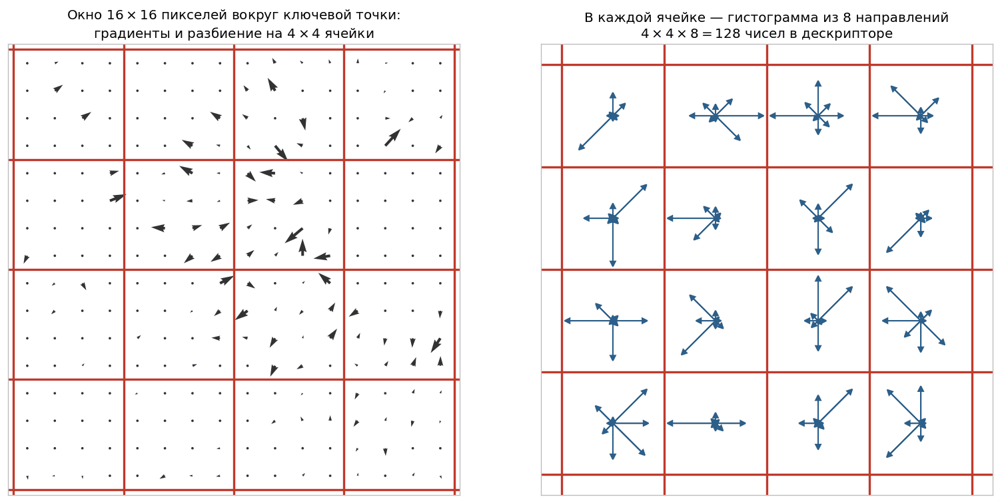
Слева: окно 16×16 вокруг ключевой точки, стрелки — градиенты в узлах, красные линии делят окно на 16 ячеек 4×4. Хорошо видно, что градиенты сосредоточены там, где проходит граница, а на однородных участках почти нулевые. Справа: в каждой из 16 ячеек строится гистограмма из 8 направлений, изображённая розой стрелок — длина луча равна весу соответствующей корзины. Все 16 гистограмм по 8 чисел, вытянутые в один вектор, и дают дескриптор длины 128. Финальный вектор обрабатывается в три приёма, и каждый шаг решает свою задачу:
Нормировать в единичную длину ($L_2$). Это даёт инвариантность к умножению яркости: если освещение выросло вдвое, все градиенты вырастут вдвое, а после нормировки вектор не изменится. Инвариантность к прибавлению константы уже есть — производные её не видят.
Обрезать все компоненты сверху числом 0.2.
Нормировать заново.
Зачем нужен шаг 2. Освещение меняется нелинейно: блик, отражение, изменение угла источника света влияют на сильные градиенты гораздо больше, чем на слабые. Без клиппинга одна яркая грань может дать компоненту 0.8, и весь дескриптор фактически сведётся к «здесь очень резкая граница вот такого направления». Обрезав вклад доминирующих градиентов, мы заставляем дескриптор опираться на распределение направлений, а не на их абсолютные величины. Значение 0.2 подобрано Лоу экспериментально.
Матчинг и ratio-test
Наивный матчинг «ближайший сосед по $L_2$» плох: у каждой точки левого кадра всегда найдётся ближайшая точка правого, даже если соответствия не существует вовсе (точка попала в окклюзию или вышла за кадр).
Ratio-test: для точки $f$ находим два ближайших дескриптора во втором кадре с расстояниями $d_1 \le d_2$ и принимаем соответствие только если
\[\frac{d_1}{d_2} < \tau, \qquad \tau \approx 0.75\ (\text{Лоу предлагал } 0.8)\]
Логика: у настоящего соответствия правильный сосед должен быть заметно ближе всех остальных. Если два лучших кандидата почти равноудалены, значит место неотличимо от других — типично для повторяющейся текстуры (кирпич, окна здания, шахматная клетка).
Пусть у точки $A$ два ближайших расстояния $d_1 = 120$, $d_2 = 400$. Отношение $120/400 = 0.30 < 0.75$ — пара принимается: правильный кандидат более чем втрое ближе конкурента.
У точки $B$: $d_1 = 300$, $d_2 = 330$. Отношение $300/330 = 0.91 > 0.75$ — пара отбрасывается. И это несмотря на то, что $d_1 = 300$ вовсе не выглядит большим числом: порог на абсолютное расстояние в 350 такую пару бы пропустил. Абсолютная близость сама по себе ничего не значит — важно, насколько лучший кандидат оторвался от второго.
Именно поэтому ratio-test работает лучше порога на абсолютное расстояние: он адаптивен и сам подстраивается под локальную «различимость» места.
В статье Лоу приводит цифры: порог 0.8 отсекает 90 % ложных соответствий, теряя при этом менее 5 % правильных.
ORB: быстрая альтернатива
ORB (Rublee et al., 2011) создавался в OpenCV как свободная замена запатентованному тогда SIFT, пригодная для реального времени на мобильных устройствах.
Детектор — FAST с добавленной ориентацией. FAST объявляет пиксель углом, если на окружности Брезенхэма радиуса 3 (16 пикселей) найдётся дуга из $n \ge 9$ подряд идущих пикселей, все существенно ярче или все существенно темнее центра. Проверка организована деревом решений и требует в среднем 2–3 сравнений — отсюда и скорость. Масштабная инвариантность добавляется грубо: FAST запускается на каждом уровне пирамиды изображений.
Ориентация считается через центроид интенсивности: берутся моменты $m_{pq} = \sum x^p y^q I(x,y)$ по окрестности, центроид $C = (m_{10}/m_{00},\, m_{01}/m_{00})$, и угол $\theta = \mathrm{atan2}(m_{01}, m_{10})$ — направление от центра точки к центроиду яркости. Дёшево и достаточно устойчиво.
Дескриптор — BRIEF с поворотом. BRIEF — это 256 бинарных тестов: заранее заданные пары точек $(p_i, q_i)$ в окрестности, и $i$-й бит равен $[I(p_i) < I(q_i)]$. Итого 256 бит = 32 байта. В ORB все пары поворачиваются на угол $\theta$ точки (rBRIEF), а сам набор пар не случаен, а отобран жадно по обучающей выборке так, чтобы тесты имели дисперсию, близкую к максимальной, и были слабо скоррелированы между собой.
Метрика — Хэмминга. Расстояние между двумя дескрипторами — число различающихся битов, то есть
popcount(a XOR b). На современных процессорах это одна инструкция на 64 бита, поэтому сравнение бинарных дескрипторов идёт на порядок-полтора быстрее, чем $L_2$ между 128-мерными float-векторами.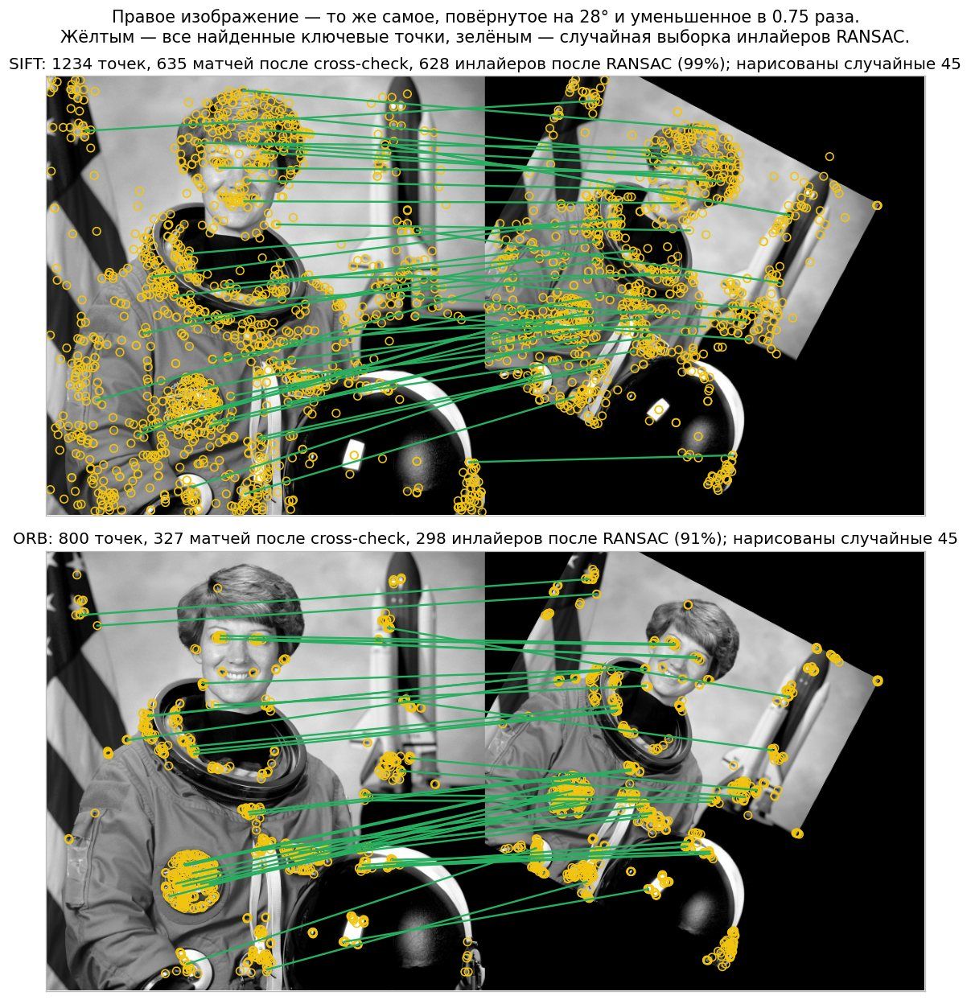
Одно и то же изображение сопоставляется со своей копией, повёрнутой на 28 градусов и уменьшенной в 0.75 раза. Жёлтые кружки — все найденные ключевые точки, зелёные линии — случайная выборка из 45 инлайеров RANSAC (рисовать все нечитаемо). Верхняя панель, SIFT: 1234 точки, 635 пар после cross-check, 628 инлайеров — 99 процентов. Нижняя панель, ORB с лимитом 800 точек: 327 пар, 298 инлайеров — 91 процент. Обе модели восстановили преобразование практически точно: SIFT дал масштаб 0.750 и угол 28.0 градуса, ORB — 0.748 и 27.9 градуса. Разница не в точности итога, а в плотности и надёжности: SIFT находит вдвое больше пар и почти не даёт ложных, ORB экономнее и быстрее, но требует более агрессивной фильтрации выбросов. Свойство SIFT ORB AKAZE Тип дескриптора 128 float (часто uint8) 256 бит = 32 байта 486 бит (M-LDB) Метрика $L_2$ Хэмминга Хэмминга Инвариантность к повороту да да (центроид яркости) да Инвариантность к масштабу да (DoG-пирамида) частично (пирамида FAST) да (нелинейное масштабное пространство) Устойчивость к размытию и шуму высокая средняя высокая Скорость базовая (1×) примерно 10× быстрее между SIFT и ORB Память на точку 128–512 байт 32 байта 61 байт Лицензия патент истёк в 2020, свободен BSD, свободен всегда свободен Как выбирать. ORB — когда нужно реальное время на слабом железе, кадры близки по масштабу, а точек много (визуальная одометрия, ORB-SLAM). SIFT — когда нужна максимальная надёжность при сильных изменениях масштаба и ракурса и есть вычислительный бюджет (3D-реконструкция, COLMAP, сшивка панорам). AKAZE — разумный компромисс, особенно на текстурных сценах.
Отдельно стоит нейросетевая линия: SuperPoint (обучаемые детектор и дескриптор в одной сети), SuperGlue и LightGlue (обучаемый матчер на графовых нейросетях), LoFTR (плотное сопоставление вообще без явного шага детекции, построенное на трансформерном внимании — см. ViT). Они заметно превосходят классику на сложных парах — сильная смена ракурса, день против ночи, — но требуют GPU и обученной модели.
- Сравнивать бинарные дескрипторы по $L_2$. Для ORB и BRIEF нужна метрика Хэмминга. Евклидово расстояние между битовыми векторами формально посчитается, но потеряет всю выгоду в скорости и часть точности.
- Забывать ratio-test или cross-check. Ближайший сосед находится всегда, даже когда соответствия не существует. Без фильтрации доля выбросов легко превышает 50 %, и RANSAC начинает захлёбываться.
- Считать SIFT инвариантным к аффинным и проективным искажениям. Он инвариантен к повороту, масштабу и сдвигу с масштабированием яркости, но лишь устойчив (не инвариантен) к небольшому наклону плоскости. При сильном изменении ракурса нужен Affine-SIFT (ASIFT) или обучаемые методы.
- Путать порог ratio-test с порогом RANSAC. Первый работает в пространстве дескрипторов и отсеивает неоднозначные пары. Второй работает в пространстве координат и отсеивает пары, не согласующиеся с геометрической моделью. Это два независимых фильтра, и нужны оба.
- Думать, что ORB плох просто потому, что он бинарный. На своих сценариях — небольшие смещения между кадрами, много точек, real-time — он даёт результат, сопоставимый с SIFT, при десятикратном выигрыше по скорости и вчетверо меньшей памяти.
Как SIFT добивается инвариантности к масштабу?
Строит масштабное пространство — серию гауссовых размытий с σ, растущей геометрически с шагом $k = 2^{1/s}$, организованных в октавы по $s + 3$ размытия (при $s = 3$ это 6 размытий и 5 слоёв DoG, из которых рабочих три). Ключевые точки ищутся как локальные экстремумы разности гауссиан в кубе 3×3×3 одновременно по двум координатам и по номеру слоя. Экстремум по σ и даёт характерный масштаб точки, который затем используется при вычислении дескриптора.
Почему используется разность гауссиан, а не лапласиан гауссианы?
Из уравнения теплопроводности $\partial L/\partial\sigma = \sigma \nabla^2 L$ следует, что разность двух соседних размытий с точностью до множителя приближает лапласиан гауссианы. Разность гауссиан вычисляется вычитанием уже посчитанных слоёв пирамиды, то есть практически бесплатно, тогда как лапласиан требует отдельной свёртки.
Как SIFT отсеивает плохие кандидаты?
Двумя фильтрами. Низкоконтрастные точки отбрасываются по абсолютному значению DoG в субпиксельно уточнённом экстремуме (порог около 0.03). Точки на рёбрах отбрасываются по отношению собственных чисел гессиана DoG, которое проверяется без явного их вычисления через неравенство на след и определитель, с порогом отношения r = 10.
Как устроен дескриптор SIFT и зачем нужны нормировка и клиппинг 0.2?
Окно 16×16 вокруг точки, повёрнутое по её канонической ориентации, делится на 4×4 ячеек, в каждой строится гистограмма из 8 направлений — итого 128 чисел. Нормировка в единичную длину даёт инвариантность к умножению яркости. Обрезка компонент сверху числом 0.2 с последующей повторной нормировкой не даёт нескольким сильным градиентам, которые сильнее всего страдают от нелинейных изменений освещения, доминировать в векторе.
В чём смысл ratio-test и какой порог используется?
Соответствие принимается, только если расстояние до ближайшего дескриптора заметно меньше расстояния до второго ближайшего: $d_1/d_2 < 0.75$–0.8. Смысл в том, что абсолютная близость ничего не значит, а вот отрыв лучшего кандидата от второго говорит о различимости места. По данным Лоу, порог 0.8 отсекает около 90 процентов ложных соответствий, теряя менее 5 процентов правильных.
Чем ORB отличается от SIFT по устройству и когда его выбирают?
ORB — это FAST с ориентацией по центроиду яркости в роли детектора и повёрнутый BRIEF из 256 бинарных тестов в роли дескриптора; сравнение идёт по расстоянию Хэмминга. Он примерно на порядок быстрее SIFT и требует 32 байта на точку вместо 128–512. Выбирают его для реального времени на слабом железе и когда кадры близки по масштабу — визуальная одометрия, ORB-SLAM.
-
Гистограммы ориентированных градиентов (HOG)
HOG (Histogram of Oriented Gradients, Dalal & Triggs, 2005) — дескриптор всего окна изображения, а не отдельной точки. Он описывает форму объекта распределением направлений градиента по регулярной сетке ячеек.
Ключевое отличие от SIFT, с которым HOG идейно роднится: SIFT считает гистограммы направлений вокруг найденной ключевой точки и делает их инвариантными к повороту. HOG считает те же гистограммы по фиксированной сетке всего окна и намеренно не делает инвариантным к повороту — потому что для пешехода вертикальная ориентация является полезным признаком, а не помехой.
Идея в одну фразу: локальная форма объекта хорошо описывается распределением направлений краёв, даже если мы не знаем, где именно эти края проходят.
Как считается
Считаются простейшими ядрами $[-1, 0, 1]$ и $[-1, 0, 1]^\top$ — без предварительного сглаживания. Даль и Триггс специально это проверили: любое сглаживание перед взятием производной ухудшало качество детекции. Границы объекта — это ровно тот сигнал, который нужен, и размывать его вредно.
Для цветного изображения градиент считается в каждом канале отдельно, и в каждом пикселе берётся канал с наибольшим модулем.
Для каждого пикселя получаем модуль $m = \sqrt{g_x^2 + g_y^2}$ и беззнаковое направление $\theta = \arctan(g_y/g_x) \bmod 180^\circ$.
Направление берётся по модулю 180°: градиенты, смотрящие в противоположные стороны, считаются одним и тем же направлением.
Причина содержательная. Пешеход в тёмной куртке на светлом фоне и пешеход в светлой куртке на тёмном — это один и тот же объект, но знаки всех градиентов у них противоположны. Отбросив знак, мы делаем дескриптор нечувствительным к полярности контраста. Для детекции людей это дало заметный прирост качества; для некоторых других задач (например, детекции автомобилей) знаковый вариант работает лучше, и это гиперпараметр.
Окно режется на ячейки $8 \times 8$ пикселей. В каждой строится гистограмма из 9 корзин по 20° на диапазоне 0–180°.
Голос пикселя — не единица, а модуль его градиента. Это принципиально: сильный, уверенный край должен влиять на дескриптор больше, чем слабое шумовое колебание яркости. Голос ещё и распределяется линейно между двумя соседними корзинами пропорционально близости угла к их центрам — чтобы угол 19.9° и угол 20.1° не давали скачкообразно разный результат.
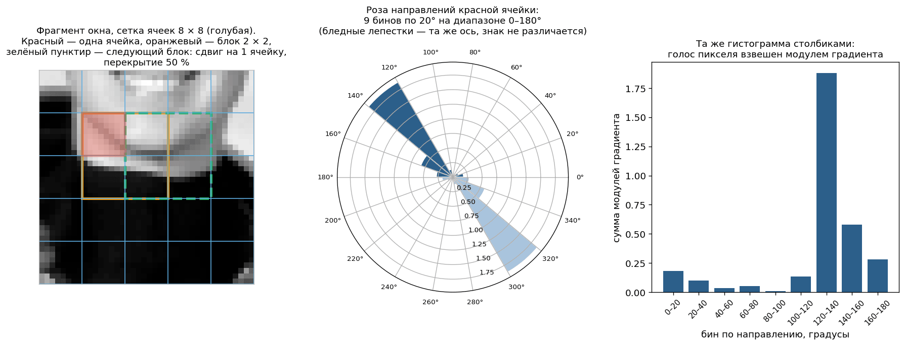
Слева: фрагмент окна детектора с голубой сеткой ячеек 8×8. Красным залита одна ячейка, оранжевым обведён блок 2×2 ячейки, зелёным пунктиром — следующий блок, сдвинутый ровно на одну ячейку; их перекрытие составляет ровно половину площади. В центре: роза направлений выделенной красной ячейки — 9 бинов по 20 градусов на диапазоне 0–180, бледные лепестки продублированы на противоположной стороне, чтобы подчеркнуть, что знак направления не различается. Справа: та же гистограмма столбиками. Доминирует бин 120–140 градусов с весом 1.88 при сумме по всем бинам 3.25 — на ячейку попадает граница воротника, идущая в одном выраженном направлении. Голос каждого пикселя взвешен модулем его градиента, поэтому по вертикальной оси стоит сумма модулей, а не число пикселей. Ячейки объединяются в блоки $2 \times 2$ ячейки ($16 \times 16$ пикселей). Вектор блока — конкатенация 4 гистограмм, то есть $4 \times 9 = 36$ чисел. Он нормируется по схеме L2-Hys:
- нормировать в единичную $L_2$-норму: $v \to v / \sqrt{\|v\|_2^2 + \varepsilon^2}$;
- обрезать все компоненты сверху числом 0.2;
- нормировать заново.
Это в точности та же процедура, что в дескрипторе SIFT, и по той же причине: нормировка даёт инвариантность к масштабу освещённости, а клиппинг не даёт одному очень сильному краю задавить весь блок.
Блоки перекрываются: шаг блока равен одной ячейке, поэтому соседние блоки делят половину площади, и каждая ячейка входит в четыре разных блока (кроме краевых), каждый раз нормированная по-своему.
Зачем нужно перекрытие. Освещение меняется по кадру, и норма градиентов вместе с ним. Нормируя ячейку в контексте разных соседей, мы получаем несколько её версий — и классификатор сам разберётся, какая полезнее. Даль и Триггс показали, что отказ от перекрытия заметно ухудшает качество.
Плата за это — рост размерности. Внутренние ячейки попадают в 4 блока каждая, но краевые в меньшее число, поэтому дескриптор растёт не ровно вчетверо: для окна $64 \times 128$ получается $3780$ признаков вместо $8 \cdot 16 \cdot 9 = 1152$ без перекрытия, то есть в 3.3 раза. Обратите внимание: это не избыточность, а сознательное дублирование с разной нормировкой.
Стандартное окно детектора пешеходов у Даля и Триггса — $64 \times 128$ пикселей (человек стоя, соотношение сторон 1:2). Считаем размерность по шагам:
- Ячейки: $64/8 = 8$ по горизонтали, $128/8 = 16$ по вертикали. Сетка $8 \times 16$ ячеек.
- Блоки $2 \times 2$ с шагом в одну ячейку: $8 - 2 + 1 = \mathbf{7}$ позиций по горизонтали, $16 - 2 + 1 = \mathbf{15}$ по вертикали. Всего $7 \times 15 = 105$ блоков.
- В каждом блоке: $2 \times 2 = 4$ ячейки, в каждой 9 корзин → $4 \times 9 = 36$ чисел.
- Итого:
\[7 \times 15 \times 4 \times 9 = \mathbf{3780}\]
Это и есть та самая длина 3780, которую называют в статье и которую возвращает
skimage.feature.hogс параметрами по умолчанию для такого окна.Для сравнения, если взять ячейки $16 \times 16$: сетка $4 \times 8$ ячеек, блоков $3 \times 7 = 21$, размерность $3 \times 7 \times 4 \times 9 = 756$ — впятеро меньше, но и мелкие детали формы теряются.
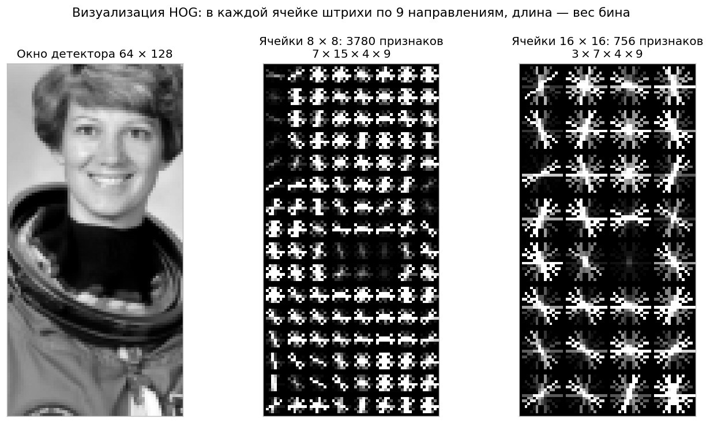
Слева окно детектора 64×128, вырезанное из портрета. В центре визуализация HOG с ячейками 8×8: в каждой ячейке нарисованы 9 штрихов по числу корзин, длина штриха равна весу корзины. Хорошо читается силуэт — вокруг границы лица и шлема штрихи выстраиваются перпендикулярно контуру и становятся длиннее, на однородных участках почти исчезают. Справа то же с ячейками 16×16: сетка вчетверо реже, дескриптор короче в пять раз (756 против 3780 чисел), общая форма ещё различима, но мелкие детали вроде черт лица уже смазаны в одну усреднённую розу. HOG + SVM: детектор до эпохи глубокого обучения
- Обучение. Из размеченного датасета вырезаются положительные окна (пешеходы, приведённые к $64 \times 128$) и отрицательные (случайные фрагменты фона). Для каждого считается 3780-мерный HOG. На этих векторах обучается линейный SVM.
- Hard negative mining. Обученный детектор прогоняется по фоновым изображениям, все ложные срабатывания собираются и добавляются в обучающую выборку как отрицательные примеры. SVM переобучается. Обычно 1–2 итерации, и качество заметно растёт — без этого шага детектор захлёбывается ложными срабатываниями.
- Скользящее окно. На инференсе окно $64 \times 128$ ездит по изображению с шагом 8 пикселей (одна ячейка), в каждой позиции считается HOG и берётся скалярное произведение с весами SVM.
- Пирамида масштабов. Изображение последовательно уменьшается (коэффициент около 1.05–1.2), и вся процедура повторяется. Так детектируются люди разного размера при фиксированном размере окна.
- NMS. Один человек порождает десятки перекрывающихся срабатываний. Non-maximum suppression оставляет из каждой группы боксов с высоким IoU только один — с максимальным откликом.
Почему линейный SVM, а не что-то помощнее. Во-первых, скалярное произведение по скользящему окну считается быстро и допускает трюк с накопленными суммами. Во-вторых, веса линейного SVM интерпретируемы: их можно нарисовать как «шаблон» и увидеть силуэт человека — плечи, ноги, контур головы. В-третьих, при 3780 признаках и тысячах примеров нелинейное ядро быстро переобучается.
Три механизма работают вместе:
- Градиент вместо яркости. Прибавление константы к изображению не меняет градиент вообще.
- Нормировка блока. Умножение яркости на константу масштабирует все градиенты одинаково, и после $L_2$-нормировки вектор не меняется.
- Клиппинг 0.2 и беззнаковые направления. Нелинейные изменения освещения (блики, смена полярности контраста) бьют по сильным градиентам и по знаку — оба фактора нейтрализованы.
Именно поэтому HOG работал на уличных съёмках при любой погоде и времени суток, где методы на основе цвета или яркости проваливались.
Дескриптор устроен на жёсткой сетке. Ячейка $(3, 7)$ окна всегда описывает одну и ту же область окна, что бы там ни находилось. Отсюда все ограничения:
- Поза. Пешеход, стоящий прямо, и пешеход, идущий с широко расставленными ногами, дают разные векторы: ноги «переехали» в другие ячейки. Сидящий человек не детектируется вовсе.
- Точка съёмки. HOG не инвариантен к повороту: наклонённый на 30° человек — уже другой объект для детектора.
- Частичное перекрытие. Заслонённая половина окна даёт мусорные гистограммы в соответствующих ячейках, и суммарный отклик проседает.
- Мелкие детали. Ячейка $8 \times 8$ усредняет, а на объекте размером 30 пикселей мелкие различия просто не попадают в дескриптор.
Первый пункт частично лечится Deformable Part Models (Felzenszwalb, 2010): объект моделируется корневым HOG-фильтром плюс несколькими частями со своими HOG-фильтрами, которым позволено смещаться относительно корня со штрафом. DPM был state of the art в детекции до 2012 года.
Окончательно проблему решил переход к обучаемым признакам. HOG + SVM — прямой предшественник современных детекторов: обе схемы состоят из «признаки → классификатор → скользящее окно / якоря → NMS», разница лишь в том, что HOG задан вручную, а свёрточные признаки выучиваются из данных. Точку в споре поставила AlexNet в 2012 году, показавшая, что выученные признаки бьют инженерные с большим отрывом.
- Слабое железо и встраиваемые системы. Детекция без GPU: HOG считается за миллисекунды на CPU.
- Малые выборки. При сотне размеченных примеров HOG + SVM может обойти дообученную сеть — у него на порядки меньше параметров.
- Baseline и sanity check. Быстрая проверка, что задача в принципе решаема по форме объекта.
- Признак в ансамбле. HOG иногда добавляют как дополнительный вход к обучаемым признакам в промышленных системах контроля качества.
- Считать размерность как «число ячеек × 9». Так получится $8 \times 16 \times 9 = 1152$, а не 3780. Блоки перекрываются, и внутренние ячейки входят в четыре блока с разной нормировкой — считать надо по блокам: $7 \times 15 \times 4 \times 9$. Итоговый рост — в 3.3 раза, а не ровно вчетверо, потому что краевые ячейки попадают в меньшее число блоков.
- Сглаживать изображение перед взятием градиента. Авторы прямо показали, что это ухудшает качество: границы и есть искомый сигнал.
- Использовать знаковые направления 0–360° по умолчанию. Для людей беззнаковый вариант 0–180° работает лучше, потому что снимает зависимость от полярности контраста. Для других классов это стоит проверять.
- Нормировать весь дескриптор целиком вместо поблочной нормировки. Тогда теряется устойчивость к неравномерному освещению: яркая часть кадра задавит тёмную.
- Ожидать инвариантности к повороту. У HOG её нет и не задумывалось. Если объекты появляются в произвольной ориентации, нужен либо поворот окна перебором, либо другой дескриптор.
- Забывать hard negative mining. Без него детектор на скользящем окне даёт лавину ложных срабатываний: отрицательных окон на изображении в тысячи раз больше, чем положительных.
Что описывает дескриптор HOG и чем он отличается от SIFT?
Он описывает форму объекта в целом окне распределением направлений градиента по регулярной сетке ячеек. SIFT считает похожие гистограммы вокруг найденной ключевой точки и делает их инвариантными к повороту; HOG считает их по фиксированной сетке всего окна и инвариантности к повороту намеренно не даёт, поскольку для многих объектов ориентация — полезный признак.
Как считается размерность HOG для окна 64×128 с ячейками 8×8 и блоками 2×2?
Сетка ячеек 8 на 16. Блоки 2×2 с шагом в одну ячейку дают 7 позиций по горизонтали и 15 по вертикали. В каждом блоке 4 ячейки по 9 корзин, то есть 36 чисел. Итого $7 \times 15 \times 4 \times 9 = 3780$ признаков.
Почему направления берутся по модулю 180 градусов?
Чтобы дескриптор не зависел от полярности контраста. Тёмный объект на светлом фоне и светлый на тёмном дают градиенты противоположного знака, но это один и тот же объект. Отбросив знак, детектор перестаёт различать эти случаи, что для детекции людей даёт прирост качества.
Что такое L2-Hys нормировка и зачем блоки перекрываются?
L2-Hys: нормировать блок в единичную длину, обрезать компоненты сверху числом 0.2, нормировать заново. Нормировка даёт инвариантность к масштабу освещённости, клиппинг не даёт одному сильному краю задавить блок. Перекрытие блоков с шагом в одну ячейку означает, что внутренняя ячейка входит в четыре блока и попадает в дескриптор четырежды с разной нормировкой — это повышает устойчивость к неравномерному освещению ценой роста размерности в 3.3 раза (3780 против 1152).
Опишите пайплайн детекции HOG + SVM.
Обучение линейного SVM на HOG-векторах положительных и отрицательных окон, затем hard negative mining — добавление собранных ложных срабатываний в обучающую выборку и переобучение. На инференсе: скользящее окно с шагом в одну ячейку, пирамида масштабов для объектов разного размера, скалярное произведение с весами SVM в каждой позиции и non-maximum suppression поверх перекрывающихся боксов.
Почему HOG плохо работает на деформируемых объектах?
Дескриптор построен на жёсткой сетке: конкретная ячейка всегда описывает одну и ту же область окна. При смене позы части объекта переезжают в другие ячейки, и вектор меняется радикально. Частично это чинят Deformable Part Models, где частям разрешено смещаться относительно корневого фильтра со штрафом, а полностью проблему решил переход к выученным свёрточным признакам.
-
Аффинные преобразования
Аффинное преобразование — линейное преобразование плоскости плюс перенос. В однородных координатах оно записывается одной матрицей:
\[ \begin{bmatrix}x'\\y'\\1\end{bmatrix} = \underbrace{\begin{bmatrix} a_{11}&a_{12}&t_x\\ a_{21}&a_{22}&t_y\\ 0&0&1 \end{bmatrix}}_{A} \begin{bmatrix}x\\y\\1\end{bmatrix} \]
Нижняя строка всегда $(0, 0, 1)$ — именно это отличает аффинное преобразование от проективного.
Определяющее свойство: аффинное преобразование сохраняет параллельность прямых. Прямые остаются прямыми, параллельные — параллельными, отношения длин вдоль одной прямой — неизменными, а середина отрезка остаётся серединой. Углы и абсолютные длины при этом, вообще говоря, не сохраняются.
Частные случаи:
\[ T = \begin{bmatrix}1&0&t_x\\0&1&t_y\\0&0&1\end{bmatrix}, \quad S = \begin{bmatrix}s_x&0&0\\0&s_y&0\\0&0&1\end{bmatrix}, \quad R_\theta = \begin{bmatrix}\cos\theta&-\sin\theta&0\\ \sin\theta&\cos\theta&0\\0&0&1\end{bmatrix}, \quad H = \begin{bmatrix}1&h&0\\0&1&0\\0&0&1\end{bmatrix} \]
— перенос, масштаб, поворот и скос (shear).
В матрице $A$ шесть свободных параметров: $a_{11}, a_{12}, a_{21}, a_{22}, t_x, t_y$. Нижняя строка зафиксирована.
Каждая пара соответствующих точек $(x_i, y_i) \leftrightarrow (x_i', y_i')$ даёт два уравнения:
\[x_i' = a_{11}x_i + a_{12}y_i + t_x, \qquad y_i' = a_{21}x_i + a_{22}y_i + t_y\]
Шесть неизвестных, по два уравнения на точку — значит, минимум три пары точек, и они не должны лежать на одной прямой. Причина вырождения чисто алгебраическая: строки матрицы системы имеют вид $(x_i,\ y_i,\ 1)$, и при коллинеарных точках эти три строки линейно зависимы — ранг матрицы падает до двух, и решение перестаёт быть единственным.
Отсюда же геометрическая интуиция: аффинное преобразование однозначно определяется тем, куда переходят вершины одного треугольника. Это и есть содержание функции
cv2.getAffineTransform(src_tri, dst_tri).Иерархия преобразований плоскости по числу степеней свободы:
Преобразование DOF Что сохраняет Минимум точек Перенос $2$ всё, кроме положения $1$ Евклидово (поворот + перенос) $3$ длины, углы $2$ Подобие (+ равномерный масштаб) $4$ углы, отношения длин $2$ Аффинное $6$ параллельность, отношения длин вдоль прямой $3$ Проективное (гомография) $8$ прямые остаются прямыми, двойное отношение $4$ Аффинное преобразование — это в точности гомография, у которой два нижних коэффициента равны нулю. Практически это означает: аффинное не умеет перспективу. Рельсы, сходящиеся к горизонту, аффинным преобразованием не описать.
Когда пар точек больше трёх, система переопределена, а сами измерения содержат шум. Решают методом наименьших квадратов.
Уравнения линейны по неизвестным, поэтому задача распадается на две независимые:
\[ \underbrace{\begin{bmatrix}x_1&y_1&1\\ x_2&y_2&1\\ \vdots\end{bmatrix}}_{M} \begin{bmatrix}a_{11}\\a_{12}\\t_x\end{bmatrix} = \begin{bmatrix}x_1'\\x_2'\\ \vdots\end{bmatrix}, \qquad M \begin{bmatrix}a_{21}\\a_{22}\\t_y\end{bmatrix} = \begin{bmatrix}y_1'\\y_2'\\ \vdots\end{bmatrix} \]
Матрица $M$ одна и та же в обеих системах, различаются только правые части. Решение $\hat{p} = (M^\top M)^{-1} M^\top b$, на практике — через
np.linalg.lstsqили SVD.Ключевое отличие от гомографии: здесь задача линейна по неизвестным, поэтому решается прямо, без нормализации координат и без DLT-трюков. Гомография же требует решать однородную систему и искать нулевое собственное направление.
Если среди пар есть грубые ошибки (а при автоматическом матчинге они есть всегда), чистый МНК испортится: у него нулевая точка слома, один выброс тянет решение за собой. Используют RANSAC —
cv2.estimateAffinePartial2Dилиcv2.estimateAffine2Dсmethod=cv2.RANSAC. Устройство RANSAC и формула числа итераций разобраны в вопросе про гомографию; для аффинного случая минимальная выборка меньше — три пары вместо четырёх, а значит и итераций при той же доле выбросов нужно заметно меньше.Как применить преобразование к картинке
Матрицу мы получили. Теперь надо построить новое изображение. Есть два способа, и работает только один.
Прямой варпинг (forward warping). Идём по пикселям исходного изображения, для каждого считаем $(x', y') = A(x, y)$ и пишем значение туда.
Проблема в том, что $(x', y')$ почти всегда получается дробным. Приходится округлять, и результат оказывается дырявым: при увеличении масштаба соседние исходные пиксели разлетаются, и между ними остаются незаполненные точки — картинка покрывается сеткой чёрных дыр. При уменьшении наоборот: несколько исходных пикселей попадают в одну ячейку, и нужно решать, что с ними делать.
Обратный варпинг (inverse warping). Идём по пикселям результирующего изображения, для каждого считаем $(x, y) = A^{-1}(x', y')$ и берём значение оттуда.
Здесь дробным получается адрес чтения, а не записи, — и это уже не проблема, а штатная ситуация: значение в дробной точке даёт интерполяция. Каждый выходной пиксель заполняется ровно один раз, дыр не бывает по построению.
Поэтому все реальные реализации (
cv2.warpAffine,torch.nn.functional.grid_sample, любой ресайз) работают обратно. Отсюда, кстати, важная деталь API:cv2.warpAffineпо умолчанию ждёт матрицу прямого преобразования и обращает её сама, но с флагомcv2.WARP_INVERSE_MAPсчитает, что вы уже передали обратную. Перепутать — значит применить преобразование в противоположную сторону.Обратный варпинг привёл нас в точку с дробными координатами. Значение в ней надо чем-то восстановить.
Nearest neighbour. Округлить координаты до целых и взять этот пиксель. Дёшево, значения не изменяются — поэтому это единственно допустимый вариант для масок сегментации и карт меток классов: интерполировать метку «$3$» и метку «$7$» в «$5$» бессмысленно.
Bilinear. Взвешенное среднее четырёх ближайших пикселей. Стандартный выбор для яркостных изображений: гладко, дёшево, без артефактов.
Bicubic. Кубическая интерполяция по $4\times4$ соседям. Резче билинейной, но может давать выбросы за пределы диапазона исходных значений (перелёты у резких границ) — после неё обязателен клиппинг.
Lanczos. Оконная функция $\mathrm{sinc}$ по $8\times8$. Максимальное качество при увеличении, самая высокая стоимость, тоже даёт перелёты.
Четыре соседних пикселя с яркостями:
\[I(0,0) = 10, \quad I(1,0) = 200, \quad I(0,1) = 90, \quad I(1,1) = 40\]
Нужно значение в точке с дробными координатами $x = 0.3$, $y = 0.6$ внутри этого квадрата.
Шаг 1 — интерполируем вдоль $x$ в обеих строках.
- Верхняя строка: $10 + 0.3 \cdot (200 - 10) = 10 + 57 = 67$
- Нижняя строка: $90 + 0.3 \cdot (40 - 90) = 90 - 15 = 75$
Шаг 2 — интерполируем полученные два значения вдоль $y$.
\[67 + 0.6 \cdot (75 - 67) = 67 + 4.8 = \mathbf{71.8}\]
Порядок осей не важен: если сначала пройти по $y$, а потом по $x$, получится то же самое $71.8$. Общая формула с $u = 0.3$, $v = 0.6$:
\[I(u,v) = (1-u)(1-v)\,I_{00} + u(1-v)\,I_{10} + (1-u)v\,I_{01} + uv\,I_{11}\]
Проверим: $0.7 \cdot 0.4 \cdot 10 + 0.3 \cdot 0.4 \cdot 200 + 0.7 \cdot 0.6 \cdot 90 + 0.3 \cdot 0.6 \cdot 40 = 2.8 + 24 + 37.8 + 7.2 = 71.8$. Сходится.
Полезное наблюдение: сумма всех четырёх весов равна единице, и каждый вес — это площадь противоположного прямоугольника, на которые точка делит единичный квадрат. Поэтому билинейная интерполяция никогда не выходит за пределы минимума и максимума четырёх соседей — в отличие от бикубической.
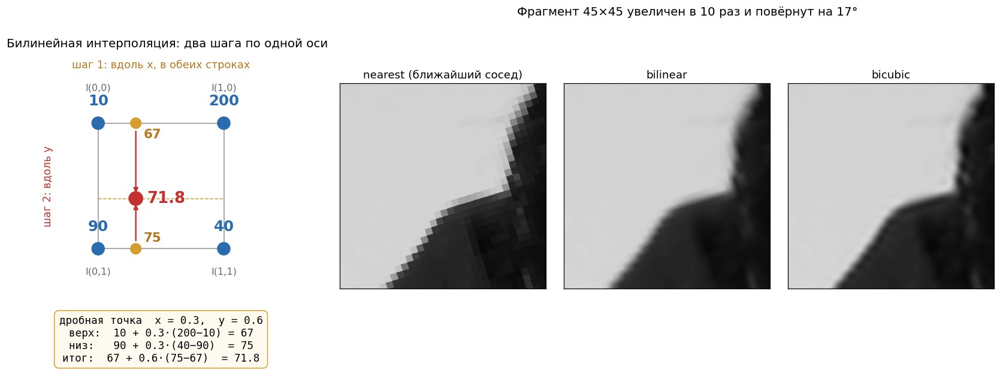
Слева — схема расчёта: квадрат с четырьмя узлами, в которых стоят значения $10$, $200$, $90$, $40$. Жёлтым отмечен шаг 1 — интерполяция вдоль оси $x$ в верхней и нижней строках, дающая промежуточные значения $67$ и $75$; красной стрелкой сверху вниз показан шаг 2 — интерполяция этих двух чисел вдоль оси $y$, дающая итоговые $71.8$ в точке $x = 0.3$, $y = 0.6$. Вся арифметика выписана в жёлтой рамке под схемой. Справа — три панели: один и тот же фрагмент $45\times45$ пикселей, увеличенный в десять раз и повёрнутый на $17^\circ$ методами nearest, bilinear и bicubic. У nearest граница между светлым фоном и тёмным силуэтом распадается на видимую лестницу из квадратных ступеней; bilinear даёт гладкий, но слегка размытый переход; bicubic — такой же гладкий, но заметно более контрастный на самой кромке. Композиция и центр поворота
Матрицы не коммутируют: $S \cdot R \ne R \cdot S$.
Возьмём поворот на $90^\circ$ и неравномерный масштаб $s_x = 2$, $s_y = 1$.
\[ R_{90} = \begin{bmatrix}0&-1\\1&0\end{bmatrix}, \qquad S = \begin{bmatrix}2&0\\0&1\end{bmatrix} \]
\[ S\,R_{90} = \begin{bmatrix}0&-2\\1&0\end{bmatrix}, \qquad R_{90}\,S = \begin{bmatrix}0&-1\\2&0\end{bmatrix} \]
Матрицы разные. Геометрически: «сначала повернуть, потом растянуть по горизонтали» и «сначала растянуть, потом повернуть» дают разные картинки — в первом случае растягивается уже повёрнутый объект, во втором поворачивается уже растянутый.
Соглашение о порядке: при записи $p' = A_2 A_1 p$ первым применяется правый множитель $A_1$. Читать цепочку матриц надо справа налево.
Исключения, где порядок всё же неважен: два поворота между собой, два равномерных масштаба, два переноса. Но поворот с неравномерным масштабом или с переносом — не коммутируют.
Матрица $R_\theta$ вращает вокруг начала координат, а начало координат изображения — это его левый верхний угол. Поэтому наивное применение $R_{30}$ к картинке $512\times512$ не «повернёт её на месте», а увезёт большую часть за границы кадра.
Чтобы вращать вокруг произвольной точки $c = (c_x, c_y)$, нужна композиция из трёх преобразований:
\[A = T(c) \cdot R_\theta \cdot T(-c)\]
Читаем справа налево: перенести центр вращения в начало координат, повернуть, вернуть обратно. Развёрнуто:
\[ A = \begin{bmatrix} \cos\theta & -\sin\theta & c_x(1-\cos\theta) + c_y\sin\theta\\ \sin\theta & \cos\theta & c_y(1-\cos\theta) - c_x\sin\theta\\ 0&0&1 \end{bmatrix} \]
В OpenCV это делает
cv2.getRotationMatrix2D(center, angle, scale). Обратите внимание, что там же можно задать масштаб — и он применяется относительно того же центра.Тот же приём работает для любого преобразования, которое нужно выполнить относительно точки: масштабирование от центра кадра, скос относительно середины и так далее. Схема всегда одна: $T(c) \cdot X \cdot T(-c)$.
Отдельная деталь при повороте: повёрнутый прямоугольник не влезает в исходный кадр. Либо углы обрезаются (
cv2.warpAffineс прежним размером), либо надо считать габариты нового bounding box и дописывать в матрицу дополнительный перенос.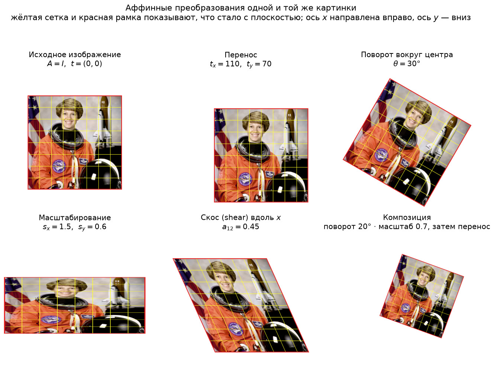
Шесть панелей — одно и то же изображение под разными $A$ и $t$. Жёлтая сетка с шагом $64$ пикселя и красная рамка показывают, что происходит с плоскостью. При переносе $t=(110, 70)$ картинка целиком уезжает вправо и вниз, форма не меняется. При повороте на $30^\circ$ сетка наклоняется, но остаётся сеткой из параллельных прямых. При масштабировании $s_x=1.5$, $s_y=0.6$ квадраты сетки становятся широкими и низкими прямоугольниками. При скосе $a_{12}=0.45$ они превращаются в параллелограммы: нижние строки смещаются вправо сильнее верхних, потому что ось $y$ направлена вниз. Последняя панель — композиция поворота, масштаба и переноса, то есть произведение трёх матриц в однородных координатах. Во всех случаях параллельные прямые остались параллельными — это и есть определяющее свойство аффинного преобразования. - Считать, что порядок композиции не важен. $S \cdot R \ne R \cdot S$ при неравномерном масштабе, $T \cdot R \ne R \cdot T$ при ненулевом переносе и ненулевом угле поворота. Записывайте цепочку явно и помните, что применяется она справа налево.
- Забыть про центр поворота. $R_\theta$ вращает вокруг левого верхнего угла кадра. Без сэндвича $T(c)\,R_\theta\,T(-c)$ изображение уезжает за границы, и первая мысль «поворот сломался» оказывается неверной — сломался центр.
- Реализовывать прямой варпинг. Обход пикселей исходного изображения с записью в результат даёт дыры при увеличении и коллизии при уменьшении. Всегда идите от выходного пикселя к входному через $A^{-1}$ и интерполируйте. Симптом ошибки — регулярная сетка чёрных точек на увеличенном изображении.
- Интерполировать маски билинейно. Метки классов — категориальные значения, среднее между «$3$» и «$7$» не имеет смысла и породит несуществующий класс $5$ на границах объектов. Для масок и карт меток только
nearest. Для one-hot представления и для карт вероятностей билинейная интерполяция допустима. - Путать аффинное с гомографией. Аффинное имеет $6$ степеней свободы и сохраняет параллельность; гомография — $8$ и параллельность не сохраняет. Если вы пытаетесь распрямить сфотографированный под углом лист бумаги аффинным преобразованием, у вас ничего не выйдет: там нужна перспектива, то есть гомография по четырём точкам. Обратная ошибка тоже встречается: оценивать гомографию там, где хватило бы аффинного, — это две лишние степени свободы, которые на шумных данных дают неустойчивое решение.
- Не проверять вырожденность. Три коллинеарные точки не задают аффинное преобразование. Если $\det\begin{bmatrix}a_{11}&a_{12}\\a_{21}&a_{22}\end{bmatrix} = 0$, преобразование схлопывает плоскость в прямую и необратимо — обратного варпинга не существует.
- Аугментация данных — главное применение аффинных преобразований в современном ML.
RandomAffine,RandomRotation,RandomResizedCrop, флипы — всё это аффинные матрицы, применяемые к каждому батчу на лету. - Задачи компьютерного зрения — там разобрано, какие аугментации применимы к какой задаче и что при этом нужно сделать с разметкой: для классификации достаточно преобразовать картинку, для детекции нужно пересчитать координаты рамок, для сегментации — применить то же преобразование к маске, но обязательно с
nearest. - Гомография — следующий шаг иерархии: $8$ степеней свободы вместо $6$, добавляется перспектива, минимум четыре пары точек вместо трёх.
- Слои сети. Spatial Transformer Network — это буквально обучаемая аффинная матрица внутри сети: модуль предсказывает шесть параметров и применяет их к карте признаков.
grid_sampleв PyTorch реализует ровно обратный варпинг с билинейной интерполяцией, причём дифференцируемый.
Что такое аффинное преобразование и что оно сохраняет?
Линейное преобразование плоскости плюс перенос; в однородных координатах — матрица $3\times3$ с нижней строкой $(0,0,1)$. Сохраняет прямые как прямые, параллельность прямых, отношения длин вдоль одной прямой и середину отрезка. Углы и абсолютные длины в общем случае не сохраняет. Частные случаи — перенос, поворот, масштаб, скос и любые их композиции.
Сколько степеней свободы и сколько пар точек нужно для оценки?
Шесть параметров, каждая пара соответствующих точек даёт два уравнения, значит нужно минимум три пары, не лежащие на одной прямой. Геометрически: аффинное преобразование однозначно задаётся тем, куда переходят вершины одного треугольника. При большем числе пар система переопределена и решается МНК, причём задача линейна по неизвестным и распадается на две независимые системы с одинаковой матрицей.
Почему варпинг делают обратным, а не прямым?
При прямом обходе координаты записи получаются дробными: после округления при увеличении между пикселями остаются незаполненные дыры, а при уменьшении несколько пикселей конкурируют за одну ячейку. При обратном обходе дробным оказывается адрес чтения, а это штатная ситуация — значение восстанавливается интерполяцией. Каждый выходной пиксель заполняется ровно один раз, дыр не возникает по построению.
Как работает билинейная интерполяция?
Два линейных шага по разным осям. Для четырёх соседей $10, 200$ (верхняя строка) и $90, 40$ (нижняя) в точке $x = 0.3$, $y = 0.6$: сначала вдоль $x$ получаем $10 + 0.3(200-10) = 67$ и $90 + 0.3(40-90) = 75$, затем вдоль $y$ получаем $67 + 0.6(75-67) = 71.8$. Порядок осей не влияет на результат. Веса четырёх соседей в сумме дают единицу, поэтому результат всегда лежит между минимумом и максимумом соседей — у бикубической интерполяции этого свойства нет.
Какую интерполяцию когда брать?
Nearest — для масок сегментации и карт меток, потому что значения категориальные и усреднять их нельзя. Bilinear — стандарт для яркостных изображений: гладко и дёшево. Bicubic и Lanczos — при сильном увеличении, когда важна резкость; они дают перелёты за границы диапазона, поэтому после них нужен клиппинг.
Чем аффинное преобразование отличается от гомографии?
У аффинного нижняя строка матрицы равна $(0,0,1)$, у гомографии там два свободных коэффициента — итого $6$ степеней свободы против $8$, три пары точек против четырёх. Практическое следствие: аффинное не умеет перспективу и всегда сохраняет параллельность, поэтому им нельзя распрямить снятый под углом документ или описать сходящиеся к горизонту рельсы. С другой стороны, оценивать восемь параметров там, где достаточно шести, — значит получить менее устойчивое решение на шумных данных.
-
Гомография и проективные преобразования
Гомография (проективное преобразование, плоская проекция) — обратимое отображение плоскости в плоскость, записываемое матрицей $3 \times 3$ в однородных координатах:
\[\tilde{x}' \sim H \tilde{x}, \qquad \begin{pmatrix} x' \\ y' \\ w' \end{pmatrix} = \begin{pmatrix} h_{11} & h_{12} & h_{13} \\ h_{21} & h_{22} & h_{23} \\ h_{31} & h_{32} & h_{33} \end{pmatrix} \begin{pmatrix} x \\ y \\ 1 \end{pmatrix}\]
Знак $\sim$ означает «с точностью до масштаба»: $H$ и $\lambda H$ задают одно и то же преобразование. Обычные (неоднородные) координаты получаются делением на третью компоненту:
\[x'_{\text{пикс}} = \frac{h_{11}x + h_{12}y + h_{13}}{h_{31}x + h_{32}y + h_{33}}, \qquad y'_{\text{пикс}} = \frac{h_{21}x + h_{22}y + h_{23}}{h_{31}x + h_{32}y + h_{33}}\]
Именно это деление и делает преобразование нелинейным в обычных координатах — и именно оно порождает перспективу.
Точка плоскости $(x, y)$ записывается тройкой $(x, y, 1)$, и все тройки $(\lambda x, \lambda y, \lambda)$ при $\lambda \ne 0$ считаются той же точкой. Зачем это нужно:
- Сдвиг становится линейным. В обычных координатах $x' = x + t$ — не линейная операция и матрицей $2\times2$ не выражается. В однородных — обычное умножение на матрицу.
- Появляются точки на бесконечности. Тройка $(x, y, 0)$ — законная точка проективной плоскости, «направление». Именно в такую точку сходятся параллельные прямые на перспективном снимке: точка схода — это образ бесконечно удалённой точки.
- Композиция преобразований — просто произведение матриц.
Преобразование DOF Матрица Что сохраняет Сдвиг 2 $\begin{pmatrix} I & t \\ 0 & 1\end{pmatrix}$ всё, кроме положения Евклидово (сдвиг + поворот) 3 $\begin{pmatrix} R & t \\ 0 & 1\end{pmatrix}$ длины, углы, площади Подобие (+ масштаб) 4 $\begin{pmatrix} sR & t \\ 0 & 1\end{pmatrix}$ углы, отношения длин Аффинное 6 $\begin{pmatrix} A & t \\ 0 & 1\end{pmatrix}$ параллельность, отношения длин на прямой Проективное 8 произвольная $3\times3$ прямолинейность, двойное отношение Откуда 8, а не 9. В матрице девять элементов, но она задана с точностью до общего множителя ($H$ и $2H$ дают одно и то же отображение). Один параметр «съедается» этой неопределённостью — остаётся 8 степеней свободы. Фиксируют её обычно условием $h_{33} = 1$ или $\|H\|_F = 1$.
Что гомография ломает по сравнению с аффинным. Аффинное сохраняет параллельность, потому что у него нижняя строка $(0, 0, 1)$: знаменатель постоянен, деления фактически нет. У гомографии $h_{31}, h_{32} \ne 0$, знаменатель меняется по кадру — и параллельные прямые начинают сходиться. При этом прямые остаются прямыми (это общее свойство всех проективных преобразований), а вот отношения длин уже не сохраняются: сохраняется лишь более тонкий инвариант — двойное отношение четырёх точек на прямой.
Одна и та же сетка под двумя матрицами $3\times3$. У аффинной последняя строка $(0,0,1)$: параллельные линии остаются параллельными. У гомографии $h_{31}, h_{32}\ne 0$: параллельные сходятся, как рельсы в перспективе. Четыре пары точек дают 8 уравнений на 8 неизвестных. Когда гомография применима
Гомография связывает два изображения точно только в двух ситуациях:
1. Плоская сцена. Все точки сцены лежат в одной плоскости $\Pi$. Тогда для любых двух положений камеры существует $H$, точно связывающая изображения. Примеры: лист бумаги, экран, разметка на асфальте, фасад здания, стол сверху.
Почему так: проекция точки плоскости на снимок — это гомография между $\Pi$ и плоскостью изображения. Композиция «$\Pi \to$ снимок 1» с обратной «снимок 2 $\to \Pi$» — тоже гомография.
2. Чистое вращение камеры. Камера крутится вокруг своего оптического центра, не сдвигаясь — сцена может быть любой, хоть трёхмерной. Тогда $H = K_2 R K_1^{-1}$, где $R$ — поворот, $K_i$ — матрицы внутренних параметров.
Почему так: без сдвига центра луч, идущий в точку сцены, не меняется — меняется только система координат, в которой мы его записываем. Глубина точки полностью выпадает из формул.
Если сцена объёмная и камера сдвинулась, единой $H$ не существует. Причина — параллакс: близкие объекты при сдвиге камеры смещаются на снимке сильнее далёких, и это смещение зависит от глубины, которой в гомографии просто нет места (8 параметров на всю сцену).
Симптомы в панораме, которые стоит уметь узнавать:
- Двоение объектов переднего плана при идеально совпавшем фоне;
- разрывы прямых линий на шве между кадрами;
- RANSAC находит мало инлайеров, причём выбрасываемые точки систематически лежат на переднем плане, а не разбросаны случайно.
Практические лекарства: снимать панораму, вращая камеру вокруг оптического центра (для этого и нужна панорамная головка штатива); выбирать шов там, где нет переднего плана (seam carving по графу); переходить к полноценной модели с глубиной — эпиполярной геометрии и Structure from Motion.
Оценка гомографии
Каждое соответствие $(x, y) \leftrightarrow (x', y')$ даёт два уравнения (по одному на координату). Восемь неизвестных требуют минимум $8/2 = \mathbf{4}$ пары точек. Важное дополнительное условие: никакие три из четырёх точек не должны лежать на одной прямой, иначе система вырождается.
DLT (Direct Linear Transform). Из $\tilde{x}' \sim H\tilde{x}$ следует $\tilde{x}' \times (H\tilde{x}) = 0$ (векторное произведение параллельных векторов равно нулю). Раскрыв это, для каждой пары получаем две линейные строки относительно вектора $h \in \mathbb{R}^9$ из элементов $H$:
\[\begin{pmatrix} 0 & 0 & 0 & -x & -y & -1 & y'x & y'y & y' \\ x & y & 1 & 0 & 0 & 0 & -x'x & -x'y & -x' \end{pmatrix} h = 0\]
Собрав строки от всех пар в матрицу $A$, решаем $Ah = 0$ при $\|h\| = 1$. Решение — правый сингулярный вектор $A$, отвечающий наименьшему сингулярному числу (последний столбец $V$ в SVD). При четырёх точках система имеет единственное решение, при большем числе — решение по методу наименьших квадратов.
Если подставить в DLT сырые пиксельные координаты (порядка $10^3$), в матрице $A$ окажутся элементы порядка $1$ (свободные члены) рядом с элементами порядка $10^6$ (произведения $x'x$). Число обусловленности взлетает, и SVD выдаёт решение, чувствительное к шуму в третьем знаке.
Нормализация Хартли (1997) чинит это в три строки:
- Сдвинуть точки каждого изображения так, чтобы их центроид оказался в начале координат.
- Отмасштабировать так, чтобы среднее расстояние до начала стало $\sqrt{2}$.
- Решить DLT в нормализованных координатах, получив $\hat{H}$, и вернуться: $H = T_2^{-1} \hat{H} T_1$, где $T_i$ — матрицы нормализации.
Эффект драматический: точность оценки при том же уровне шума улучшается на порядок. Хартли называл это «неожиданно важным» шагом, который в ранних реализациях просто пропускали.
Что делать после DLT. DLT минимизирует алгебраическую ошибку $\|Ah\|$, которая не имеет геометрического смысла. Финальный шаг — нелинейная оптимизация репроекционной ошибки $\sum_i \|x_i' - H x_i\|^2$ (или её симметричной версии) методом Левенберга–Марквардта, стартуя с DLT-решения.
RANSAC
Соответствия, полученные матчингом дескрипторов, всегда содержат выбросы — от 20 % на хороших парах до 80 % на сложных. Метод наименьших квадратов от одного грубого выброса уезжает произвольно далеко, поэтому используется RANSAC (Random Sample Consensus):
- Случайно выбрать минимальную выборку из $s$ пар ($s = 4$ для гомографии).
- Построить по ней модель $H$.
- Посчитать консенсус: сколько всех пар согласуются с моделью, то есть репроекционная ошибка меньше порога $t$ (обычно 1–3 пикселя).
- Повторить $N$ раз, оставить модель с максимальным консенсусом.
- Переоценить $H$ по всем инлайерам методом наименьших квадратов — шаг, который часто забывают, а он заметно повышает точность.
Число итераций, гарантирующее с вероятностью $p$ хотя бы одну чистую выборку:
\[N = \frac{\log(1 - p)}{\log\big(1 - (1 - \varepsilon)^s\big)}\]
где $\varepsilon$ — доля выбросов, $s$ — размер минимальной выборки.
Вывод формулы: вероятность, что случайная выборка из $s$ элементов вся состоит из инлайеров, равна $(1-\varepsilon)^s$; вероятность, что она «грязная», равна $1 - (1-\varepsilon)^s$; что все $N$ выборок грязные — эта величина в степени $N$; приравниваем к $1 - p$ и логарифмируем.
Возьмём типичные значения: $s = 4$ (гомография), $\varepsilon = 0.5$ (половина соответствий — выбросы), $p = 0.99$.
\[(1 - \varepsilon)^s = 0.5^4 = 0.0625\] \[N = \frac{\log(0.01)}{\log(1 - 0.0625)} = \frac{-4.6052}{-0.06454} = 71.36 \approx \mathbf{72}\ \text{итерации}\]
Семьдесят две итерации — это буквально миллисекунды. Обратите внимание: $N$ всегда округляется вверх — 71.36 итерации не бывает, а округление вниз ломает гарантию $p = 0.99$.
Отсюда главный практический вывод: RANSAC дёшев, пока минимальная выборка мала. Посмотрите, как $N$ взрывается при росте $s$ (те же $\varepsilon = 0.5$, $p = 0.99$):
$s$ 2 (прямая) 4 (гомография) 7 (фундаментальная матрица) 8 (F по 8 точкам) $N$ 17 72 588 1177 И при росте доли выбросов при $s = 4$:
$\varepsilon$ 0.2 0.5 0.7 0.8 $N$ 9 72 567 2876 Именно поэтому ratio-test и cross-check важны не только сами по себе: снижая $\varepsilon$ с 0.7 до 0.5, они ускоряют RANSAC почти в восемь раз.
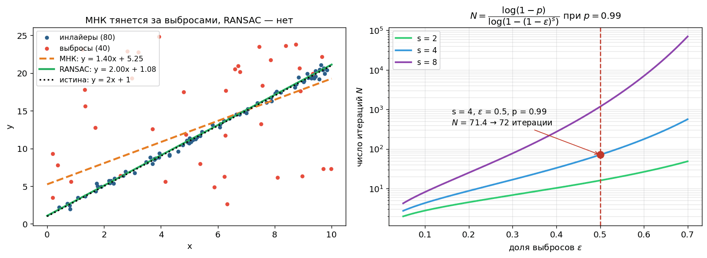
Слева: 80 точек, лежащих около прямой y = 2x + 1 с шумом СКО 0.35 (синие), и 40 равномерно разбросанных выбросов (красные), то есть доля выбросов 33 процента. Оранжевая штриховая линия — метод наименьших квадратов по всем точкам: он дал y = 1.40x + 5.25, то есть уехал и по наклону, и по свободному члену. Зелёная сплошная — RANSAC с порогом 1.0: y = 2.00x + 1.08, практически совпадает с чёрной пунктирной истиной. RANSAC отобрал 89 инлайеров, из которых 80 настоящих и 9 случайно попавших близко к прямой выбросов. Справа: число итераций N по формуле log(1−p)/log(1−(1−ε)^s) при p = 0.99, логарифмическая вертикальная ось. Три кривые — размеры минимальной выборки s = 2, 4 и 8. Красная точка отмечает разобранный случай s = 4, ε = 0.5: N = 71.4, то есть 72 итерации. Видно, что рост s дороже роста ε: при ε = 0.5 переход от s = 4 к s = 8 умножает N на 16. Классическое применение гомографии, которое стоит уметь рассказать целиком:
- Найти четырёхугольник листа на снимке: Канни → поиск контуров → выбор контура наибольшей площади → аппроксимация полигоном (
approxPolyDP) → проверка, что вершин ровно 4 и фигура выпуклая. - Упорядочить вершины (левая-верхняя, правая-верхняя, правая-нижняя, левая-нижняя) — обычно по сумме и разности координат.
- Задать целевой прямоугольник нужного размера, например $A4$ в пропорции $1 : \sqrt{2}$.
- Оценить $H$ по этим четырём парам (здесь RANSAC не нужен — точек ровно 4 и они точные) и применить
warpPerspective.
from skimage import transform src = corners_found # 4 вершины листа на снимке, (x, y) dst = [[0, 0], [W, 0], [W, H], [0, H]] t = transform.ProjectiveTransform.from_estimate(src, dst) flat = transform.warp(img, t.inverse, output_shape=(H, W))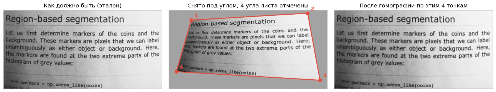
Слева эталон — как страница выглядела бы при съёмке строго перпендикулярно. В центре тот же лист, снятый под углом: строки текста сходятся вправо, прямоугольник листа превратился в неправильный четырёхугольник, четыре его угла отмечены красными точками с номерами 1–4. Справа результат применения гомографии, оценённой по этим четырём парам точек: строки снова параллельны и горизонтальны, а картинка практически совпадает с эталоном слева. Четырёх точек здесь достаточно и RANSAC не нужен, потому что соответствия заданы точно, а не найдены матчингом. - Применять гомографию к объёмной сцене со сдвигом камеры. Единой $H$ там не существует; получите двоение переднего плана. Гомография корректна только для плоской сцены или чистого вращения камеры.
- Забывать деление на третью координату. Без него преобразование вырождается в аффинное, и вся перспектива исчезает.
- Пропускать нормализацию Хартли. DLT на сырых пиксельных координатах численно плох; нормализация улучшает точность на порядок при том же коде.
- Считать, что гомография — 9 параметров. Их 8: матрица определена с точностью до масштаба.
- Брать четыре точки, три из которых почти на одной прямой. Система вырождается, $H$ получается неустойчивой. В RANSAC стоит явно отбрасывать такие выборки.
- Не переоценивать модель по инлайерам после RANSAC. Итоговая $H$, построенная всего по четырём точкам лучшей выборки, заметно хуже, чем оценённая по всем инлайерам методом наименьших квадратов.
- Путать порог RANSAC с порогом ratio-test. Первый в пикселях и проверяет геометрию, второй безразмерный и проверяет различимость дескрипторов.
Что такое гомография и почему у неё 8 степеней свободы?
Это обратимое отображение плоскости в плоскость, задаваемое матрицей 3×3 в однородных координатах: $x' \sim Hx$ с последующим делением на третью компоненту. Элементов девять, но матрица определена с точностью до общего множителя, поэтому независимых параметров восемь. Фиксируют неопределённость условием $h_{33} = 1$ либо единичной нормой матрицы.
В каких двух случаях гомография точно связывает два снимка?
Первый — сцена плоская, тогда любые два вида этой плоскости связаны гомографией. Второй — камера вращается вокруг своего оптического центра без сдвига, тогда сцена может быть произвольной трёхмерной, а $H = K_2 R K_1^{-1}$, потому что глубина точки выпадает из формул.
Что такое параллакс и как он проявляется в панораме?
Это зависимость смещения точки на снимке от её глубины при сдвиге камеры. Гомография глубину не описывает, поэтому при объёмной сцене и сдвинутой камере единой матрицы не существует. Симптомы: двоение объектов переднего плана при совпавшем фоне, разрывы прямых на шве, малое число инлайеров RANSAC с систематическим отсевом точек переднего плана.
Почему для оценки гомографии нужно минимум четыре точки и как работает DLT?
Каждое соответствие даёт два линейных уравнения, восемь неизвестных требуют четырёх пар. DLT переписывает $x' \sim Hx$ как $x' \times (Hx) = 0$, собирает по две строки на пару в матрицу $A$ и решает $Ah = 0$ при единичной норме — решением служит правый сингулярный вектор $A$ при наименьшем сингулярном числе. Требование: никакие три из четырёх точек не лежат на одной прямой.
Зачем нужна нормализация Хартли?
В сырых пиксельных координатах элементы матрицы $A$ различаются на шесть порядков, число обусловленности огромно, и решение SVD чувствительно к шуму. Нормализация сдвигает центроид точек в начало координат и масштабирует так, чтобы среднее расстояние до начала было корень из двух. Это улучшает точность оценки примерно на порядок.
Как оценить нужное число итераций RANSAC и сколько их нужно для гомографии при половине выбросов?
$N = \log(1-p)/\log(1-(1-\varepsilon)^s)$. Для $s = 4$, $\varepsilon = 0.5$, $p = 0.99$: $(1-\varepsilon)^s = 0.0625$, $N = \log(0.01)/\log(0.9375) = 71.4$, то есть 72 итерации. Число итераций растёт экспоненциально по размеру минимальной выборки, поэтому предварительная фильтрация соответствий ratio-test окупается многократно.
-
Matching, stitching изображений
Matching — поиск соответствующих точек между двумя или более изображениями: какая точка на кадре A и какая точка на кадре B изображают одну и ту же точку сцены.
Stitching — сшивание нескольких кадров в единую панораму или карту сцены на основе найденных соответствий и оценённой по ним геометрии.
Эти техники лежат в основе построения панорам, 3D-реконструкции, SLAM, видеомозаики и совмещения снимков (медицинских, спутниковых, микроскопических).
Типичный пайплайн image matching + stitching состоит из следующих шагов.
Детектирование и описание ключевых точек. Здесь работают три разные роли, которые полезно не путать:
- детектор — находит, где на изображении лежат повторяемые точки (углы, пятна);
- дескриптор — описывает окрестность каждой такой точки вектором чисел;
- матчер — сопоставляет дескрипторы двух кадров между собой.
Конкретные алгоритмы (SIFT, ORB, AKAZE, нейросетевые SuperPoint и LoFTR), устройство масштабного пространства, ratio-test Лоу и сравнение по инвариантности разобраны в отдельном вопросе — Ключевые точки и дескрипторы: SIFT и ORB.
В результате получаем: \[\text{Feature set } F = \{(x_i, f_i)\}, \quad f_i \in \mathbb{R}^d\] где $x_i$ — координаты ключевой точки, $f_i$ — её дескриптор.
Поиск соответствий (matching). Для каждой точки $f_i$ из изображения A ищем ближайшую по метрике (например, $L_2$) в изображении B: \[j^* = \arg\min_j \| f_i^A - f_j^B \|\] Ненадёжные пары отсеиваются ratio-test Лоу и взаимной проверкой (cross-check). Инструменты: BFMatcher (brute-force), FLANN (быстрый приближённый поиск ближайших соседей).
Оценка геометрического преобразования. Для пар соответствий $(x_i^A, x_j^B)$ оценивается матрица преобразования:
- для плоских сцен и чистого вращения камеры — гомография $H$;
- для 3D-движения камеры — фундаментальная или эссенциальная матрица.
Оценка ведётся через RANSAC, чтобы отбросить выбросы: \[x' \sim Hx, \quad H \text{ — } 3\times3, \; x, x' \text{ в однородных координатах.}\]
Warping и сшивание. Одно изображение переводится в систему координат другого обратным варпингом: \[I'(x, y) = I\big(H^{-1}[x, y, 1]^{\top}\big)\] Затем идут выравнивание экспозиции, поиск шва и блендинг — им посвящены отдельные разделы ниже.
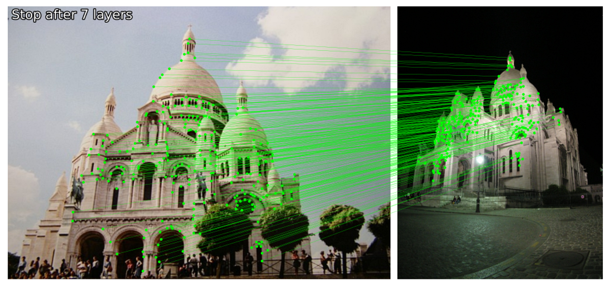
Два кадра базилики Сакре-Кёр рядом: слева дневной снимок с облачным небом, справа тот же ракурс ночью, где здание подсвечено прожекторами, а небо чёрное. Зелёные точки — найденные ключевые точки, зелёные линии — сопоставленные пары, соединяющие левый кадр с правым. Линии идут плотным пучком и почти параллельны друг другу — это признак корректного матчинга: все они описывают одно и то же смещение. Обратите внимание, что точки сосредоточены на архитектурных деталях (купола, арки, окна) и почти отсутствуют на небе и на гладкой мостовой: там локальная окрестность неотличима от соседних, и повторяемых точек нет. Сам факт, что дневной и ночной кадры удалось сопоставить, показывает устойчивость дескрипторов к радикальной смене освещения. 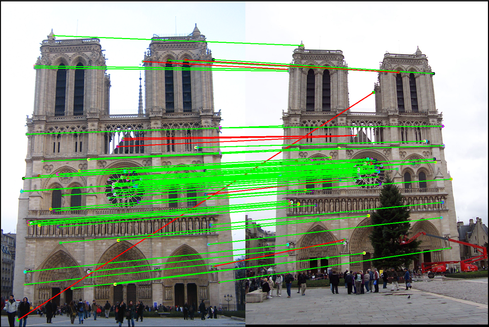
Два снимка западного фасада Нотр-Дама, снятые с разных точек. Цветные точки — ключевые точки, линии — сопоставленные пары: зелёным показаны верные соответствия, красным — ошибочные. Зелёных линий большинство, и они образуют регулярный, почти параллельный пучок. Красные линии выделяются тем, что идут под резко другими углами и пересекают кадр по диагонали: они связали, например, левую башню на одном снимке с правой на другом. Причина ровно та, о которой идёт речь ниже, — фасад симметричен и полон повторяющихся элементов, и дескриптор одного окна практически неотличим от дескриптора соседнего. Ratio-test такие пары не отсеивает, потому что ближайший кандидат оказывается уверенно ближе второго; отбрасывает их уже RANSAC, потому что они не согласуются с единой геометрической моделью. RANSAC: сколько итераций нужно
Ratio-test работает в пространстве дескрипторов и отсеивает неоднозначные пары. Но пары, где неправильный кандидат оказался уверенно ближайшим (повторяющаяся текстура, симметричный фасад, движущиеся объекты), он пропускает. Их отсеивает RANSAC, работающий уже в пространстве координат.
Схема: многократно взять случайную минимальную выборку из $s$ пар, построить по ней модель, посчитать, сколько остальных пар с ней согласуется (инлайеры), и оставить модель с наибольшим числом инлайеров.
Сколько итераций нужно? Пусть $\varepsilon$ — доля выбросов, $s$ — размер минимальной выборки, $p$ — желаемая вероятность того, что хотя бы одна выборка окажется полностью чистой.
Вероятность, что конкретная выборка целиком состоит из инлайеров, равна $(1-\varepsilon)^s$. Вероятность, что за $N$ независимых попыток ни одна выборка не оказалась чистой, равна $\big(1 - (1-\varepsilon)^s\big)^N$. Приравнивая её к $1 - p$ и логарифмируя:
\[N = \frac{\log(1 - p)}{\log\!\big(1 - (1-\varepsilon)^s\big)}\]
Расчёт для гомографии. Минимальная выборка $s = 4$ (гомография имеет $8$ степеней свободы, каждая пара даёт два уравнения). Пусть половина соответствий ошибочна, $\varepsilon = 0.5$, и мы хотим $p = 0.99$.
\[(1 - 0.5)^4 = 0.0625\] \[N = \frac{\log(0.01)}{\log(1 - 0.0625)} = \frac{-4.605}{-0.0645} \approx 71.4 \;\to\; \mathbf{72\ итерации}\]
Всего $72$ итерации при половине мусора в данных — вот почему RANSAC так дёшев и так популярен.
Как параметры влияют на $N$:
$\varepsilon$ $s = 3$ (аффинное) $s = 4$ (гомография) $s = 8$ (фундаментальная) $0.2$ $7$ $9$ $26$ $0.5$ $35$ $72$ $1177$ $0.7$ $169$ $567$ $70\,188$ Два вывода, которые стоит запомнить:
- Рост $s$ обходится дороже, чем рост $\varepsilon$. При $\varepsilon = 0.5$ переход от $s = 4$ к $s = 8$ умножает $N$ в $16$ раз. Поэтому всегда стоит оценивать простейшую модель, которой достаточно: аффинное вместо гомографии, если перспективы нет.
- $N$ растёт экспоненциально по $s$ и очень быстро по $\varepsilon$. При $\varepsilon = 0.7$ и $s = 8$ нужно уже свыше семидесяти тысяч итераций — базовый RANSAC становится непрактичным, и переходят к его вариантам: PROSAC (сортирует пары по качеству матча и пробует лучшие первыми), LO-RANSAC (локальная оптимизация лучшей модели), MAGSAC++ (не требует явного порога инлайера).
Порог инлайера — второй параметр, о котором забывают. Пара считается инлайером, если ошибка репроекции $\|x' - Hx\|$ меньше порога, обычно $1$–$3$ пикселя. Слишком строгий порог отсеет хорошие точки и оставит RANSAC без опоры, слишком мягкий — впустит выбросы в финальное уточнение.
Финальный шаг. RANSAC даёт модель по минимальной выборке — она грубая. После того как множество инлайеров определено, модель пересчитывают по всем инлайерам методом наименьших квадратов, а лучше — минимизацией нелинейной ошибки репроекции (алгоритм Левенберга–Марквардта). Пропустить этот шаг — значит потерять большую часть точности.
От двух кадров к панораме
Сшить два кадра просто: оценил $H_{12}$ и склеил. С панорамой из десяти кадров возникает новая проблема.
Наивный подход — сшивать последовательно: $H_{12}$, затем $H_{23}$, затем $H_{34}$ и так далее, а положение $k$-го кадра получать перемножением цепочки. Каждая оценка содержит небольшую ошибку, и при перемножении ошибки накапливаются. К концу панорамы смещение достигает десятков пикселей. Если панорама круговая ($360^\circ$), последний кадр не сойдётся с первым — возникает видимый разрыв, который называется ошибкой замыкания петли (loop closure error).
Bundle adjustment решает эту задачу глобально. Вместо цепочки попарных оценок вводится общая система: у каждого кадра $i$ свои параметры $\theta_i$ (для панорамы — три угла поворота и фокусное расстояние, то есть $4$ параметра на кадр), и минимизируется суммарная ошибка репроекции по всем парам сразу:
\[\min_{\{\theta_i\}} \sum_{i}\sum_{j \in \text{соседи}(i)} \sum_{k \in \text{пары}(i,j)} \rho\Big(\big\|\,x_k^{(i)} - \pi\big(\theta_i, \theta_j, x_k^{(j)}\big)\big\|\Big)\]
где $\pi$ — проекция точки из кадра $j$ в кадр $i$, а $\rho$ — робастная функция потерь (Хубера или Коши), чтобы оставшиеся выбросы не портили решение.
Ключевые детали:
- Оптимизация нелинейная, решается Левенбергом–Марквардтом от начального приближения, полученного попарной сшивкой.
- Матрица системы разреженная: кадр связан только с теми кадрами, с которыми у него есть перекрытие. Это позволяет решать задачи с тысячами кадров (пакеты Ceres, g2o, GTSAM).
- Ошибка замыкания петли распределяется равномерно по всем кадрам вместо того, чтобы накопиться в одном стыке.
- В полноценной 3D-реконструкции (Structure from Motion) вместе с параметрами камер оптимизируются и координаты 3D-точек — отсюда и название: «подгонка пучка» лучей, сходящихся в каждой точке сцены.
В OpenCV bundle adjustment встроен в
cv2.Stitcherи реализован классамиdetail::BundleAdjusterRayиdetail::BundleAdjusterReproj.У гомографии есть фундаментальное ограничение при построении широких панорам. Гомография соответствует проекции на плоскость, а плоскость видна из центра проекции под углом строго меньше $180^\circ$. Формально: точка, лежащая под углом $\theta$ от оптической оси, проецируется на расстояние $f\tan\theta$ от центра — и $\tan\theta \to \infty$ при $\theta \to 90^\circ$.
Практическое следствие: при поле зрения около $120^\circ$ края панорамы растягиваются в несколько раз, а при $180^\circ$ панорама становится бесконечной. Плоская панорама шире $\sim 120^\circ$ бессмысленна.
Решение — проецировать не на плоскость, а на цилиндр или сферу.
Цилиндрическая проекция. Точка луча с углами $(\theta, h)$ отображается в
\[u = f\,\theta, \qquad v = f\,\frac{y}{\sqrt{x^2 + z^2}}\]
Горизонталь становится линейной по углу, поэтому панорама может охватывать полные $360^\circ$ и замыкаться в кольцо. Вертикаль остаётся плоской проекцией, так что по высоте ограничение сохраняется. Прямые линии, не параллельные оси цилиндра, искривляются — это цена.
Важное свойство: на цилиндре чистое вращение камеры вокруг вертикальной оси превращается в простой сдвиг. Это резко упрощает выравнивание: вместо оценки гомографии с восемью параметрами достаточно найти двумерный сдвиг.
Сферическая (равнопрямоугольная) проекция.
\[u = f\,\theta, \qquad v = f\,\phi\]
где $\theta$ — азимут, $\phi$ — угол места. Покрывает всю сферу $360^\circ \times 180^\circ$, это стандартный формат панорам VR и Street View. Искажения по полюсам сильные (тот же эффект, что на карте Меркатора), но зато вращение камеры в любую сторону — снова сдвиг.
Практическое правило:
Поле зрения Проекция до $\sim 60^\circ$ плоская (гомография), искажений почти нет $60$–$120^\circ$ цилиндрическая шире $120^\circ$ или с наклоном сферическая Ключевая оговорка: чтобы перейти в цилиндр или на сферу, нужно знать фокусное расстояние $f$ в пикселях. Его берут из EXIF (по фокусному расстоянию и размеру матрицы), из калибровки камеры или оценивают из самих гомографий в процессе bundle adjustment.
Швы и блендинг
После того как все кадры приведены в общую систему координат, остаётся сделать так, чтобы стык был незаметен. Задач три, и решаются они по-разному.
1. Компенсация экспозиции (exposure compensation). Камера меняет выдержку и баланс белого между кадрами, поэтому одна и та же стена на соседних кадрах имеет разную яркость. Если ничего не делать, панорама получается полосатой.
Простейшая модель — по одному коэффициенту усиления $g_i$ на кадр. Их подбирают так, чтобы в зонах перекрытия яркости совпадали:
\[\min_{\{g_i\}} \sum_{i,j} N_{ij}\left(g_i \bar{I}_{ij} - g_j \bar{I}_{ji}\right)^2 + \lambda\sum_i (g_i - 1)^2\]
где $\bar{I}_{ij}$ — средняя яркость кадра $i$ в зоне его перекрытия с кадром $j$, $N_{ij}$ — число пикселей перекрытия, а второе слагаемое не даёт всем коэффициентам уехать в ноль (задача без него определена только с точностью до общего множителя). Более сложные варианты подбирают блочную карту усиления или полноценную кривую отклика камеры.
2. Поиск шва (seam finding). Где именно провести границу между кадрами в зоне перекрытия? Наивный ответ — по середине — плох: шов может пройти прямо через лицо человека или через движущийся автомобиль, который на двух кадрах находится в разных местах, и тогда он окажется разрезан пополам или продублирован.
Правильная постановка — искать путь минимальной энергии, где энергия равна разнице между двумя кадрами:
\[E(\text{шов}) = \sum_{p \in \text{шов}} \big\| I_1(p) - I_2(p) \big\|\]
Шов должен проходить там, где кадры и так похожи: по однородному небу, по стене, вдоль ровного асфальта — и обходить всё, что различается. Задача решается динамическим программированием (для вертикального шва, как в seam carving) или разрезом графа (graph cut) для произвольной формы. В OpenCV это
detail::GraphCutSeamFinder.Побочная польза: правильно найденный шов частично решает проблему движущихся объектов — он их просто обходит.
3. Multiband blending. Даже с выровненной экспозицией и хорошим швом остаётся стык. Два очевидных варианта плохи:
- Резкая склейка оставляет видимую линию из-за остаточной разницы яркости.
- Линейное растворение (alpha blending) с широкой зоной перехода убирает линию, но двоит детали: если выравнивание неидеально на пару пикселей, текстура в зоне перехода расплывается.
Наблюдение, разрешающее противоречие: разным частотам нужна разная ширина перехода. Низкие частоты (общая яркость) надо смешивать широко, чтобы не было видно перепада. Высокие частоты (детали, текстура) — узко, буквально на несколько пикселей, чтобы не двоились.
Алгоритм (Burt & Adelson, 1983):
- Построить лапласовы пирамиды обоих изображений — разложение по полосам частот.
- Построить гауссову пирамиду маски шва.
- На каждом уровне $k$ смешать: $L^{\text{res}}_k = M_k L^{(1)}_k + (1 - M_k) L^{(2)}_k$. Поскольку и маска, и изображение на уровне $k$ имеют разрешение, уменьшенное в $2^k$ раз, ширина перехода в пикселях исходного изображения автоматически оказывается пропорциональна $2^k$ — то есть широкой для низких частот и узкой для высоких.
- Собрать результат обратным ходом пирамиды.
Именно multiband blending делает панорамы из телефона визуально бесшовными. Альтернатива — Poisson blending: решать уравнение Пуассона, требуя, чтобы градиенты результата совпадали с градиентами источников, а на границе значения были непрерывны. Качество сопоставимо, стоимость выше.
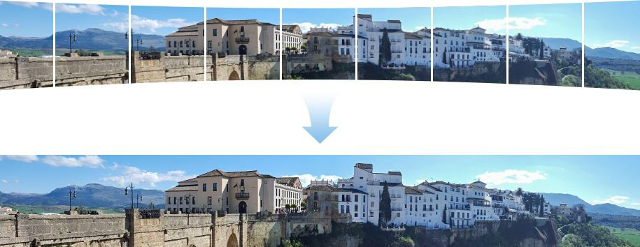
Сверху — девять исходных снимков испанского городка Ронда, выложенных в ряд встык: между ними видны вертикальные белые разделители, кадры имеют разную высоту и слегка разный наклон горизонта, а яркость неба заметно различается от кадра к кадру. Синяя стрелка вниз ведёт к результату — единой широкой панораме, где мост, белые дома на скале и горная гряда на горизонте образуют непрерывную сцену. Швов между кадрами не видно: разница экспозиции выровнена, а стыки размыты многополосным блендингом. Обратите внимание на слегка изогнутую верхнюю и нижнюю границы итогового кадра: это след цилиндрической развёртки, необходимой при таком широком поле зрения. - Для плоских сцен (фасад, документ, стол сверху) и для чистого вращения камеры вокруг оптического центра одной гомографии достаточно.
- Для 3D-сцен при сдвинувшейся камере единой гомографии не существует из-за параллакса: объекты на разной глубине смещаются между кадрами по-разному, и никакое преобразование плоскости не совместит их одновременно. Нужны фундаментальная или эссенциальная матрица, а для полноценной реконструкции — SfM и MVS.
- На практике пайплайны реализованы в OpenCV (
cv2.Stitcher), COLMAP, OpenMVG, Hugin.
- Сшивать сцену с параллаксом одной гомографией. Гомография описывает соответствие между двумя видами плоскости — или произвольной сцены, но только при чистом вращении камеры вокруг её оптического центра. Если фотограф шагнул в сторону, а в кадре есть и передний план, и фон, единой гомографии не существует в принципе. Симптомы: объекты переднего плана двоятся при идеально совпавшем фоне, прямые линии рвутся на шве, а RANSAC находит подозрительно мало инлайеров, причём отбрасываемые точки систематически лежат на переднем плане. Лечение — снимать панораму, вращая камеру вокруг нодальной точки объектива, а не вокруг себя; либо переходить к SfM.
- Меньше четырёх соответствий на гомографию. Гомография имеет $8$ степеней свободы, каждая пара точек даёт $2$ уравнения, значит нужно минимум $4$ пары — и никакие три из них не должны быть коллинеарны. При трёх парах система недоопределена, при четырёх коллинеарных — вырождена. Для аффинного преобразования порог ниже: три пары. Всегда проверяйте, что RANSAC вернул достаточное число инлайеров, а не просто «какую-то» матрицу.
- Матчинг без ratio-test. Брать просто ближайшего соседа — значит получить пару для каждой точки, включая те, у которых на втором кадре соответствия нет вообще (участок не попал в перекрытие, объект загорожен). Ratio-test Лоу отбрасывает пару, если $d_1/d_2 > 0.7$–$0.8$, то есть если ближайший кандидат не сильно лучше второго. Без него доля выбросов подскакивает до $80$–$90\,\%$, и RANSAC по формуле выше потребовал бы уже десятки тысяч итераций. Заменять им RANSAC тоже нельзя: это независимые фильтры, работающие в разных пространствах, и нужны оба.
- Не пересчитывать модель по инлайерам. RANSAC возвращает модель, построенную по минимальной выборке из четырёх точек, — она грубая. Обязательный финальный шаг: пересчитать её по всем инлайерам, лучше нелинейной минимизацией ошибки репроекции.
- Строить широкую панораму в плоской проекции. Гомография проецирует на плоскость, и края растягиваются как $\tan\theta$: при $120^\circ$ уже в несколько раз, при $180^\circ$ бесконечно. Для широких панорам обязательна цилиндрическая или сферическая развёртка, а для неё нужно знать фокусное расстояние в пикселях.
- Сшивать длинную панораму цепочкой попарных гомографий. Ошибки перемножаются, и к концу набегает заметное смещение; круговая панорама не замкнётся. Нужен bundle adjustment, распределяющий ошибку по всем кадрам.
- Класть шов посередине перекрытия. Он может пройти через человека или через машину, которая на двух кадрах стоит в разных местах. Шов ищут по минимуму разницы между кадрами — динамическим программированием или разрезом графа.
- Оценка глубины — прямое продолжение сюжета. Всё сказанное выше о параллаксе как о помехе переворачивается: параллакс есть носитель информации о глубине. Классический путь — от соответствий к фундаментальной матрице и триангуляции; современный — сеть, предсказывающая карту глубины по одному кадру, где обучение как раз и ведётся на многовидовой геометрии. Там же обсуждаются метрики глубины и почему монокулярная оценка даёт глубину лишь с точностью до масштаба.
- Ключевые точки и дескрипторы — детали первого шага пайплайна и сравнение классических дескрипторов с обучаемыми (SuperPoint, LoFTR, LightGlue), которые сегодня заметно превосходят SIFT на сложных парах.
- Гомография — устройство самого преобразования, DLT и нормализация координат.
Из каких шагов состоит пайплайн сшивки панорамы?
Детектирование и описание ключевых точек на каждом кадре; поиск соответствий между кадрами с фильтрацией ratio-test; оценка геометрического преобразования по этим парам через RANSAC с последующим уточнением по инлайерам; глобальное уточнение всех кадров сразу через bundle adjustment; выбор проекции (плоская, цилиндрическая, сферическая) и warping; компенсация экспозиции, поиск шва и многополосный блендинг.
Сколько итераций нужно RANSAC и от чего это зависит?
$N = \log(1-p)/\log(1 - (1-\varepsilon)^s)$, где $p$ — желаемая вероятность успеха, $\varepsilon$ — доля выбросов, $s$ — размер минимальной выборки. Для гомографии $s = 4$; при $\varepsilon = 0.5$ и $p = 0.99$ получаем $(1-0.5)^4 = 0.0625$ и $N = \log(0.01)/\log(0.9375) \approx 71.4$, то есть $72$ итерации. Зависимость экспоненциальна по $s$: при той же доле выбросов переход к $s = 8$ (фундаментальная матрица) умножает $N$ примерно в $16$ раз. Отсюда правило — оценивать простейшую достаточную модель. При этом RANSAC не заменяет ratio-test и не заменяется им: первый работает в пространстве координат и ловит уверенно ошибочные пары на повторяющейся текстуре, второй работает в пространстве дескрипторов и удерживает долю выбросов на уровне, при котором RANSAC вообще сходится за разумное число итераций.
Что такое bundle adjustment и зачем он нужен, если попарные гомографии уже есть?
При последовательной сшивке ошибки попарных оценок перемножаются и накапливаются; круговая панорама не замыкается. Bundle adjustment вводит параметры всех кадров сразу (для панорамы — три угла и фокусное расстояние на кадр) и минимизирует суммарную ошибку репроекции по всем парам одновременно, с робастной функцией потерь. Задача нелинейная, решается Левенбергом–Марквардтом от попарного начального приближения; матрица разрежена, потому что кадр связан только с перекрывающимися соседями. Ошибка замыкания распределяется по всем кадрам вместо накопления в одном стыке.
Зачем панорамы разворачивают на цилиндр или сферу?
Гомография проецирует на плоскость, а точка под углом $\theta$ к оптической оси уходит на расстояние $f\tan\theta$: при поле зрения $120^\circ$ края растягиваются в разы, а при $180^\circ$ панорама становится бесконечной. Цилиндрическая проекция делает горизонталь линейной по углу, что позволяет замкнуть $360^\circ$; сферическая покрывает всю сферу. Дополнительный бонус: на цилиндре и на сфере вращение камеры превращается в простой сдвиг. Для перехода нужно знать фокусное расстояние в пикселях — из EXIF, из калибровки или из bundle adjustment.
Что такое seam finding и multiband blending?
Seam finding — выбор границы между кадрами в зоне перекрытия по минимуму разницы между ними: шов должен идти там, где кадры и так похожи, и обходить движущиеся объекты и людей. Решается динамическим программированием или разрезом графа. Multiband blending разлагает оба кадра на лапласовы пирамиды и смешивает каждый частотный уровень со своей шириной перехода: низкие частоты плавно (иначе виден перепад яркости), высокие резко (иначе детали двоятся из-за остаточной ошибки выравнивания). Без разделения по частотам приходится выбирать между видимой линией шва и размытием текстуры.
Как понять, что панорама развалилась из-за параллакса?
Объекты переднего плана двоятся при идеально совпавшем фоне, прямые линии разрываются на шве, RANSAC находит мало инлайеров, причём отбрасываемые точки систематически лежат на переднем плане, а не разбросаны случайно. Причина в том, что гомография описывает соответствие видов плоскости или чистое вращение камеры вокруг оптического центра; при сдвиге камеры точки на разной глубине смещаются по-разному, и единого преобразования плоскости не существует. Лечение — вращать камеру вокруг нодальной точки объектива либо переходить к Structure from Motion.
-
Модель камеры-обскуры и внутренние параметры
Модель камеры-обскуры (pinhole camera) — простейшая геометрическая модель съёмки: все лучи проходят через одну точку — оптический центр $C$ — и попадают на плоскость изображения, отстоящую от него на фокусное расстояние $f$.
Из подобия треугольников для точки с координатами $(X, Y, Z)$ в системе камеры (ось $Z$ направлена вдоль оптической оси):
\[x = f\,\frac{X}{Z}, \qquad y = f\,\frac{Y}{Z}\]
Всё содержание модели — в этих двух формулах. Дальше идут только смены систем координат.
Реальная плоскость изображения лежит позади оптического центра, поэтому изображение перевёрнуто. В расчётах обычно используют эквивалентную «виртуальную» плоскость перед центром — она даёт те же формулы без минусов.
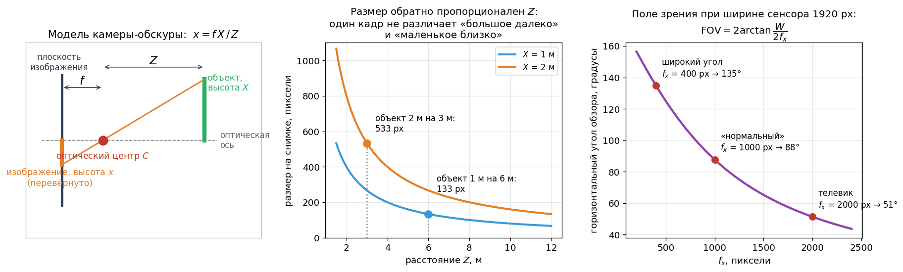
Слева схема: оптический центр C, плоскость изображения на расстоянии f позади него, объект высоты X на расстоянии Z. Оранжевый луч идёт от вершины объекта через центр и попадает на плоскость ниже оптической оси — отсюда перевёрнутое изображение высотой x = fX/Z. В центре: размер объекта на снимке как функция расстояния при f = 800 px. Две гиперболы для объектов высотой 1 и 2 метра пересекаются, и отмечены две точки — объект 2 м на расстоянии 3 м даёт 533 px, объект 1 м на 6 м даёт 133 px. Справа: горизонтальный угол обзора FOV = 2·arctan(W/2f) при ширине сенсора 1920 px. Широкоугольный объектив f = 400 px даёт 135 градусов, нормальный f = 1000 px — 88 градусов, телевик f = 2000 px — 51 градус. Внутренние параметры
Формулы $x = fX/Z$ дают координаты в метрах от оптической оси. Чтобы получить пиксели, нужны две вещи: перевод метров в пиксели и сдвиг начала координат в угол изображения (пиксели нумеруются от левого верхнего угла, а не от центра). Обе операции собираются в матрицу внутренних параметров (intrinsics):
\[K = \begin{pmatrix} f_x & s & c_x \\ 0 & f_y & c_y \\ 0 & 0 & 1 \end{pmatrix}\]
- $f_x, f_y$ — фокусные расстояния в пикселях по горизонтали и вертикали;
- $c_x, c_y$ — главная точка (principal point): пиксельные координаты пересечения оптической оси с матрицей, обычно близко к центру кадра, но не строго в нём — сенсор всегда установлен с допуском;
- $s$ — скос (skew), учитывающий неперпендикулярность осей пикселя. На любом современном сенсоре $s = 0$, и его почти всегда фиксируют нулём.
Проекция в однородных координатах:
\[\tilde{x} \sim K \begin{pmatrix} X \\ Y \\ Z \end{pmatrix}, \qquad \begin{pmatrix} u \\ v \\ 1 \end{pmatrix} = \begin{pmatrix} f_x X / Z + c_x \\ f_y Y / Z + c_y \\ 1 \end{pmatrix}\]
$K$ полностью описывает камеру изнутри и не зависит от того, где камера стоит и куда смотрит.
Пусть $p_x$ — физический размер пикселя по горизонтали в метрах. Тогда
\[f_x = \frac{f_{\text{м}}}{p_x}, \qquad f_y = \frac{f_{\text{м}}}{p_y}\]
То есть $f_x$ — это фокусное расстояние, выраженное в единицах «ширина пикселя». Отсюда сразу видно:
- Фокусное в миллиметрах — свойство объектива, $f_x$ в пикселях — свойство пары «объектив + сенсор». Один и тот же объектив 24 мм на полнокадровой камере и на кропнутой даст разные $f_x$ в пикселях и разное поле зрения.
- $f_x = f_y$ тогда и только тогда, когда пиксель квадратный ($p_x = p_y$). У современных сенсоров это почти всегда так, и отношение $f_x/f_y$ (пиксельное соотношение сторон) отличается от единицы на доли процента. Заметное расхождение появляется при анаморфной оптике или при неквадратном ресайзе кадра.
- При ресайзе изображения $K$ меняется. Уменьшили кадр вдвое — все четыре числа $f_x, f_y, c_x, c_y$ делятся на 2. Забыть про это — очень частая ошибка при подготовке данных.
Пример. Камера с сенсором 1/2.3 дюйма: физическая ширина 6.17 мм, разрешение 4000 пикселей → $p_x = 6.17/4000 = 1.54$ мкм. Объектив 4.5 мм даёт $f_x = 4.5 / 0.00154 = 2920$ пикселей.
Угол обзора связан с $f_x$ и шириной кадра $W$ в пикселях:
\[\mathrm{FOV}_x = 2\arctan\!\left(\frac{W}{2 f_x}\right)\]
Проверим на цифрах для $W = 1920$:
$f_x$, px 400 1000 2000 2920 FOV 135° 88° 51° 36° Отсюда полезная привычка: «широкоугольный» означает малое $f_x$, «телевик» — большое. И ещё: зная $W$ и приблизительный FOV камеры (его обычно пишут в спецификации), можно грубо оценить $f_x$ без калибровки — это часто достаточная стартовая точка для алгоритмов.
Внешние параметры и полная цепочка
$K$ описывает камеру, но точки сцены заданы в мировой системе координат, а не в системе камеры. Переход между ними — жёсткое движение:
\[X_{\text{кам}} = R\,X_{\text{мир}} + t\]
где $R$ — матрица поворота $3 \times 3$ (3 степени свободы), $t$ — вектор сдвига (3 степени свободы). Вместе это внешние параметры (extrinsics), 6 степеней свободы — положение и ориентация камеры в мире.
Полная цепочка проекции:
\[\tilde{x} \sim K\,[R \mid t]\,\tilde{X}, \qquad P = K\,[R \mid t]\]
$P$ размера $3 \times 4$ называют матрицей камеры. У неё 11 степеней свободы: 5 внутренних ($f_x, f_y, c_x, c_y, s$) плюс 6 внешних; двенадцатый элемент съедается неопределённостью общего масштаба.
Важное замечание про $t$: это не положение камеры в мире. Положение центра равно $C = -R^\top t$. Путаница здесь стоит многим часам отладки.
Камера: $f_x = f_y = 800$, $c_x = 320$, $c_y = 240$ (кадр $640 \times 480$). Камера стоит в начале мировых координат и смотрит вдоль оси $Z$, то есть $R = I$, $t = 0$.
Точка сцены $X = (0.5,\ -0.3,\ 4.0)$ метров (полметра вправо, 30 см вверх, 4 метра вперёд).
\[u = 800 \cdot \frac{0.5}{4.0} + 320 = 100 + 320 = 420, \qquad v = 800 \cdot \frac{-0.3}{4.0} + 240 = -60 + 240 = 180\]
Точка спроецируется в пиксель $(420, 180)$ — правее и выше центра кадра, как и ожидалось.
Теперь обратная задача: пиксель $(420, 180)$ — какая это точка сцены? Ответ: любая точка луча
\[\left(\frac{420 - 320}{800}\,Z,\; \frac{180 - 240}{800}\,Z,\; Z\right) = (0.125\,Z,\; -0.075\,Z,\; Z), \quad Z > 0\]
При $Z = 4$ получим исходную точку, при $Z = 8$ — точку вдвое дальше и вдвое крупнее в мире. Одна камера принципиально не может выбрать между ними.
Проекция $\mathbb{R}^3 \to \mathbb{R}^2$ необратима: делением на $Z$ информация о глубине уничтожается. Практические следствия:
- Размер объекта на снимке неопределён без глубины. Объект вдвое больший и вдвое более далёкий даёт пиксель в пиксель тот же образ. Это не ограничение алгоритма, а свойство геометрии — доказано, что по одному кадру без априорных знаний масштаб восстановить нельзя.
- Monocular SLAM восстанавливает сцену с точностью до масштаба. Траектория камеры и структура сцены находятся, но общий множитель — нет. Его берут из внешнего источника: объекта известного размера в кадре, IMU, колёсной одометрии, GPS.
- Оценка глубины по одному кадру — это обучение, а не геометрия. Нейросетевые монокулярные модели (MiDaS, DPT, Depth Anything) работают не потому, что решают геометрическую задачу, а потому, что выучили статистику: люди примерно такого роста, двери такой ширины, текстура на удалении мельчает, объекты внизу кадра ближе. Отсюда и их характерные ошибки — на нетипичных сценах, макросъёмке, у зеркал.
Способы получить глубину честно: стерео (две камеры, известная база), структурированный свет и ToF-датчики, движение камеры с известным перемещением, известный размер объекта в кадре.
Три задачи, в которых матрица внутренних параметров стоит в самом центре:
1. PnP — поза по одному кадру. Даны $n \ge 3$ соответствий «известная 3D-точка ↔ пиксель» и известная $K$. Требуется найти $R$ и $t$. Именно так работает отслеживание маркера в дополненной реальности: углы ArUco-маркера известны в его собственной системе координат, детектор находит их на кадре, PnP возвращает позу камеры относительно маркера, и виртуальный объект рисуется в правильном месте. Без $K$ задача не решается: пиксель не превращается в луч.
2. Обратная проекция для стерео и SLAM. Пиксель $(u, v)$ переводится в направление луча в системе камеры:
\[\hat{x} = K^{-1}\begin{pmatrix} u \\ v \\ 1 \end{pmatrix} = \begin{pmatrix} (u - c_x)/f_x \\ (v - c_y)/f_y \\ 1 \end{pmatrix}\]
Эти нормализованные координаты — общий язык, на котором говорят все геометрические алгоритмы: в них модель камеры уже учтена, и дальше можно работать с чистой геометрией, не помня о конкретном объективе.
3. Оценка расстояния по известному размеру. Если реальная высота объекта $H$ известна, а на снимке он занимает $h$ пикселей, то
\[Z = \frac{f_y\,H}{h}\]
Пример: пешеход ростом 1.75 м занимает 120 пикселей при $f_y = 900$. Тогда $Z = 900 \cdot 1.75 / 120 = 13.1$ м. На этой формуле держатся простые монокулярные оценщики дистанции в ADAS — вместе со всеми их слабостями: ошибка в высоте объекта переносится в оценку расстояния линейно, а высота человека варьируется на десятки процентов.
Камера-обскура — идеализация. За её пределами остаются:
- Дисторсия объектива — реальные лучи искривляются, и прямые перестают быть прямыми. Учитывается отдельной нелинейной моделью поверх pinhole.
- Глубина резкости. У обскуры бесконечная ГРИП; у настоящего объектива фокус конечен, и вне плоскости фокуса точка размывается в кружок нерезкости.
- Роллинг-шаттер. У CMOS-сенсоров строки экспонируются последовательно, поэтому при быстром движении вертикальные линии заваливаются.
- Фотометрия. Модель описывает только геометрию; яркость, виньетирование, отклик сенсора — отдельная история.
- Путать $f$ в миллиметрах и $f_x$ в пикселях. Первое — свойство объектива, второе — пары «объектив + сенсор». Связь: $f_x = f_{\text{м}} / p_x$, где $p_x$ — размер пикселя.
- Не пересчитывать $K$ при ресайзе или кропе. Уменьшили изображение в $k$ раз — делите $f_x, f_y, c_x, c_y$ на $k$. При кропе меняются только $c_x, c_y$.
- Считать, что $t$ — это положение камеры. $t$ — сдвиг в формуле $X_{\text{кам}} = RX_{\text{мир}} + t$. Положение центра равно $C = -R^\top t$.
- Считать главную точку строго в центре кадра. Она близка к центру, но смещена на единицы или десятки пикселей из-за допусков сборки. Для сшивки панорам этим можно пренебречь, для фотограмметрии — нет.
- Ожидать, что монокулярная сеть даёт метрическую глубину. Большинство таких моделей выдают относительную или обратную глубину с точностью до масштаба и сдвига. Метрический выход требует либо специальной постановки обучения, либо калибровки по известному объекту.
- Забывать, что оценка позы по одному кадру требует известных $K$. Алгоритм PnP восстанавливает $R$ и $t$ по 3D-2D соответствиям, только если внутренние параметры уже известны из калибровки.
Запишите модель камеры-обскуры и объясните, откуда берётся деление на Z.
$x = fX/Z$, $y = fY/Z$. Формула следует из подобия треугольников: луч от точки сцены идёт через оптический центр к плоскости изображения, отстоящей на $f$. Деление на глубину и есть перспектива — оно делает удалённые объекты мельче.
Что содержит матрица внутренних параметров K и какой смысл у каждого элемента?
Фокусные расстояния $f_x, f_y$ в пикселях, главную точку $c_x, c_y$ — пиксельные координаты пересечения оптической оси с сенсором, и скос $s$, который на современных сенсорах равен нулю. $K$ переводит метры в пиксели и сдвигает начало координат из центра кадра в его угол.
Чем $f_x$ в пикселях отличается от фокусного расстояния в миллиметрах?
$f_x = f_{\text{мм}} / p_x$, где $p_x$ — физический размер пикселя. Миллиметры — характеристика только объектива, пиксели — характеристика связки объектива и сенсора. Один объектив на разных матрицах даёт разное $f_x$ и разное поле зрения, а при ресайзе изображения $f_x$ меняется пропорционально.
Как связаны поле зрения и фокусное расстояние?
$\mathrm{FOV}_x = 2\arctan(W / 2f_x)$, где $W$ — ширина кадра в пикселях. Малое $f_x$ означает широкий угол, большое — узкий. Для кадра шириной 1920 пикселей $f_x = 400$ даёт около 135 градусов, $f_x = 2000$ — около 51 градуса.
Как выглядит полная цепочка проекции точки мира в пиксель?
$\tilde{x} \sim K[R|t]\tilde{X}$. Сначала жёсткое движение переводит точку из мировой системы в систему камеры, затем $K$ проецирует её в пиксели. Матрица камеры $P = K[R|t]$ имеет размер 3×4 и 11 степеней свободы: 5 внутренних и 6 внешних.
Почему по одному кадру нельзя определить размер объекта?
Проекция делит на глубину, и информация о $Z$ теряется безвозвратно. Объект вдвое большего размера, находящийся вдвое дальше, даёт в точности тот же образ. Пиксель соответствует не точке, а целому лучу. Поэтому монокулярный SLAM восстанавливает сцену с точностью до масштаба, а нейросетевые оценщики глубины работают на выученной статистике сцен, а не на геометрии.
-
Калибровка камеры и дисторсия
Калибровка камеры — определение её внутренних параметров $K = \begin{pmatrix} f_x & 0 & c_x \\ 0 & f_y & c_y \\ 0 & 0 & 1\end{pmatrix}$ и коэффициентов дисторсии объектива по снимкам объекта известной геометрии.
Зачем это нужно: без $K$ пиксель — просто пиксель. С известной $K$ пиксель превращается в луч в трёхмерном пространстве, и становятся возможны все метрические задачи:
- восстановление положения камеры по 3D-2D соответствиям (PnP);
- стереозрение и вычисление глубины;
- фотограмметрия и измерение реальных размеров;
- дополненная реальность — вставка виртуального объекта, стоящего на плоскости;
- визуальная одометрия и SLAM.
Отдельно калибруются два набора параметров: внутренние (не зависят от того, где стоит камера, определяются один раз на связку «объектив + сенсор») и внешние (положение и ориентация, свои для каждого кадра).
Дисторсия
Реальный объектив отклоняет лучи не по идеальной pinhole-модели: прямые линии на снимке становятся кривыми. Стандартная модель (Браун–Конради) вставляется между идеальной проекцией и переводом в пиксели.
Направление модели важно и его постоянно путают. Цепочка такая:
\[\underbrace{(X, Y, Z)}_{\text{точка сцены}} \;\to\; \underbrace{x = \tfrac{X}{Z},\ y = \tfrac{Y}{Z}}_{\text{идеальные нормализованные}} \;\to\; \underbrace{(x_d, y_d)}_{\text{искажённые нормализованные}} \;\to\; \underbrace{u = f_x x_d + c_x,\ v = f_y y_d + c_y}_{\text{пиксели}}\]
Полином действует на идеальных координатах и выдаёт искажённые, где $r^2 = x^2 + y^2$ считается по идеальным.
Радиальная — зависит только от расстояния до центра, вызвана формой линз:
\[x_d = x\,(1 + k_1 r^2 + k_2 r^4 + k_3 r^6), \qquad y_d = y\,(1 + k_1 r^2 + k_2 r^4 + k_3 r^6)\]
Тангенциальная — вызвана непараллельностью линзы и сенсора при сборке:
\[x_d \mathrel{+}= 2 p_1 x y + p_2 (r^2 + 2x^2), \qquad y_d \mathrel{+}= p_1 (r^2 + 2y^2) + 2 p_2 x y\]
Итого пять коэффициентов $(k_1, k_2, p_1, p_2, k_3)$ — именно в таком порядке их возвращает OpenCV.
Следствие для undistort. Из пикселя мы получаем $(x_d, y_d) = ((u - c_x)/f_x,\ (v - c_y)/f_y)$ — уже искажённые координаты. Чтобы восстановить идеальные, нужно обратить полином, а он в общем виде не обращается аналитически. На практике решают итерациями неподвижной точки:
\[x^{(0)} = x_d, \qquad x^{(n+1)} = \frac{x_d}{1 + k_1 r_n^2 + k_2 r_n^4 + k_3 r_n^6}, \quad r_n^2 = (x^{(n)})^2 + (y^{(n)})^2\]
Обычно хватает 5–20 итераций. Именно так устроен
cv2.undistortPoints. Подставлять пиксельные координаты прямо в прямой полином — распространённая ошибка: точка исказится дважды вместо того, чтобы выпрямиться.Как читать знак $k_1$:
- $k_1 < 0$ — бочка (barrel): увеличение падает к краям, прямые выгибаются наружу от центра. Характерно для широкоугольных объективов и фишаев.
- $k_1 > 0$ — подушка (pincushion): увеличение растёт к краям, прямые втягиваются внутрь. Характерно для телеобъективов.
- Ус (mustache) — смена знака по радиусу; для неё нужен $k_2$ значимой величины.
Обратите внимание: разложение чётное по $r$ — нечётных степеней нет, потому что искажение симметрично относительно центра.
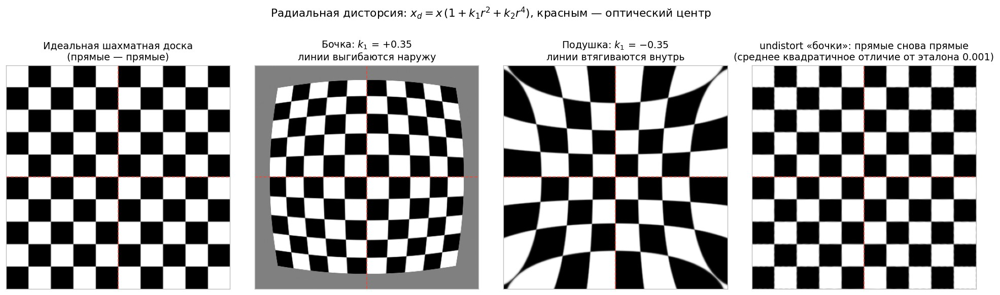
Идеальная шахматная доска, две модели дисторсии и результат коррекции; красный крест отмечает оптический центр. Панель 1 — прямые остаются прямыми. Панель 2 — искажение бочкой: контур поля выгибается наружу, клетки у краёв заметно мельче, чем в центре, потому что содержимое стянуто к центру. Панель 3 — подушка с обратным знаком: границы втянуты внутрь, клетки у краёв растянуты. Панель 4 — к бочке применено численно обращённое отображение: линии снова прямые, а среднее квадратичное отличие от эталона составило 0.001 против 0.257 у искажённой версии. Знаки коэффициентов на панелях указаны в терминах отображения выходных координат во входные, поэтому в терминах модели Брауна-Конради панель 2 отвечает отрицательному k₁. Метод Чжана
Метод Чжана (Zhang, 2000) сделал калибровку доступной: вместо дорогого трёхмерного эталона достаточно распечатанной шахматной доски и десятка снимков с руки.
Как это работает:
Плоский объект = гомография. Положим плоскость доски в $Z = 0$ мировой системы. Тогда проекция сводится к гомографии: $\tilde{x} \sim K\,[r_1\ r_2\ t]\,(X, Y, 1)^\top$, то есть $H = \lambda K\,[r_1\ r_2\ t]$, где $r_1, r_2$ — первые два столбца матрицы поворота. Гомографию по снимку доски мы умеем оценивать точно.
Ортонормальность даёт уравнения на $K$. Из $H = \lambda K[r_1\ r_2\ t]$ следует $r_1 = \lambda^{-1}K^{-1}h_1$, $r_2 = \lambda^{-1}K^{-1}h_2$. Столбцы матрицы поворота ортогональны и единичны, значит
\[h_1^\top B\,h_2 = 0, \qquad h_1^\top B\,h_1 = h_2^\top B\,h_2, \qquad B = K^{-\top}K^{-1}\]
Это два линейных уравнения относительно элементов $B$ с каждого снимка. $B$ симметрична, значит содержит 6 неизвестных → нужно минимум 3 снимка под разными углами. По найденной $B$ матрица $K$ восстанавливается разложением Холецкого.
Внешние параметры. Зная $K$, для каждого снимка сразу получаем $R$ и $t$ из его гомографии.
Нелинейное уточнение. Всё найденное (внутренние параметры, коэффициенты дисторсии, позы всех снимков) уточняется совместно минимизацией репроекционной ошибки методом Левенберга–Марквардта. Дисторсия на этом шаге и появляется — линейный этап её не видит.
Главная и практически единственная метрика качества калибровки. Для каждого детектированного угла доски берётся его известное положение на доске $X_{ij}$, проецируется через оценённые параметры и сравнивается с реально найденным пикселем $\hat{x}_{ij}$:
\[E = \sqrt{\frac{1}{NM}\sum_{i=1}^{N}\sum_{j=1}^{M} \big\| \hat{x}_{ij} - \pi(K, d, R_i, t_i, X_j) \big\|^2}\]
Как читать значение:
RMS Оценка $< 0.3$ px отлично, годится для фотограмметрии $0.3\text{–}0.5$ px хорошо, рабочая норма для большинства задач $0.5\text{–}1.0$ px приемлемо, но стоит поискать причину $> 1$ px плохо: ошибки детекции углов, размытые кадры или неадекватная модель дисторсии Важнейшая оговорка: низкая репроекционная ошибка не гарантирует правильности параметров. Если все снимки сделаны из одной позиции и под одним углом, оптимизация подгонит параметры под эту конфигурацию с ошибкой 0.1 px, а на других ракурсах результат будет неверен. Репроекционная ошибка — необходимое, но недостаточное условие. Поэтому смотрят ещё и на разброс ошибок по кадрам, и на покрытие кадра точками.
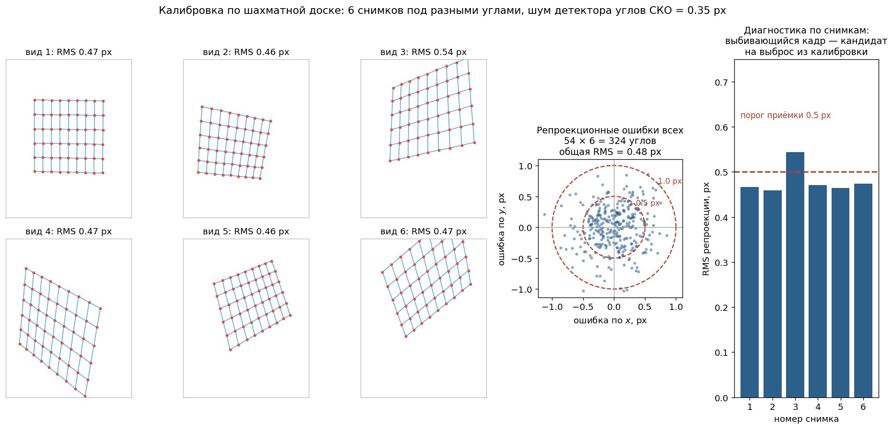
Симуляция калибровки: доска 9 на 6 внутренних углов, снятая шесть раз под разными наклонами, детектор углов даёт шум со средним квадратичным отклонением 0.35 пикселя по каждой оси. Шесть левых панелей — положения доски в кадре 640 на 480: первый вид почти фронтальный, остальные наклонены в разные стороны, что и требуется для устойчивой оценки. Седьмая панель — облако репроекционных ошибок всех 54 на 6 = 324 углов, изотропное, без систематического смещения, с окружностями уровня 0.5 и 1.0 пикселя; общая RMS 0.48 пикселя, что близко к теоретическому пределу 0.35 умножить на корень из двух. Правая панель — RMS по кадрам: пять снимков около 0.46-0.47, третий выбивается на 0.54 и переходит красную линию порога приёмки 0.5 — именно такой кадр и стоит рассмотреть как кандидата на исключение из калибровки. Формально трёх достаточно, на практике берут 15–25. Чек-лист хорошей серии:
- Разные наклоны. Доска должна быть повёрнута относительно оптической оси на 20–45° в разные стороны. Это критично: см. вырожденный случай ниже.
- Разные расстояния. Ближе и дальше — чтобы разделить влияние $f$ и $t_z$.
- Покрытие всего кадра, особенно углов. Радиальная дисторсия растёт как $r^2$ и $r^4$: если доска всегда в центре, коэффициенты $k_1, k_2$ определить нельзя — там просто нет данных.
- Резкие кадры. Смаз убивает субпиксельную точность детекции углов. Снимайте с короткой выдержкой или со штатива.
- Равномерное освещение без бликов на глянцевой бумаге. Матовая печать, наклеенная на жёсткую основу, — стандарт: изогнутая доска ломает предположение о плоскости.
- Известный размер клетки — он задаёт метрический масштаб внешних параметров.
Если все снимки сделаны с доской в одной ориентации (например, доска всегда параллельна сенсору, меняется только сдвиг), калибровка вырождается.
Причина видна из метода Чжана: каждый снимок даёт два уравнения на $B$, но при одинаковой ориентации доски эти уравнения линейно зависимы между кадрами. Сколько бы кадров вы ни сняли, независимых уравнений останется два, а неизвестных в $B$ шесть — система недоопределена.
Проявления на практике:
- $f_x$ и $t_z$ становятся неразличимы: доска вдвое дальше при вдвое большем фокусном даёт тот же снимок. Оптимизатор выберет любую точку этой долины, и репроекционная ошибка будет низкой.
- Оценка «сходится», но параметры бессмысленны — например, $f_x$ отличается от истинного вдвое.
- Тот же эффект в мягкой форме при малых наклонах: система формально не вырождена, но плохо обусловлена, и параметры «плавают» от запуска к запуску.
Лекарство: наклонять доску минимум на 20–30° в разных направлениях, а также проверять устойчивость — прогнать калибровку на случайных подвыборках кадров и убедиться, что $f_x$ не скачет.
Коррекция дисторсии — это построение нового изображения, в котором прямые снова прямые:
import cv2 # alpha = 0: все пиксели результата валидны, часть кадра обрезана # alpha = 1: сохранён весь исходный кадр, по краям чёрные поля newK, roi = cv2.getOptimalNewCameraMatrix(K, dist, (w, h), alpha=0) undist = cv2.undistort(img, K, dist, None, newK) x, y, w2, h2 = roi undist = undist[y:y + h2, x:x + w2]Почему появляются поля или обрезка: при коррекции бочки края «растягиваются» наружу, и прямоугольный кадр перестаёт быть прямоугольником — получается фигура с выпуклыми сторонами. Дальше есть выбор: вписать в неё прямоугольник (
alpha = 0, часть кадра теряется) или описать (alpha = 1, появляются чёрные углы). Промежуточные значения дают компромисс.Важно: после undistort нужно использовать новую матрицу
newK, а не исходную $K$ — обрезка и масштабирование меняют главную точку и фокусные. Забыть об этом — источник трудноуловимых ошибок в стерео и PnP.Второй практический момент: если дальше вы всё равно проецируете точки, часто выгоднее не выпрямлять изображение, а учитывать дисторсию в самих формулах проекции (
cv2.projectPointsумеет это). Так вы избегаете интерполяции и связанной с ней потери резкости.- Снимать доску только фронтально. Классическая ошибка новичка: калибровка вырождается, $f_x$ и $t_z$ становятся неразличимы, а низкая репроекционная ошибка создаёт ложное ощущение успеха.
- Держать доску только в центре кадра. Радиальная дисторсия проявляется на периферии; без данных с краёв коэффициенты $k_1, k_2$ не определить.
- Оценивать калибровку исключительно по RMS. Низкая ошибка при плохом покрытии ракурсов ничего не гарантирует. Смотрите на разброс по кадрам, покрытие кадра точками и на устойчивость параметров при повторных прогонах.
- Включать $k_3$ на обычном объективе. Третий радиальный коэффициент нужен для фишаев и сверхшироких углов; на нормальной оптике он переобучается на шум и портит экстраполяцию за пределы области, покрытой точками.
- Применять полином дисторсии не в ту сторону. Он переводит идеальные нормализованные координаты в искажённые, а из пикселя вы получаете уже искажённые. Обратное преобразование считается итерациями, аналитической формулы нет.
- Использовать изогнутую или напечатанную не в масштабе доску. Метод предполагает идеальную плоскость и точно известный шаг клетки. Погрешность печати напрямую переносится в метрический масштаб.
- Забывать про новую матрицу после undistort. После коррекции и обрезки $K$ уже другая; использование старой ломает все последующие геометрические вычисления.
- Переносить калибровку между экземплярами камер. Даже у одинаковых модулей параметры различаются из-за допусков сборки — главная точка гуляет на десятки пикселей. Калибровать нужно каждый экземпляр.
Что определяет калибровка и зачем нужны внутренние параметры?
Внутренние параметры $f_x, f_y, c_x, c_y$ и коэффициенты дисторсии объектива. Без них пиксель — просто номер элемента матрицы; с ними пиксель превращается в луч в трёхмерном пространстве, что делает возможными PnP, стереозрение, фотограмметрию, дополненную реальность и визуальную одометрию.
Как устроена модель радиальной и тангенциальной дисторсии и в какую сторону она работает?
Радиальная зависит только от расстояния до центра: $x_d = x(1 + k_1r^2 + k_2r^4 + k_3r^6)$, вызвана формой линз. Тангенциальная с коэффициентами $p_1, p_2$ вызвана непараллельностью линзы и сенсора. Полином переводит идеальные нормализованные координаты в искажённые, которые затем умножаются на $f$ и сдвигаются на главную точку. Обратное преобразование аналитически не выражается и считается итерациями. Отрицательное $k_1$ даёт бочку — прямые выгибаются наружу, положительное даёт подушку.
На чём основан метод Чжана и почему хватает плоской доски?
Плоский объект проецируется гомографией, а из соотношения $H = \lambda K[r_1\,r_2\,t]$ и ортонормальности столбцов матрицы поворота получаются два линейных уравнения на элементы матрицы $B = K^{-\top}K^{-1}$ с каждого снимка. У симметричной $B$ шесть неизвестных, значит минимум три снимка под разными углами; далее $K$ восстанавливается разложением Холецкого, а всё вместе уточняется нелинейной минимизацией репроекционной ошибки.
Что такое репроекционная ошибка и какие значения считаются хорошими?
Среднеквадратичное расстояние между детектированными углами доски и их проекциями через оценённые параметры. Норма для большинства задач — менее 0.5 пикселя, для фотограмметрии желательно менее 0.3. Значение выше пикселя говорит об ошибках детекции, смазанных кадрах или неподходящей модели дисторсии.
Почему низкая репроекционная ошибка не гарантирует правильную калибровку?
Потому что она измеряет согласие модели с теми данными, на которых модель и подгонялась. Если все снимки сделаны в одной конфигурации, оптимизатор идеально подгонит параметры под неё, а на других ракурсах результат окажется неверен. Нужны также разнообразие ракурсов, покрытие кадра точками и проверка устойчивости параметров.
Когда калибровка вырождается и как этого избежать?
Когда доска на всех снимках лежит в одной плоскости или почти в ней: уравнения от разных кадров становятся линейно зависимыми, независимых остаётся два при шести неизвестных. Практическое следствие — неразличимость фокусного расстояния и удаления доски. Избежать: наклонять доску на 20–45 градусов в разные стороны, снимать с разных расстояний и покрывать точками весь кадр, включая углы.
-
Стерео, эпиполярная геометрия и карта глубины
Стереозрение — восстановление глубины сцены по двум снимкам с камер, разнесённых на известное расстояние (базу $B$).
Идея та же, что у бинокулярного зрения человека: одна и та же точка сцены проецируется в разные места на двух снимках, и величина этого рассогласования — диспаритет — обратно пропорциональна расстоянию до точки. Ближний объект «прыгает» между кадрами сильно, дальний почти не сдвигается.
Задача распадается на два независимых куска:
- Геометрия — как связаны два вида одной сцены (эпиполярная геометрия) и как из соответствия получить трёхмерную точку (триангуляция).
- Соответствие — какая точка левого кадра какой точке правого отвечает. Это и есть трудная часть.
Эпиполярная геометрия
Пусть $C$ и $C'$ — оптические центры двух камер, $X$ — точка сцены, $x$ и $x'$ — её проекции.
- Базовая линия (baseline) — прямая $CC'$.
- Эпиполярная плоскость — плоскость, проходящая через $C$, $C'$ и $X$.
- Эпиполярная линия $l'$ — след эпиполярной плоскости на втором снимке.
- Эпиполи $e$ и $e'$ — точки пересечения базовой линии с плоскостями изображений. Через эпиполь проходят все эпиполярные линии соответствующего снимка.
Ключевое утверждение: зная точку $x$ на первом снимке, мы не знаем её глубину, но точно знаем, что соответствующая точка $x'$ лежит на прямой $l' = Fx$ второго снимка. Это сужает поиск с двумерного на одномерный — вычислительно это разница между $O(N^2)$ и $O(N)$, а по надёжности разница ещё больше: меньше кандидатов — меньше ложных соответствий.
Алгебраически ограничение записывается одной формулой:
\[x'^{\top} F\, x = 0\]
где $F$ — фундаментальная матрица $3 \times 3$.
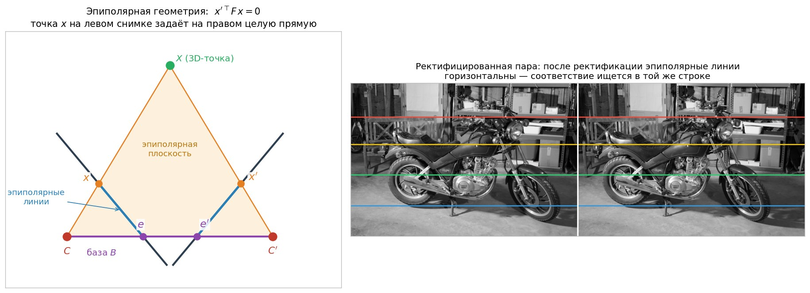
Слева схема: оптические центры C и C' соединены фиолетовой базой B, оранжевые лучи идут от них к трёхмерной точке X, и все три точки задают эпиполярную плоскость (закрашена жёлтым). Плоскости изображения обеих камер нарисованы тёмными отрезками, проекции точки X помечены как x и x'. Синие толстые отрезки — эпиполярные линии: они соединяют проекцию точки с эпиполем e (или e'), в котором база протыкает плоскость изображения. Смысл конструкции: точка x на левом снимке не определяет положение X, но полностью определяет прямую на правом снимке, где эту точку надо искать. Справа реальная ректифицированная пара кадров: одна и та же сцена, снятая двумя камерами. Четыре цветные горизонтали проведены через оба кадра на одинаковой высоте — после ректификации соответствующие точки лежат на одной строке, поэтому поиск сводится к сдвигу вдоль строки. Эссенциальная матрица $E$ работает в нормализованных координатах (когда $K$ известна, $\hat{x} = K^{-1}x$):
\[\hat{x}'^{\top} E\, \hat{x} = 0, \qquad E = [t]_\times R\]
где $R$ и $t$ — поворот и сдвиг между камерами, $[t]_\times$ — матрица векторного произведения. У $E$ 5 степеней свободы: 3 на поворот и 3 на сдвиг минус 1 на неизвестный масштаб.
Фундаментальная матрица $F$ работает в пиксельных координатах и не требует знания $K$:
\[F = K'^{-\top} E\, K^{-1}\]
У $F$ 7 степеней свободы: 9 элементов минус 1 на общий масштаб минус 1 на условие $\det F = 0$ (матрица вырождена — её нулевое пространство и есть эпиполь). Отсюда алгоритмы «7 точек» и более простой линейный «8 точек».
Что из этого следует практически. Из $E$ можно извлечь $R$ и $t$ (с точностью до масштаба и до четырёхкратной неоднозначности, разрешаемой проверкой «точки должны быть перед обеими камерами»). Из $F$ без калибровки — нельзя: получится реконструкция с точностью до произвольного проективного преобразования. Поэтому в SLAM и SfM почти всегда идут через $E$, предварительно откалибровав камеру.
Заметьте параллель с гомографией: $H$ связывает точку с точкой (8 DOF, применима к плоской сцене), $F$ связывает точку с прямой (7 DOF, применима к любой сцене с параллаксом). Это разные модели, и выбор между ними — отдельная задача (в ORB-SLAM обе гипотезы считаются параллельно, и выбирается лучшая по числу инлайеров).
Ректификация и диспаритет
Ректификация — перепроецирование обоих кадров на общую плоскость так, чтобы эпиполярные линии стали горизонтальными и совпали по номеру строки. После неё эпиполи уезжают в бесконечность, а соответствие точки $(u, v)$ левого кадра ищется среди точек $(u - d,\ v)$ правого — только по горизонтали, в той же строке.
Это чисто вычислительное удобство, но огромное: поиск становится одномерным и векторизуемым, а вся дальнейшая математика упрощается до одной формулы.
Диспаритет:
\[d = u_L - u_R\]
При ректифицированной паре с горизонтальной базой $d \ge 0$ всегда, и он тем больше, чем ближе точка.
Для ректифицированной пары с одинаковыми камерами, фокусным $f$ (в пикселях) и базой $B$:
\[Z = \frac{f B}{d}\]
Вывод. Точка $(X, Y, Z)$ в системе левой камеры проецируется в $u_L = f X/Z + c_x$. Правая камера сдвинута на $B$ вдоль оси $x$, то есть в её системе координата точки равна $X - B$, и $u_R = f(X - B)/Z + c_x$. Вычитаем:
\[d = u_L - u_R = \frac{f X}{Z} - \frac{f (X - B)}{Z} = \frac{f B}{Z} \quad \Longrightarrow \quad Z = \frac{f B}{d}\]
Обратите внимание: $X$ сократился. Диспаритет зависит только от глубины, а не от положения точки в кадре.
Камера: $f = 700$ пикселей, база $B = 12$ см $= 0.12$ м. Точка даёт диспаритет $d = 20$ пикселей.
\[Z = \frac{700 \cdot 0.12}{20} = \frac{84}{20} = \mathbf{4.2}\ \text{м}\]
Теперь посмотрим на точность. Продифференцируем $Z = fB/d$ по $d$:
\[\left|\frac{dZ}{dd}\right| = \frac{fB}{d^2} = \frac{Z^2}{fB} \qquad \Longrightarrow \qquad \Delta Z = \frac{Z^2}{fB}\,\Delta d\]
Ошибка глубины растёт как квадрат глубины. Для нашей камеры $fB = 700 \cdot 0.12 = 84$ м·px. Ошибку в 1 пиксель диспаритета можно оценить двумя способами — по производной (первый порядок) и точной разностью $Z(d) - Z(d+1)$:
$d$, px 60 30 20 10 $Z = fB/d$, м 1.40 2.80 4.20 8.40 Оценка по производной $Z^2/(fB)$ 2.3 см 9.3 см 21 см 84 см Точная разность $Z(d) - Z(d{+}1)$ 2.3 см 9.0 см 20 см 76 см Две строки почти совпадают при больших $d$ и расходятся при малых: производная — линейное приближение, и оно тем грубее, чем сильнее $Z$ меняется на шаге в один пиксель. При $d = 10$ разница уже 10 %. Для оценок «на пальцах» пользуются формулой с производной, она всегда даёт консервативную (чуть завышенную) величину.
На полутора метрах стерео даёт сантиметровую точность, на восьми — уже почти метровую. Отсюда все практические выводы:
- Дальность стерео ограничена и определяется произведением $fB$. Хотите видеть дальше — увеличивайте базу или фокусное.
- Но большая база — это плохо для ближней зоны: растут окклюзии (то, что видно одной камере, закрыто для другой) и перспективные различия, из-за чего сопоставление становится труднее. Отсюда типичный компромисс: 6–12 см для устройств вроде RealSense, 0.5–2 м для автомобильных систем.
- Субпиксельный диспаритет обязателен. Точность в целый пиксель на средних дистанциях неприемлема, поэтому все реализации подгоняют параболу к трём соседним значениям функции стоимости и берут её вершину — это даёт $\Delta d \approx 0.1$–$0.25$ px.
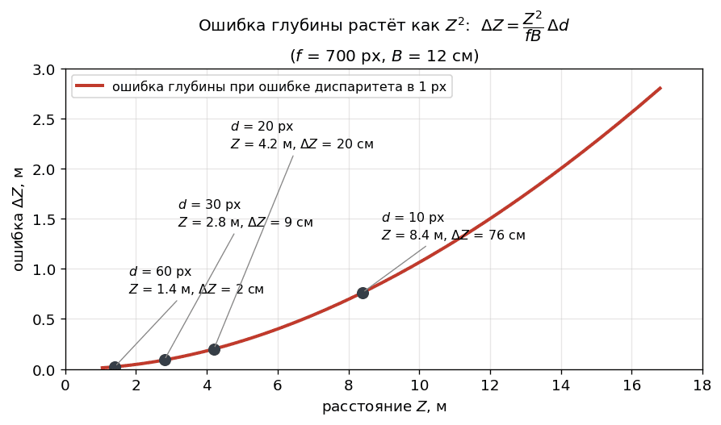
Ошибка определения глубины при ошибке диспаритета ровно в 1 пиксель, для камеры с f = 700 px и базой 12 см. По горизонтали расстояние до точки, по вертикали ошибка в метрах. Отложена точная разность Z(d) − Z(d+1), поэтому подписанные значения совпадают с нижней строкой таблицы: при d = 60 px точка в 1.4 м и ошибка 2 см, при d = 30 px это 2.8 м и 9 см, при d = 20 px — 4.2 м и 20 см, при d = 10 px — 8.4 м и уже 76 см. Рост близок к квадратичному: по производной удвоение расстояния учетверяло бы ошибку точно, точная разность растёт чуть медленнее (76 см вместо 84 см при d = 10). Поиск соответствий
Блочный матчинг — базовый алгоритм. Для каждого пикселя левого кадра и каждого кандидата $d \in [0, D_{\max}]$ считается стоимость несовпадения окна:
\[C(u, v, d) = \sum_{(i,j)\in W} \big| I_L(u+i,\, v+j) - I_R(u - d + i,\, v + j) \big| \quad \text{(SAD)}\]
и берётся $d$ с минимальной стоимостью. Вместо SAD используют SSD, нормированную кросс-корреляцию (устойчива к разнице экспозиций) или census transform — сравнение каждого пикселя окна с центральным, дающее битовую строку; census очень устойчив к различиям яркости камер и потому популярен в аппаратных реализациях.
Компромисс по размеру окна: маленькое окно даёт детальную карту, но шумит на однородных участках; большое сглаживает шум, но «размазывает» границы объектов и теряет тонкие структуры.
SGM / SGBM (Semi-Global Matching, Hirschmüller, 2005) — то, что реально используется. Локальный выбор минимума независимо в каждом пикселе даёт рваную карту, а полная глобальная оптимизация по двумерной решётке NP-трудна. SGM берёт середину: минимизирует энергию
\[E(D) = \sum_p C(p, D_p) + \sum_{q \in N_p}\Big( P_1\,[|D_p - D_q| = 1] + P_2\,[|D_p - D_q| > 1] \Big)\]
вдоль 8 или 16 одномерных направлений, где каждое решается динамическим программированием за линейное время, а результаты суммируются. Два штрафа неслучайны: малый $P_1$ разрешает плавные изменения глубины (наклонные поверхности), большой $P_2$ запрещает скачки везде, кроме настоящих границ объектов — причём $P_2$ обычно ещё и уменьшают там, где велик градиент изображения.
Верхний ряд — ректифицированная стереопара: мотоцикл в мастерской, снятый двумя камерами; правый кадр смещён относительно левого, и смещение мотоцикла заметно больше смещения стеллажа на заднем плане. Нижний ряд слева — эталонная карта диспаритета из датасета, белые пиксели это области без данных. Справа — результат простого блочного матчинга по SAD с окном 7 на 7 и максимальным диспаритетом 64: средняя абсолютная ошибка 4.5 пикселя. Общая структура восстановлена верно — мотоцикл ярко-оранжевый, то есть близко, стеллаж фиолетовый, то есть далеко, пол образует плавный градиент от дальнего к ближнему. Но видно и все типичные беды локального метода: крап на однородном полу и стенах, где окно не за что зацепиться, рваная левая кромка кадра шириной ровно D_max пикселей, куда правая камера просто не смотрит, и ореолы вокруг колёс — области окклюзии, закрытые для правой камеры. - Однотонные поверхности. Белая стена, чистое небо, гладкий пол: в окне не за что зацепиться, все кандидаты дают почти одинаковую стоимость. Именно поэтому активные стереокамеры (Intel RealSense) подсвечивают сцену ИК-паттерном — искусственная текстура делает сопоставление возможным.
- Повторяющаяся текстура. Кирпичная кладка, ряд одинаковых окон, забор: функция стоимости имеет несколько равных минимумов, и алгоритм выбирает произвольный. Симптом — полосатые артефакты на регулярных структурах.
- Окклюзии. Область, видимая одной камерой и закрытая для другой, соответствия не имеет в принципе. Ширина окклюзионной полосы у границы объекта примерно равна скачку диспаритета на этой границе. Детектируется left-right consistency check: посчитать карту дважды (левая как опорная и правая как опорная) и объявить невалидными пиксели, где результаты расходятся больше чем на 1.
- Блестящие и прозрачные поверхности. Блик на металле смещается при смене точки обзора, стекло вообще показывает разное. Стерео на них даёт систематически неверную глубину, а не просто шум.
- Полоса шириной $D_{\max}$ у левого края. Для этих пикселей правая камера не имеет соответствующей области — данных там нет физически.
- Потребительские камеры глубины. Intel RealSense — активное ИК-стерео; ZED — пассивное стерео с обработкой на GPU.
- Автопилот. Tesla делает ставку на монокулярные сети, Mobileye долго использовал стерео; в робототехнике стерео остаётся стандартом благодаря метрическому масштабу «из коробки» — в отличие от монокулярных методов.
- Обучаемое стерео. PSMNet, GA-Net, RAFT-Stereo строят cost volume — тот же тензор $C(u, v, d)$, что и в блочном матчинге, только признаки в нём выучены свёрточной сетью, а агрегация делается 3D-свёртками или рекуррентным уточнением. Обратите внимание: геометрия осталась прежней, обучаемой стала только функция стоимости и способ её сглаживания.
- Multi-View Stereo. Обобщение на десятки кадров (COLMAP, OpenMVS): та же эпиполярная геометрия плюс совместная оптимизация всех поз и точек (bundle adjustment).
- Забывать, что диспаритет обратно пропорционален глубине, а не пропорционален. Ближе объект — больше диспаритет. Карта диспаритета и карта глубины визуально инвертированы друг относительно друга.
- Считать точность глубины постоянной. Она падает как $Z^2$: по первому порядку удвоение расстояния учетверяет ошибку. Всегда указывайте, на какой дистанции заявлена точность.
- Путать фундаментальную и эссенциальную матрицы. $E$ работает в нормализованных координатах и требует известной $K$, у неё 5 DOF, и из неё извлекаются $R$ и $t$. $F$ работает в пикселях, не требует $K$, у неё 7 DOF, и без калибровки она даёт реконструкцию лишь с точностью до проективного преобразования.
- Забывать про ректификацию. Без неё поиск соответствий двумерный и в разы дороже, а формула $Z = fB/d$ вообще неприменима.
- Ожидать плотной карты глубины на однотонной сцене. Пассивное стерео на белой стене физически не может дать глубину. Нужен активный проектор паттерна или другой сенсор.
- Увеличивать базу без оглядки. Она улучшает точность на дальних дистанциях, но увеличивает окклюзии и перспективные различия, ухудшая сопоставление вблизи.
- Не делать left-right consistency check. Без него окклюзионные области заполняются правдоподобным на вид мусором, который затем распространяется дальше по пайплайну.
Что утверждает эпиполярное ограничение и зачем оно нужно?
Точке $x$ на первом снимке соответствует на втором снимке не точка, а целая прямая $l' = Fx$ — след эпиполярной плоскости, проходящей через оба оптических центра и точку сцены. Алгебраически это записывается как $x'^\top F x = 0$. Практическая ценность в том, что поиск соответствия сужается с двумерного до одномерного, что и ускоряет вычисления, и резко снижает число ложных пар.
Чем эссенциальная матрица отличается от фундаментальной?
Эссенциальная работает в нормализованных координатах и требует известной матрицы внутренних параметров, у неё 5 степеней свободы и вид $E = [t]_\times R$, из неё извлекаются поворот и сдвиг между камерами с точностью до масштаба. Фундаментальная работает в пиксельных координатах, знания $K$ не требует, имеет 7 степеней свободы и даёт реконструкцию лишь с точностью до произвольного проективного преобразования.
Что такое ректификация и что она даёт?
Перепроецирование обоих кадров на общую плоскость так, чтобы эпиполярные линии стали горизонтальными и совпали по номеру строки. После неё соответствие точки ищется только вдоль строки, поиск становится одномерным и векторизуемым, а глубина считается по простой формуле $Z = fB/d$.
Выведите связь глубины и диспаритета.
Точка с координатами $(X, Y, Z)$ проецируется в левой камере в $u_L = fX/Z + c_x$, в правой, сдвинутой на базу $B$, в $u_R = f(X-B)/Z + c_x$. Разность даёт $d = fB/Z$, откуда $Z = fB/d$. Координата $X$ сокращается, то есть диспаритет зависит только от глубины.
Посчитайте глубину и оцените её точность для f = 700 px, B = 12 см, d = 20 px.
$Z = 700 \cdot 0.12 / 20 = 4.2$ метра. Ошибка глубины при ошибке диспаритета $\Delta d$ оценивается по производной как $\Delta Z = Z^2 \Delta d / (fB)$, то есть при $\Delta d = 1$ пиксель получаем $4.2^2/84 = 0.21$ метра (точная разность $84/20 - 84/21 = 0.20$ метра). Ошибка растёт примерно как квадрат расстояния: на 8.4 метра оценка по производной даёт 84 сантиметра, точная разность — 76.
В каких ситуациях стерео принципиально не работает?
На однотонных поверхностях, где все кандидаты дают одинаковую стоимость сопоставления; на повторяющихся текстурах, где минимумов несколько и они равны; в окклюзиях, где область просто не видна второй камере; на бликующих и прозрачных поверхностях, вид которых меняется с точкой обзора. Первую проблему решают активной подсветкой ИК-паттерном, третью детектируют проверкой согласованности левой и правой карт.
-
Дискретное Преобразование Фурье
Пусть
\[\zeta = 2\pi \left( \frac{jl}{N} + \frac{km}{M} \right),\]
где $N, M$ — размеры изображения (по высоте и ширине), $j, k$ — координаты пикселя в пространственной области, а $l, m$ — координаты частоты в спектральной области.
Двумерное дискретное преобразование Фурье (ДПФ) раскладывает изображение в сумму комплексных гармоник:
\[X_{lm} = \sum_{j=0}^{N-1} \sum_{k=0}^{M-1} X_{jk}\, e^{-i\zeta}\]
Здесь:
- $X_{jk}$ — яркость пикселя в точке $(j,k)$;
- $X_{lm}$ — коэффициент Фурье, вклад частоты $(l,m)$;
- $e^{-i\zeta}$ — комплексная экспонента, описывающая синусоиду соответствующей частоты и фазы.
Обратное преобразование восстанавливает изображение:
\[X_{jk} = \frac{1}{NM} \sum_{l=0}^{N-1} \sum_{m=0}^{M-1} X_{lm}\, e^{+i\zeta}\]
Знак в экспоненте меняется, а множитель $1/(NM)$ обеспечивает нормировку. Прямое и обратное ДПФ — взаимно обратные операции: одна раскладывает изображение по частотам, другая собирает обратно, и никакой информации при этом не теряется. ДПФ — это просто смена базиса.
Сетка $8\times8$ из шестидесяти четырёх серых квадратиков — базисные функции двумерного частотного разложения. Левый верхний равномерно серый: это нулевая частота, постоянная составляющая. Вправо вдоль первой строки частота растёт по горизонтали, и квадратики превращаются во всё более частые вертикальные полосы. Вниз вдоль первого столбца частота растёт по вертикали, и получаются горизонтальные полосы. Внутри сетки обе частоты ненулевые, и узор становится диагональной или шахматной решёткой; правый нижний угол — самая мелкая шахматка, то есть максимальная частота по обеим осям. Любой блок $8\times8$ раскладывается по этим $64$ картинкам, а коэффициенты $X_{lm}$ — веса, с которыми они складываются обратно. Сепарабельность и быстрое преобразование
Экспонента суммы равна произведению экспонент:
\[e^{-2\pi i \left(\frac{jl}{N} + \frac{km}{M}\right)} = e^{-2\pi i \frac{jl}{N}} \cdot e^{-2\pi i \frac{km}{M}}\]
поэтому двойную сумму можно переставить:
\[X_{lm} = \sum_{j=0}^{N-1} e^{-2\pi i \frac{jl}{N}} \left(\underbrace{\sum_{k=0}^{M-1} X_{jk}\, e^{-2\pi i \frac{km}{M}}}_{\text{одномерное ДПФ строки } j}\right)\]
То есть: сначала считаем одномерное ДПФ каждой строки, потом одномерное ДПФ каждого столбца полученной матрицы. Ядро сепарабельно, ровно как у гауссова фильтра.
Стоимость. Прямое вычисление одномерного ДПФ длины $N$ — это $N$ коэффициентов по $N$ слагаемых каждый, то есть $O(N^2)$. Для изображения $N \times N$ прямое двумерное ДПФ стоило бы $O(N^4)$: для $512\times512$ это $6.9 \cdot 10^{10}$ операций — недопустимо.
БПФ (быстрое преобразование Фурье, алгоритм Кули–Тьюки) сводит одномерное ДПФ к $O(N\log N)$ за счёт рекурсивного разделения на чётные и нечётные отсчёты. Тогда двумерное преобразование стоит
\[O(NM\log(NM))\]
Для $512\times512$: $262\,144 \cdot 18 \approx 4.7$ млн «бабочек» — доли миллисекунды. Разница с прямым вычислением — четыре порядка.
Важная практическая деталь: классический БПФ быстрее всего работает на размерах, раскладывающихся на малые простые множители (степени двойки, тройки, пятёрки). Поэтому изображение перед преобразованием часто дополняют нулями до удобного размера —
cv2.getOptimalDFTSizeделает именно это.Картинка из двух синусоид даёт в спектре всего несколько точек. Добавили мелкую рябь и шум — появились пики далеко от центра и шумовой фон. Обнулили всё вне круга вокруг центра и сделали обратное ДПФ: рябь и шум исчезли, а картинка стала размытой. Фильтр в спектре и есть свёртка в пространстве. Амплитуда и фаза
Каждый коэффициент $X_{lm}$ комплексный, и его раскладывают на две вещественные величины.
Амплитуда — насколько сильно данная частота присутствует в изображении:
\[A_{lm} = |X_{lm}| = \sqrt{\Re(X_{lm})^2 + \Im(X_{lm})^2}\]
Фаза — с каким сдвигом эта частота входит:
\[\phi_{lm} = \operatorname{atan2}\big(\Im(X_{lm}),\ \Re(X_{lm})\big)\]
Ключевой факт, который проверяется на собеседовании: основная информация о структуре сцены закодирована в фазе, а не в амплитуде. Если обнулить все фазы и восстановить изображение по одним амплитудам, получится бесформенное пятно. Если, наоборот, все амплитуды заменить единицами, а фазы сохранить, — сцена будет узнаваема.
Почему так. Амплитудный спектр естественных изображений очень похож у всех снимков: энергия сосредоточена в низких частотах и спадает примерно как $1/f$. То есть амплитуда несёт мало отличительной информации. А фаза кодирует взаимное расположение гармоник: именно совпадение фаз в нужной точке создаёт границу, а совпадение по всей линии — контур объекта.
Пять панелей слева направо: исходное изображение; амплитуда $|X_{lm}|$ в логарифмической шкале (нулевая частота в центре, светлое — больший вклад); фаза $\phi_{lm}\in[-\pi,\pi]$, которая выглядит почти как случайный шум; и два обратных преобразования. Четвёртая панель — обратное ДПФ, где все фазы обнулены: остаётся бесформенное облако, сцену узнать невозможно. Пятая — обратное ДПФ, где все амплитуды заменены на единицу, а фазы сохранены: оператор с камерой и штатив читаются сразу. Это и есть наглядное подтверждение тезиса выше — расположение объектов закодировано в фазе, а не в амплитуде. Теорема о свёртке
Главная причина, по которой ДПФ вообще нужно в обработке изображений:
\[\mathcal{F}\{I * K\} = \mathcal{F}\{I\} \cdot \mathcal{F}\{K\}\]
Свёртка — операция дорогая и нелокальная, поэлементное умножение — тривиальная. Отсюда алгоритм быстрой свёртки:
- посчитать $\mathcal{F}\{I\}$ и $\mathcal{F}\{K\}$ (ядро дополняется нулями до размера изображения);
- перемножить спектры поэлементно;
- взять обратное преобразование.
Когда это выгодно. Сравним стоимости для изображения $H \times W$ и ядра $k \times k$.
- Прямая свёртка: на каждый из $HW$ пикселей приходится $k^2$ умножений и сложений, итого $\approx 2\,HW\,k^2$ операций. Растёт квадратично по $k$.
- Через БПФ: три преобразования (два прямых и одно обратное), каждое примерно $5\,HW\log_2(HW)$ вещественных операций, плюс $6\,HW$ на поэлементное умножение. От $k$ не зависит вообще.
Подставим $H = W = 512$, то есть $HW = 262\,144$ и $\log_2(HW) = 18$:
\[3 \cdot 5 \cdot 262\,144 \cdot 18 + 6 \cdot 262\,144 \approx 72.4 \text{ млн операций}\]
Приравняем к стоимости прямой свёртки:
\[2 \cdot 262\,144 \cdot k^2 = 72.4 \cdot 10^6 \quad\Longrightarrow\quad k^2 \approx 138 \quad\Longrightarrow\quad k \approx 11.7\]
Итог: на изображении $512\times512$ FFT-свёртка начинает выигрывать примерно с ядра $12\times12$. На практике порог называют в диапазоне $10$–$20$, потому что константы зависят от реализации: у прямой свёртки лучше локальность памяти, а у FFT есть накладные расходы на дополнение нулями.
Две важные оговорки:
- Сепарабельные ядра меняют расклад. Гауссиану применяют двумя одномерными проходами за $2k$ операций на пиксель вместо $k^2$, и FFT для неё почти никогда не выгоден. Порог $k \approx 12$ относится к произвольным, несепарабельным ядрам.
- ДПФ подразумевает периодичность. Свёртка через FFT получается циклической: то, что уходит за правый край, приходит слева. Чтобы получить обычную линейную свёртку, изображение и ядро дополняют нулями минимум до $H + k - 1$ по каждой оси.
Слева — схема: от блока «I и K» ведут два пути к блоку «I * K». Верхний, красный, подписан «прямая свёртка: $2 \cdot H \cdot W \cdot k^2$ операций». Нижний, зелёный, идёт через три шага — FFT обоих операндов, поэлементное умножение спектров, обратное FFT — и его стоимость порядка $15 \cdot H \cdot W \cdot \log_2(H \cdot W)$ и от $k$ не зависит. Справа — график для изображения $512\times512$: по горизонтали размер ядра $k$ от $3$ до $40$, по вертикали число операций в миллионах по линейной шкале. Красная парабола — прямая свёртка, растущая как $k^2$: при $k = 40$ она доходит до $840$ млн. Зелёная горизонтальная прямая на уровне около $72$ млн — стоимость через FFT. Кривые пересекаются при $k \approx 11.7$: левее выгоднее прямая свёртка, правее — FFT. Периодичность, утечка спектра и звон
1. ДПФ считает изображение периодическим. Формула не знает, что у картинки есть край: она предполагает, что изображение бесконечно повторяется во все стороны. А у реального снимка левый край не совпадает с правым, значит в этой воображаемой периодической картине есть разрыв — резкая вертикальная и горизонтальная граница на стыке копий.
Разрыв — это широкий спектр. Поэтому на амплитудном спектре почти любого снимка видны яркий горизонтальный и вертикальный крест через центр: это не структура сцены, это артефакт краёв. Явление называется утечка спектра (spectral leakage), и его легко принять за реальные частоты изображения.
Лечение — оконная функция: перед преобразованием изображение умножают на окно, плавно спадающее к нулю по краям (Ханна, Хэмминга, Блэкмана). Тогда края склеиваются без разрыва, крест исчезает. Плата — небольшое размытие спектра и потеря информации о краевых пикселях.
2. Резкая маска в спектре даёт звон. Если вырезать в спектре круг с резкой границей (идеальный низкочастотный фильтр), то в пространстве ему соответствует функция вида $\mathrm{sinc}$ с бесконечными затухающими осцилляциями. После обратного преобразования вокруг каждой границы появляются концентрические волны — звон Гиббса.
Лечение — сглаживать маску: брать гауссово или баттервортово окно вместо резкого круга. То же соображение объясняет, почему гауссово размытие в пространстве не даёт звона: спектр гауссианы — снова гауссиана, монотонная и без боковых лепестков.
3. Нулевая частота в углу. Численные библиотеки (
np.fft.fft2,cv2.dft) возвращают спектр так, что нулевая частота стоит в левом верхнем углу, а высокие частоты собраны в центре массива. Для визуализации и для построения круговых масок это неудобно: спектр выглядит как четыре ярких угла. Функцияnp.fft.fftshiftциклически сдвигает массив так, чтобы ноль оказался в центре, аifftshiftвозвращает обратно. Забыть про сдвиг — значит построить маску не там, где нужно.Левый столбец — исходное изображение и его лог-амплитудный спектр $\log(1+|X_{lm}|)$ с нулевой частотой в центре. Верхний ряд: в спектре оставили только круг радиуса $30$ вокруг центра — обратное ДПФ даёт размытую картинку, где сохранились крупные формы и общая освещённость, но появились волнообразные разводы (звон от резкого края маски). Нижний ряд: тот же круг, наоборот, вырезали — остались только контуры и мелкая текстура на ровном сером фоне. Все три спектральные панели нарисованы в одной цветовой шкале, поэтому их можно сравнивать напрямую. Две панели. Слева — полутоновая фотография белки на пне, размер $512\times512$, по осям отложены номера строки и столбца. Справа — амплитуда её двумерного ДПФ после сдвига нулевой частоты в центр: по осям отложены номера частот от $-256$ до $+256$. Основная энергия собрана в яркой точке в самом центре — это низкие частоты, то есть общая освещённость и крупные формы. Обратите внимание на отчётливый светлый крест — вертикальную и горизонтальную линии, проходящие через центр: это не структура сцены, а та самая утечка спектра от разрыва на краях кадра, о которой идёт речь выше. Слабые диагональные лучи вокруг центра соответствуют направлениям шерсти и краёв пня. Что этим делают на практике
1. Подавление периодических помех. Регулярная помеха — растр полиграфического оттиска на скане, муар от повторной съёмки экрана, наводка от сети $50$ Гц на кадрах, полосы от неисправной строчной развёртки — в пространстве выглядит как сложная структура, а в спектре занимает несколько отдельных ярких точек. Алгоритм прост: посчитать ДПФ, найти в спектре аномально яркие пики вне центра, погасить их (обязательно вместе с симметричными относительно центра!), сделать обратное преобразование. То, что в пространстве требовало бы сложного фильтра, в спектре решается зануличением десятка коэффициентов. Это, пожалуй, самый убедительный аргумент в пользу частотной области.
2. Оценка размытия. У резкого снимка амплитудный спектр широкий, у размытого высокие частоты подавлены. Отсюда простые метрики фокуса: доля энергии выше некоторого радиуса, средняя частота спектра. Более того, по спектру можно понять тип размытия: равномерное движение камеры оставляет в спектре периодические тёмные полосы, перпендикулярные направлению смаза, а по их периоду восстанавливается длина смаза. На этом строится слепая деконволюция.
3. Корреляция и выравнивание. Взаимная корреляция двух изображений — это тоже свёртка, значит она тоже считается через FFT. Фазовая корреляция идёт дальше: у произведения спектров $X_1 \overline{X_2}$ берут только фазу (делят на модуль), и обратное преобразование даёт резкий пик ровно в точке сдвига между кадрами. Метод устойчив к разнице освещённости, потому что вся амплитудная информация выброшена. Реализован как
cv2.phaseCorrelateи используется в стабилизации видео и в выравнивании кадров при склейке.- Считать амплитуду важнее фазы. Интуиция подсказывает обратное — амплитуда красиво выглядит и её обычно рисуют, — но структуру сцены несёт фаза. Восстановление по одной амплитуде даёт бесформенное пятно, по одной фазе — узнаваемое изображение.
- Забыть
fftshift. Библиотеки возвращают спектр с нулевой частотой в углу. Без сдвига картинка выглядит как четыре ярких угла вместо яркого центра, а круговая маска, построенная «вокруг середины массива», вырежет не низкие частоты, а высокие. Не забывайте и обратныйifftshiftперед обратным преобразованием. - Читать логарифмическую шкалу как линейную. Спектр почти всегда рисуют как $\log(1 + |X|)$, потому что динамический диапазон достигает шести-семи порядков. На такой картинке разница в один тон соответствует разнице в разы, а не на проценты. Утверждение «здесь энергии почти столько же, сколько там» по логарифмической картинке делать нельзя.
- Резать спектр идеальным кругом. Резкий край маски даёт звон Гиббса — концентрические волны вокруг каждой границы в восстановленном изображении. Сглаживайте маску: гауссово окно или фильтр Баттерворта.
- Игнорировать периодичность. ДПФ считает изображение зациклённым. Отсюда и крест на спектре от несовпадающих краёв, и циклический характер свёртки через FFT. Для честной линейной свёртки дополняйте нулями до $H + k - 1$; для чистого спектра применяйте оконную функцию.
- Забыть про эрмитову симметрию. У вещественного изображения спектр удовлетворяет $X_{-l,-m} = \overline{X_{lm}}$, то есть половина коэффициентов избыточна. Если модифицировать спектр (гасить пик, ставить маску) не симметрично, обратное преобразование даст комплексный результат, и мнимая часть — не численная погрешность, а признак ошибки. Для вещественных данных существуют
np.fft.rfft2иirfft2, которые хранят только независимую половину.
- Косинусное преобразование — близкий родственник ДПФ, на котором построен JPEG. Ключевое отличие в том, как обрабатывается край блока.
- Гауссов фильтр — почему у него нет звона, объясняется именно через спектр: преобразование Фурье гауссианы снова гауссиана, монотонная и без боковых лепестков.
- Генеративные модели — у частотного анализа появилось новое применение: спектральные артефакты. Изображения, сгенерированные GAN и диффузионными моделями, часто имеют характерную решётчатую структуру в высоких частотах (след транспонированных свёрток и апсемплинга), и детекторы «сгенерировано или снято» строятся ровно на этом признаке. Там же обсуждается, почему пересжатые в JPEG обучающие данные искажают такие спектральные признаки и ломают детекторы.
- Сети в частотной области. FFT применяется и внутри современных архитектур: Fourier Neural Operator, глобальные фильтры GFNet, а также как способ дёшево реализовать свёртку с очень большим ядром.
Что делает двумерное ДПФ и почему это дёшево?
Раскладывает изображение в сумму комплексных гармоник разных частот и направлений; это обратимая смена базиса, информация не теряется. Ядро сепарабельно, поэтому двумерное преобразование выполняется как одномерное ДПФ каждой строки, а затем каждого столбца. Быстрое преобразование (Кули–Тьюки) сводит одномерное ДПФ длины $N$ с $O(N^2)$ к $O(N\log N)$, а всё двумерное — к $O(NM\log(NM))$: для $512\times512$ это миллионы операций вместо десятков миллиардов.
Что несут амплитуда и фаза и что важнее?
Амплитуда $|X_{lm}|$ показывает, насколько сильно частота присутствует, фаза $\operatorname{atan2}(\Im, \Re)$ — с каким сдвигом. Структуру сцены несёт фаза: восстановление по одним амплитудам с нулевыми фазами даёт бесформенное пятно, а по одним фазам с единичными амплитудами — узнаваемое изображение. Причина в том, что амплитудный спектр у всех естественных снимков похож (спадает примерно как $1/f$), а взаимное расположение деталей закодировано именно в фазах.
Сформулируйте теорему о свёртке и скажите, когда FFT-свёртка выгодна.
Преобразование Фурье свёртки равно произведению преобразований: $\mathcal{F}\{I * K\} = \mathcal{F}\{I\}\cdot\mathcal{F}\{K\}$. Прямая свёртка стоит $\approx 2HWk^2$ и растёт квадратично по размеру ядра; через FFT — около $15\,HW\log_2(HW)$ и от $k$ не зависит вовсе. Для $512\times512$ FFT-вариант обходится примерно в $72$ млн операций, что соответствует $k^2 \approx 138$, то есть ядру около $12\times12$. Оговорка: для сепарабельных ядер (гаусс) прямой путь стоит $2k$ на пиксель, и FFT почти никогда не выигрывает.
Что такое утечка спектра и как с ней бороться?
ДПФ неявно считает изображение периодическим, а у реального снимка левый край не совпадает с правым — в воображаемой периодической картине возникает разрыв. Разрыв имеет широкий спектр, поэтому на амплитудной карте появляется яркий горизонтальный и вертикальный крест через центр, не имеющий отношения к содержанию сцены. Лечение — оконная функция (Ханна, Хэмминга), плавно спадающая к нулю у краёв: края склеиваются без скачка и крест исчезает.
Откуда берётся звон Гиббса при частотной фильтрации?
Если в спектре вырезать круг с резкой границей, то соответствующая ему функция в пространстве — это $\mathrm{sinc}$ с бесконечными затухающими осцилляциями. Свёртка с ней даёт вокруг каждой границы концентрические волны. Лечение — сглаженная маска: гауссово окно или фильтр Баттерворта. То же соображение объясняет, почему гауссово размытие звона не даёт: его спектр монотонен и не имеет боковых лепестков.
Зачем нужен fftshift?
Библиотеки возвращают спектр с нулевой частотой в левом верхнем углу и высокими частотами в середине массива.
fftshiftциклически переставляет квадранты так, чтобы ноль оказался в центре, — только после этого спектр можно осмысленно смотреть и строить на нём круговые маски. Перед обратным преобразованием нужно вернуть исходную раскладку черезifftshift.
-
Косинусное преобразование
ДКП (Discrete Cosine Transform) — вещественное ортогональное преобразование, раскладывающее сигнал по косинусам разных частот. Практически везде используется вариант DCT-II; для одномерного сигнала длины $N$ он определяется так:
\[X_k = c_k \sum_{n=0}^{N-1} x_n \cos\!\left[\frac{\pi}{N}\left(n + \tfrac{1}{2}\right)k\right], \qquad k = 0,\dots,N-1\]
с нормировкой $c_0 = \sqrt{1/N}$ и $c_k = \sqrt{2/N}$ при $k > 0$ (тогда преобразование ортонормировано и обратное имеет тот же вид).
Двумерный вариант получается применением одномерного по строкам, а затем по столбцам — ядро сепарабельно, как и у ДПФ:
\[X_{lm} = c_l c_m \sum_{j=0}^{N-1}\sum_{k=0}^{M-1} X_{jk} \cos\!\left[\frac{\pi}{N}\left(j + \tfrac12\right)l\right] \cos\!\left[\frac{\pi}{M}\left(k + \tfrac12\right)m\right]\]
Здесь $X_{jk}$ — яркость пикселя, $X_{lm}$ — коэффициент, показывающий вклад частоты $(l, m)$.
Обратите внимание на слагаемое $+\tfrac12$ в аргументе косинуса. Это не косметическая деталь: именно полупиксельный сдвиг отличает ДКП от вещественной части ДПФ и обеспечивает все его полезные свойства. Разбору этого сдвига посвящён следующий раздел.
Распространённое и неверное объяснение звучит так: «раз $e^{-i\zeta} = \cos\zeta - i\sin\zeta$, то ДКП получается, если у ДПФ оставить только косинусы». Формально это выглядело бы как
\[X_{lm} \overset{?}{=} \sum_{j}\sum_{k} X_{jk}\cos\zeta = \Re\!\left[\sum_j\sum_k X_{jk}e^{-i\zeta}\right], \qquad \zeta = 2\pi\left(\frac{jl}{N} + \frac{km}{M}\right)\]
Это не так. Достаточно сравнить аргументы: у ДПФ он равен $2\pi jl/N$, у DCT-II — $\pi(j + \tfrac12)l/N$. Отличий два, и оба существенны:
- Множитель $\pi$ вместо $2\pi$: базисные косинусы ДКП имеют вдвое меньшую частоту, то есть на интервале длины $N$ укладывается вдвое меньше периодов.
- Сдвиг на $\tfrac12$: отсчёты берутся не в узлах сетки, а в серединах ячеек.
Более того, «вещественная часть ДПФ» — это преобразование, которое не является ортогональным и не имеет корректного обратного: набор косинусов с целыми частотами $2\pi jl/N$ линейно зависим на $N$ точках (косинус частоты $l$ и частоты $N - l$ совпадают), так что восстановить сигнал по таким коэффициентам однозначно невозможно. DCT-II ортогонален и обратим точно.
Правильное утверждение звучит иначе: DCT-II — это ДПФ чётного продолжения сигнала, а не вещественная часть ДПФ самого сигнала.
Чётное продолжение — суть DCT
Продолжим сигнал $x_0, \dots, x_{N-1}$ зеркально, отразив его относительно правой границы, и получим последовательность длины $2N$:
\[y = [\,x_0,\ x_1,\ \dots,\ x_{N-1},\ x_{N-1},\ \dots,\ x_1,\ x_0\,]\]
Обратите внимание, где проходит ось симметрии: не через отсчёт $x_{N-1}$, а между отсчётами $N-1$ и $N$, то есть в точке $n = N - \tfrac12$. Такое отражение называется полуотсчётным (half-sample symmetric). Ровно отсюда и берётся $+\tfrac12$ в формуле.
Теперь посчитаем обычное ДПФ этой удвоенной последовательности. Прямая выкладка даёт
\[Y_k = 2\,e^{\,i\pi k/(2N)}\,\sum_{n=0}^{N-1} x_n \cos\!\left[\frac{\pi}{N}\left(n+\tfrac12\right)k\right]\]
Множитель $e^{i\pi k/(2N)}$ — чистая фаза, отражающая сдвиг системы отсчёта. Убрав её, получаем в точности сумму DCT-II. То есть ДКП — это ДПФ зеркально продолженного сигнала, записанное так, чтобы результат оказался вещественным.
Почему это важно. Как обсуждалось в вопросе про ДПФ, ДПФ неявно считает сигнал периодическим: последний отсчёт стыкуется с первым. Если сигнал имеет тренд (а яркость внутри блока изображения почти всегда имеет), на этом стыке возникает разрыв, и разрыв даёт широкий спектр — энергия расползается по всем частотам.
Чётное продолжение эту проблему устраняет по построению: зеркало стыкуется с оригиналом без скачка, потому что стык проходит между двумя одинаковыми значениями. Разрыва нет — спектр остаётся компактным.
Это и есть весь секрет: ДКП концентрирует энергию лучше ДПФ не потому, что косинусы чем-то лучше экспонент, а потому, что чётное продолжение не создаёт разрыва на краю блока.
Возьмём блок из восьми отсчётов, представляющий плавный переход яркости (типичная строка внутри блока $8\times8$):
\[x = [\,20,\ 35,\ 50,\ 68,\ 85,\ 105,\ 125,\ 150\,]\]
Периодическое продолжение (ДПФ): после $150$ идёт $20$ — скачок на $130$ уровней.
Чётное продолжение (ДКП): после $150$ идёт снова $150$, затем $125$ и так далее — никакого скачка.
Посчитаем модули коэффициентов (нормировка ортонормированная):
$k$ $0$ $1$ $2$ $3$ $4$ $5$ $6$ $7$ $\lvert\text{ДПФ}\rvert$ $226$ $68$ $37$ $28$ $28$ $28$ $37$ $68$ $\lvert\text{ДКП-II}\rvert$ $226$ $118$ $9$ $14$ $3$ $4$ $1$ $2$ Нулевые коэффициенты совпадают — это просто средняя яркость, умноженная на константу. А вот дальше картина совершенно разная.
Посчитаем, какая доля переменной части энергии (всё, кроме нулевого коэффициента) приходится на первый коэффициент:
- ДКП: $97.9\,\%$ — практически весь сигнал описывается одной гармоникой плюс средним.
- ДПФ: $32\,\%$ — остальное размазано по семи коэффициентам, причём высокочастотные ($k = 3,4,5$) остаются заметными.
Разница целиком объясняется разрывом на стыке периодов у ДПФ. Именно поэтому в JPEG стоит ДКП, а не ДПФ: обнулив у ДКП шесть последних коэффициентов, мы почти ничего не потеряем, а у ДПФ — потеряем сильно.
Три панели. Слева и в центре — один и тот же блок из восьми отсчётов, растущих от $20$ до $150$ (жирная тёмная ломаная), и его продолжение влево и вправо. Слева продолжение периодическое, как подразумевает ДПФ: на каждой границе блока сигнал обрывается со $150$ до $20$, и обе точки разрыва отмечены красными стрелками. В центре продолжение чётное, как подразумевает ДКП-II: за блоком идёт его зеркальная копия, и края сшиваются без скачка — зелёная стрелка указывает на гладкий стык. Справа — модули коэффициентов обоих преобразований для этого блока: красные столбики ДПФ и зелёные ДКП. Нулевые коэффициенты совпадают и равны $226$. У ДКП первый коэффициент равен $118$, а все остальные не превышают $14$; у ДПФ энергия размазана — коэффициенты $1$ и $7$ равны $68$, коэффициенты $2$ и $6$ равны $37$, средние около $28$. В подписи на панели указано: на первый переменный коэффициент у ДКП приходится $97.9\,\%$ переменной части, у ДПФ — только $32\,\%$. Все $64$ базисные функции ДКП для блока $8\times8$: слева направо растёт горизонтальная частота $m$, сверху вниз — вертикальная $l$. Левая верхняя клетка ($l=m=0$) — ровная заливка, её коэффициент есть просто средняя яркость блока (в JPEG его называют DC-коэффициентом); правая нижняя — самая мелкая шахматка, то есть самая высокая частота по обеим осям. Любой блок $8\times8$ раскладывается во взвешенную сумму этих картинок, а веса и есть $X_{lm}$. Почему именно ДКП, а не что-то ещё
Существует преобразование, оптимальное для декорреляции по определению, — преобразование Карунена–Лоэва (KLT), оно же PCA. Его базис — собственные векторы ковариационной матрицы сигнала. KLT гарантированно даёт максимальную концентрацию энергии среди всех ортогональных преобразований.
Проблема KLT в том, что его базис зависит от данных: его надо считать по конкретному изображению и передавать вместе с ним, а это дорого и по вычислениям, и по объёму.
Спасает следующее наблюдение. Соседние пиксели изображения сильно скоррелированы, и хорошей моделью строки пикселей служит марковский источник первого порядка (AR(1)) с ковариацией
\[R_{ij} = \rho^{\,|i-j|}\]
где $\rho$ — коэффициент корреляции соседних пикселей. Для естественных изображений $\rho$ обычно лежит в диапазоне $0.9$–$0.98$; типичное значение — около $0.95$.
Ключевой результат: при $\rho \to 1$ собственные векторы такой матрицы стремятся к базисным функциям DCT-II. А значит, при реалистичном $\rho \approx 0.95$ ДКП практически совпадает с оптимальным KLT — по коэффициенту усиления кодирования отставание составляет доли процента.
Отсюда и итоговая формулировка: ДКП — это фиксированный базис, который почти оптимален для типичного изображения. Его не надо считать по данным, для него есть быстрые алгоритмы (сводится к БПФ, $O(N\log N)$), он вещественный — и при этом он практически так же хорош, как настоящий KLT. Именно поэтому все стандарты сжатия последних сорока лет построены на нём.
Конвейер JPEG
Шаг 1. RGB $\to$ YCbCr. Изображение переводят в пространство с отделённой яркостью: $Y$ — яркость, $Cb$ и $Cr$ — цветоразностные каналы. Обратимо, потерь нет.
Шаг 2. Субдискретизация цветности 4:2:0. Каналы $Cb$ и $Cr$ прореживают вдвое по обеим осям — из четырёх отсчётов остаётся один. Это первый источник потерь: три четверти цветовой информации выбрасываются сразу и безвозвратно. Работает потому, что разрешающая способность глаза к цвету заметно ниже, чем к яркости. Уже на этом шаге объём данных сокращается вдвое: было $3$ отсчёта на пиксель, стало $1.5$.
Шаг 3. Разбиение на блоки $8\times8$ и сдвиг на $-128$. Каждый канал режут на блоки $8\times8$ пикселей, из каждого значения вычитают $128$. Диапазон $[0, 255]$ превращается в $[-128, 127]$ — теперь он симметричен относительно нуля.
Зачем сдвиг: он убирает большую постоянную составляющую из DC-коэффициента. Без него DC был бы порядка $8 \cdot 128 = 1024$ и требовал бы лишнего разряда, а после сдвига распределение DC становится центрированным около нуля, что заметно улучшает энтропийное кодирование на последнем шаге. Заодно все коэффициенты укладываются в единый знаковый диапазон.
Шаг 4. ДКП блока $8\times8$. Получаем $64$ коэффициента: один DC (левый верхний, средняя яркость блока) и $63$ AC.
Шаг 5. Квантование. Второй и главный источник потерь. Каждый коэффициент делят на соответствующий элемент таблицы квантования $Q$ и округляют:
\[\hat{X}_{lm} = \operatorname{round}\!\left(\frac{X_{lm}}{Q_{lm}}\right)\]
Стандартная таблица яркости из приложения к стандарту начинается так:
\[Q = \begin{bmatrix}16&11&10&16&24&\cdots\\12&12&14&19&26&\cdots\\14&13&16&24&40&\cdots\\14&17&22&29&51&\cdots\\ \vdots& & & & &\ddots\end{bmatrix}\]
и доходит до $99$–$121$ в правом нижнем углу. Числа растут к высоким частотам — именно там квантование грубее, потому что глаз к высокочастотным искажениям менее чувствителен. Для цветности используется отдельная, более грубая таблица.
Шаг 6. Зигзаг. Матрицу $8\times8$ разворачивают в вектор длины $64$ обходом по диагоналям от левого верхнего угла. Смысл в том, что после такого обхода коэффициенты идут примерно в порядке возрастания частоты, и все обнулившиеся высокочастотные коэффициенты собираются в один длинный хвост нулей в конце.
Шаг 7. RLE и Хаффман. Хвост нулей кодируется одним символом EOB (end of block), остальные пары «сколько нулей пропустить, какое значение дальше» — кодом Хаффмана. DC-коэффициенты кодируются разностями с предыдущим блоком (они сильно скоррелированы между соседними блоками). Этот шаг без потерь.
Возьмём гладкий блок $8\times8$ со средней яркостью $150.9$ и небольшой модуляцией.
После сдвига на $-128$ средняя яркость становится $22.89$.
DC-коэффициент при ортонормированном ДКП равен $8 \times$ среднее значение блока:
\[X_{00} = 8 \cdot 22.89 = 183.1\]
Квантование при качестве $50$ (стандартная таблица, $Q_{00} = 16$):
\[\hat{X}_{00} = \operatorname{round}\!\left(\frac{183.1}{16}\right) = \operatorname{round}(11.4) = 11\]
Для восстановления декодер умножит $11$ на $16$ и получит $176$ вместо $183.1$ — ошибка в $7$ единиц, что после деления на $8$ даёт меньше одного уровня яркости. Незаметно.
А что стало с остальными $63$ коэффициентами? После квантования с этой таблицей ненулевыми осталось всего $6$ коэффициентов из $64$. Остальные $58$ обнулились и после зигзага собрались в хвост, который кодируется одним символом EOB.
Влияние quality factor. Стандартная таблица соответствует качеству $50$; для других значений её масштабируют:
\[s = \begin{cases} 5000/q, & q < 50\\ 200 - 2q, & q \ge 50\end{cases}, \qquad Q'_{lm} = \operatorname{clip}\!\left(\left\lfloor \frac{Q_{lm}\,s + 50}{100} \right\rfloor,\ 1,\ 255\right)\]
Для того же блока:
Quality $s$ $Q'_{00}$ Ненулевых коэффициентов $90$ $20$ $3$ $19$ из $64$ $50$ $100$ $16$ $6$ из $64$ $15$ $333$ $53$ $4$ из $64$ Видно, что quality управляет ровно одной вещью — грубостью шага квантования. Чем он грубее, тем больше коэффициентов округляется в ноль и тем короче получается код.
Сверху — цепочка из восьми блоков: RGB, YCbCr, субдискретизация 4:2:0 по цветности, разбиение на блоки $8\times8$ со сдвигом $-128$, ДКП-II в каждом блоке, деление на таблицу квантования $Q$, зигзаг, RLE плюс Хаффман. Под блоками подписано, где что происходит: первые два шага и последние два — без потерь (смена базиса и энтропийное кодирование), а потери сосредоточены в двух местах — в субдискретизации, где выбрасывается три четверти отсчётов цветности, и в квантовании, которым управляет параметр quality. Снизу — один и тот же фрагмент снимка (шлем и оранжевый скафандр) при quality $90$, $40$, $15$ и $5$; в подписях указан размер всего файла: $66$, $24$, $14$ и $8$ КБ. При $90$ и $40$ отличий почти не видно. При $15$ проступает мягкая блочная структура и мутнеет граница шлема. При $5$ картинка распадается на отчётливые квадраты $8\times8$ с плоской заливкой, а цвет расползается пятнами далеко за границы объектов — это уже совместный эффект грубого квантования и субдискретизации цветности. Блочные артефакты
Три характерных дефекта JPEG, которые надо уметь называть.
1. Блочность (blocking). Каждый блок $8\times8$ квантуется независимо от соседей. При грубом квантовании в блоке остаётся только DC — то есть весь блок становится однородной заливкой своей средней яркостью. Соседние блоки получают чуть разные средние, и на их стыке появляется видимая ступенька. Это самый узнаваемый артефакт JPEG.
Именно поэтому в более поздних стандартах (H.264, HEVC, AV1) обязательно присутствует деблокинг-фильтр — сглаживание границ блоков как отдельная стадия декодирования. В JPEG его нет.
2. Звон (ringing) вокруг резких границ. Резкая граница внутри блока требует для своего описания высоких частот. Когда они обнуляются квантованием, восстановленный блок приобретает осцилляции — светлые и тёмные полосы вдоль границы. Это тот же эффект Гиббса, что и при резком обрезании спектра. Особенно заметен на тексте и на графике: вокруг чёрных букв на белом фоне появляется серая «дымка».
3. Расползание цвета (color bleeding). Следствие субдискретизации 4:2:0: цветовые каналы имеют вдвое меньшее разрешение, поэтому цвет «съезжает» на несколько пикселей за границу объекта. Больше всего страдают насыщенные красные детали на контрастном фоне — например, красный текст на белом.
Изображение разбито на блоки $8\times8$, в каждом взято ДКП, и оставлены только первые $k$ коэффициентов в зигзагообразном обходе от низких частот к высоким; нижний ряд показывает соответствующую маску, где чёрным отмечены оставленные коэффициенты. При $k=1$ от блока остаётся одна средняя яркость, и картинка превращается в мозаику из квадратов $8\times8$; при $k=4$ (это $6\,\%$ данных) сцена уже читается; при $k=16$ ($25\,\%$ данных) отличие от оригинала на глаз почти незаметно, RMSE $=7.4$ при диапазоне яркостей $0..255$. Именно на такой концентрации энергии в низких частотах и построен JPEG. Четыре панели, соединённые стрелками в цикл. Слева вверху (a) — исходная карта в сине-красной палитре jet, где красные извилистые полосы обозначают один класс, а синий фон — другой; по осям отложены номера узлов сетки $75\times75$. Стрелка вниз с подписью DCT ведёт к панели (b) — полю коэффициентов ДКП в логарифмической шкале, где заметно, что крупные по модулю коэффициенты сосредоточены в левом верхнем углу. Стрелка Filter ведёт к панели (c): всё, кроме треугольника из $465$ коэффициентов в левом верхнем углу (обведён красным пунктиром), обнулено — остальное поле стало однородно синим. Стрелка IDCT вверх ведёт к панели (d) — восстановленной карте: полосы сохранили форму и положение, но их края стали плавными и вокруг них появились слабые волны. Это одновременно демонстрация концентрации энергии в низких частотах и того самого звона от резкого обрезания спектра. - «ДКП — это вещественная часть ДПФ». Самая живучая ошибка, встречается даже в учебных материалах. У DCT-II другой аргумент косинуса: $\pi(n+\frac12)k/N$ против $2\pi nk/N$ — вдвое меньшая частота и сдвиг на полотсчёта. Правильная формулировка: ДКП есть ДПФ чётного (зеркального) продолжения сигнала. Именно продолжение, а не отбрасывание синусов, объясняет, почему у ДКП энергия концентрируется лучше.
- «JPEG просто режет высокие частоты». Неполно. Потери возникают в двух местах: при субдискретизации цветности 4:2:0 (выбрасывается три четверти отсчётов $Cb$ и $Cr$, ещё до всякого ДКП) и при квантовании коэффициентов. Более того, квантование не «режет» частоты, а огрубляет шаг — низкие частоты тоже квантуются, просто мельче.
- Многократное пересжатие. Каждое открытие и пересохранение JPEG — это новый цикл квантования, и ошибки накапливаются. Особенно быстро деградация идёт, если между сохранениями изображение хоть немного сдвинуть, повернуть или отресайзить: сетка блоков $8\times8$ смещается относительно прежней, и артефакты предыдущего сжатия становятся для нового кодера «содержанием», которое надо закодировать. При сохранении без изменений и с теми же параметрами JPEG почти идемпотентен, но это редкий случай.
- Забыть сдвиг на $-128$. Без него DC-коэффициент оказывается порядка $1024$ вместо диапазона около нуля, распределение DC перестаёт быть центрированным, и энтропийное кодирование теряет эффективность. При декодировании соответственно нужно прибавить $128$ обратно — иначе картинка выйдет чёрной.
- Путать DCT-II и DCT-III. DCT-III — это обратное преобразование к DCT-II (его иногда называют IDCT). В
scipy.fft.dctтип задаётся параметромtype, а нормировку надо указывать явно:norm='ortho', иначе прямое и обратное преобразования различаются множителем $2N$. - Применять ДКП к блоку целиком, а не к яркости. ДКП в JPEG применяется поканально к $Y$, $Cb$, $Cr$ по отдельности, а не к RGB-триплету. Применение к RGB напрямую работает, но сжимает заметно хуже: каналы RGB сильно скоррелированы между собой, и эта избыточность остаётся неиспользованной.
- Современные кодеки. HEVC и AV1 сохранили ту же идею, но добавили: блоки переменного размера ($4\times4$ до $32\times32$), внутрикадровое предсказание перед преобразованием, деблокинг-фильтр, а также DST (синусное преобразование) для блоков, где предсказание делает статистику асимметричной.
- Обучаемое сжатие. Нейросетевые кодеки заменяют фиксированный базис ДКП обучаемым автоэнкодером, а таблицу квантования — обучаемым энтропийным моделированием. При том же битрейте они уже уверенно обгоняют JPEG и конкурируют с AV1.
- Генеративные модели и артефакты — практический сюжет, о котором стоит помнить каждому, кто собирает датасет. Почти все изображения из интернета уже прошли JPEG, часто несколько раз. Их высокие частоты несут не структуру сцены, а сетку блоков $8\times8$ и следы квантования. Модель, обученная на таком материале, выучивает эти артефакты; детекторы сгенерированных изображений, построенные на спектральных признаках, ломаются от одного пересжатия; а генеративные модели, обученные на пережатых данных, воспроизводят блочность в своих выходах.
Как определяется DCT-II и чем её формула отличается от ДПФ?
$X_k = c_k\sum_n x_n \cos[\frac{\pi}{N}(n + \frac12)k]$. Отличий от ДПФ два: множитель $\pi$ вместо $2\pi$, то есть вдвое меньшая частота базисных функций, и сдвиг на полотсчёта $+\frac12$, то есть отсчёты берутся в серединах ячеек, а не в узлах. Двумерный вариант сепарабелен: одномерное преобразование по строкам, затем по столбцам.
Верно ли, что ДКП — это вещественная часть ДПФ?
Нет. Это распространённая ошибка. «Вещественная часть ДПФ» даже не является ортогональным преобразованием и не имеет однозначного обратного. Правильное утверждение: DCT-II есть ДПФ чётного продолжения сигнала — последовательности $[x_0,\dots,x_{N-1}, x_{N-1},\dots,x_0]$ длины $2N$, отражённой относительно точки $N - \frac12$. Именно эта полуотсчётная симметрия и порождает сдвиг $+\frac12$ в формуле; ДПФ такой последовательности отличается от суммы DCT-II лишь фазовым множителем $e^{i\pi k/(2N)}$.
Почему чётное продолжение улучшает концентрацию энергии?
ДПФ неявно считает сигнал периодическим, и на стыке последнего отсчёта с первым возникает разрыв, если у сигнала есть тренд. Разрыв имеет широкий спектр, поэтому энергия расползается по всем частотам. Зеркальное продолжение стыкует блок с его копией без скачка, поэтому спектр остаётся компактным. На блоке $[20, 35, 50, 68, 85, 105, 125, 150]$ ДКП собирает $97.9\,\%$ переменной энергии в первом коэффициенте, а ДПФ — только $32\,\%$.
Почему в стандартах используют именно ДКП?
Оптимальное по декорреляции преобразование — KLT (то же, что PCA), но его базис зависит от данных, и его пришлось бы считать и передавать. Для марковского источника первого порядка с ковариацией $\rho^{|i-j|}$ собственные векторы стремятся к базису DCT-II при $\rho \to 1$. У естественных изображений $\rho \approx 0.95$, поэтому ДКП практически совпадает с KLT по коэффициенту усиления кодирования, но при этом фиксирован, вещественен и вычисляется за $O(N\log N)$.
Перечислите шаги JPEG и скажите, где именно теряется информация.
RGB в YCbCr; субдискретизация цветности 4:2:0; разбиение на блоки $8\times8$ и сдвиг на $-128$; ДКП блока; деление на таблицу квантования и округление; зигзаг-обход; RLE и Хаффман. Потери возникают ровно в двух местах: при субдискретизации, где выбрасывается три четверти отсчётов $Cb$ и $Cr$, и при квантовании коэффициентов. Смена цветового пространства, сдвиг, само ДКП и энтропийное кодирование потерь не вносят. Quality factor масштабирует таблицу квантования: на гладком блоке при quality $90$ ненулевыми остаются $19$ коэффициентов из $64$, при $50$ — шесть, при $15$ — четыре.
Откуда берутся блочные артефакты и почему нельзя многократно пересжимать?
Каждый блок $8\times8$ квантуется независимо, поэтому при грубом квантовании соседние блоки получают чуть разные средние яркости и на их стыке видна ступенька; в современных кодеках это лечат отдельным деблокинг-фильтром, которого в JPEG нет. Многократное пересохранение накапливает ошибки квантования, особенно если между сохранениями изображение сдвигали, поворачивали или ресайзили — тогда сетка блоков смещается, и артефакты прошлого сжатия становятся для нового кодера полезным сигналом, который он старается сохранить.